Ye notes sirf lecture ka short summary nahi hain. Har concept ko aise arrange kiya gaya hai ki ek saal baad dobara padhne par bhi tumhe definition, intuition, example aur next step yaad aa jaye.
Is batch ka central idea: ML ka matlab algorithms ratna nahi. Data se pattern seekhna, problem ko sahi type me frame karna, aur real-world use case ke liye sahi approach choose karna hai.
ML basicsAI / ML / DLProblem typesHinglish
07Lectures covered
04ML learning settings
03ML use-case signals
01Core decision rule
01
What is Machine Learning?
Machine Learning ko ek line me samjho: data ke examples dekar system se pattern learn karwana, taaki wo naye input par useful output de sake.
Lecture timestamps: 00:04:30 - 00:19:58
Formal definition
Machine Learning computer science ka woh field hai jahan statistical techniques ki help se computers data se learn karte hain, bina har situation ke liye explicitly program kiye.
Simple language: ML ka main kaam hai data me chhupe patterns ko pakadna aur un patterns se new cases ka prediction karna.
Yaad rakhne wali line
Programming me hum rules likhte hain. ML me hum examples dete hain, aur system rules/patterns learn karta hai.
Explicit programming ka matlab
Agar kisi specific scenario ko handle karne ke liye programmer har condition ka code khud likhta hai, to woh explicit programming hai.
Har known condition ke liye rule.
New condition aayi to code update karna padega.
Rules bahut zyada ho jayein to system maintain karna mushkil.
Traditional programming flow
InputData
+
ProgramHuman-written rules
=
OutputResult
Logic pehle se programmer ke dimaag me hoti hai. System usi logic ko execute karta hai.
Machine learning flow
DataInput + output examples
+
AlgorithmPattern search
=
ModelLearned logic
Model ko new input do, wo learned relationship ke basis par output predict karega.
Lecture ka simple example: addition
Approach
Kaise kaam karta hai
Limitation / strength
Traditional program
Programmer ne explicitly do numbers add karne ka code likha.
Code jis input shape ke liye likha hai, wahi handle karega.
Machine Learning
Numbers aur unke sums ke examples do; model addition ka pattern learn karega.
Learned pattern new examples par apply ho sakta hai.
Important nuance: Ye example intuition ke liye hai. Real ML model “addition ka universal rule” magically nahi samajhta; uski generalization training data, model aur problem setup par depend karti hai.
Machine Learning kab traditional programming se better hoti hai?
Scenario 01
Rules bahut zyada hain
Email spam filter me har spam word aur pattern ka if-else rule likhna fragile ho jayega. Spammer wording change karega to rules baar-baar update karne padenge.
Scenario 02
Cases enumerate nahi kar sakte
Dog image classification me breeds, size, color, angle aur lighting ke infinite combinations hain. Har case ka code likhna practical nahi.
Scenario 03
Hidden pattern chahiye
Graphs se jo pattern visible nahi ho raha, ML model us data me deeper relationship discover karne me help kar sakta hai. Isse data mining kehte hain.
Data analysis vs data mining
Data analysis: graphs, summaries aur visualizations se patterns samajhna.
Data mining: ML algorithms ko use karke data me deeper ya hidden patterns discover karna.
Example: shopping data me products ka relation dekhkar recommendation ya store layout improve karna.
ML boom kyon aaya?
Internet aur smartphones ki wajah se data generation bahut badhi.
Modern hardware, GPUs aur cloud compute affordable hue.
Data + compute + better algorithms ne ML ko practical banaya.
02
AI vs ML vs DL
AI broad goal hai. ML AI ko data se build karne ka approach hai. DL ML ka neural-network based subset hai jo features bhi automatically learn kar sakta hai.
Lecture timestamps: 00:00:00 - 00:16:28
Nested-set diagram
Circles ko hierarchy ki tarah dekho: har DL system ML ka part hai, aur har ML system AI ke broader goal ke andar aa sakta hai.
DL
ML
AI
AI ka matlab kya hai?
Artificial Intelligence ka broad aim hai machines ko aise tasks karwana jahan intelligence ki zarurat hoti hai.
Reasoning aur problem solving.
Planning aur decision making.
Language understanding.
Vision, perception, creativity ya learning.
AI is a goal/umbrella: AI ke andar rule-based systems, search, expert systems, ML aur DL sab aa sakte hain.
Rule-based system se ML tak
Expert / symbolic system
Expert se knowledge lekar knowledge base aur if-then rules banaye jaate hain. Closed, well-defined problems me useful, lekin rules bahut badhne par maintenance difficult.
ExpertKnowledge
->
RulesIf-then logic
->
DecisionRule execution
Machine learning system
Manually har rule likhne ke bajay labeled ya unlabeled data diya jaata hai. Algorithm data se mathematical pattern learn karta hai.
DataExamples
->
AlgorithmPattern learning
->
PredictionNew case
Machine Learning
ML me input data ko algorithm ke through process karke model banaya jaata hai. Model new data par prediction karta hai.
Problem ko identify karne ka first step hai: labels hain ya nahi, feedback kis form me mil raha hai, aur output kis type ka hai.
Lecture timestamps: 00:00:00 - 00:28:08
Labels available
Supervised Learning
Input X ke saath correct output/label y bhi diya hota hai. Model input-output relationship learn karta hai.
No labels
Unsupervised Learning
Sirf input data hota hai. Model groups, structure, patterns ya anomalies discover karta hai.
Few labels
Semi-supervised Learning
Thoda labeled data aur bahut saara unlabeled data combine karke learning improve ki jaati hai.
Reward feedback
Reinforcement Learning
Agent environment me actions leta hai, reward/penalty receive karta hai, aur policy improve karta hai.
Decision flow: problem ka type kaise decide karein?
Step 01Kya correct output/label available hai?
->
YesSupervised
/
NoUnsupervised, semi-supervised, ya RL context check
Practical question: Dataset dekhte hi pehle target column identify karo. Target nahi hai to direct supervised prediction nahi kar sakte.
Supervised Learning ke do major parts
Regression
Target/output numerical hota hai.
IQ + CGPA + other features -> expected package = 8.5 LPA
House price predict karna.
Salary, temperature, sales forecast karna.
Output continuous number hota hai.
Classification
Target/output category ya class hoti hai.
IQ + CGPA + other features -> placement = Yes / No
Spam / not spam.
Rain / no rain.
Dog present / absent.
Fast rule
Output column number hai -> Regression. Output column category/label hai -> Classification. Dono me labels available hote hain, isliye dono supervised hain.
Unsupervised Learning ke important use cases
01 / Clustering
Similar data ko group karna
Student IQ aur CGPA ke basis par groups, ya e-commerce customers ko behavior ke basis par segments me divide karna.
02 / Dimensionality reduction
Features kam karna
Bahut saare correlated columns ko compact representation me convert karna. PCA iska common example hai.
03 / Anomaly detection
Unusual points dhoondhna
Normal data pattern se bahut door points ko identify karna: fraud, manufacturing defect, unusual transaction.
04 / Association rules
Items ke relations discover karna
Shopping bills se dekhna ki kaunse products aksar saath buy hote hain. Isse placement, recommendation aur cross-selling improve ho sakti hai.
Dimensionality reduction ko visually samjho
Agar data me 1000 features hain, to directly visualize karna mushkil hai. Dimensionality reduction related information ko 2 ya 3 dimensions me project kar sakti hai, taaki clusters ya relationships visually inspect kiye ja sakein.
1000 featuresHigh-dimensional data
->
PCA / methodImportant variation retain
->
2D / 3D viewPlot and inspect patterns
Trade-off: Dimensions kam karne se visualization aur computation easy hoti hai, lekin kuch information aur interpretability lose ho sakti hai.
Semi-supervised Learning
Labeling expensive hoti hai, especially images/text me. Is setting me kuch examples manually label kiye jaate hain aur remaining unlabeled data se model ko extra structure milti hai.
Few labeledHuman labels
+
Many unlabeledRaw data
->
Better learningLess labeling cost
Google Photos jaisi grouping intuition: kuch photos identify karne ke baad system similar photos ko group karne me help kar sakta hai.
Reinforcement Learning
RL me algorithm ko pehle se complete labeled dataset nahi diya jaata. Ek agent environment me action leta hai, reward ya penalty observe karta hai, aur apni policy improve karta hai.
AgentDecision maker
->
ActionEnvironment me move
->
Reward / penaltyFeedback
->
Policy updateBetter next action
Chess/game-playing agents.
Robot navigation.
Trial-and-error decision systems.
RL memory hook
Supervised me answer pehle se diya hota hai. RL me action ka result reward/penalty se seekha jaata hai.
04
Batch Learning vs Online Learning
Ab ML ko problem type ke basis par nahi, balki model train hone ke tareeke ke basis par samjho: ek saath poora data ya data aate hi incremental updates.
Lecture timestamps: 00:00:00 - 00:19:51
Production ka context
Development machine par model banana alag stage hai. Production me trained model ko server par deploy kiya jaata hai, jahan users request bhejkar predictions lete hain.
DevelopmentModel train and test
->
DeploymentModel server par upload
->
ProductionReal users predictions
Key idea: Production me model sirf ek baar banakar bhool nahi sakte. Data aur business behavior change ho sakta hai, isliye training strategy important hai.
Batch Learning / Offline Learning
Batch learning me available complete dataset ko ek saath use karke model train kiya jaata hai. Isliye ise offline learning bhi kaha jaata hai.
Training usually development machine ya scheduled training system par hoti hai.
Trained model ko production server par deploy kiya jaata hai.
New data aane par model automatically learn nahi karta.
Periodic retraining karke updated model redeploy karna padta hai.
Batch learning flow
Data snapshotOld + new data
->
TrainFull dataset
->
TestQuality check
->
DeployProduction model
Memory hook
Batch model ka brain ek fixed snapshot par based hota hai. Update ke liye retraining cycle chahiye.
Batch model ko update karne ka cycle
Fresh dataNew records
+
Old dataExisting dataset
->
RetrainModel learns again
->
Test + deployNew production version
Ye cycle daily, weekly, monthly ya business need ke according run ho sakti hai. Frequency data volume, model drift aur operational cost par depend karti hai.
Batch Learning ki limitations
Data size
Memory aur compute
Dataset bahut bada ho jaaye to complete data ko ek saath load aur process karna difficult ho sakta hai.
Changing world
Stale model
Recommendation, spam ya market behavior change ho to old model ki predictions gradually weak ho sakti hain.
Operations
Retrain and redeploy
Updated data collect karna, retrain karna, test karna aur server par model replace karna repeated process hai.
Batch aur Online ka quick difference
Point
Batch / Offline
Online
Training data
Full dataset ya large batch.
Small chunks ya one-by-one stream.
Update speed
Periodic retraining.
Frequent incremental updates.
Resource need
Large memory/compute spike possible.
Each update lightweight ho sakta hai.
Best fit
Stable problem and periodic data refresh.
Streaming data, drift, very large data, fast adaptation.
05
Online Machine Learning
Online learning me model ko data ke small chunks milte rehte hain aur wo gradually update hota rehta hai. Iska focus fast adaptation aur efficient training hai.
Lecture timestamps: 00:00:00 - 00:19:38
Online learning ki definition
Online learning, jise incremental learning bhi kehte hain, me model ko data ek stream ya small batches me diya jaata hai. Har update ke baad model next data ke liye thoda better adapt kar sakta hai.
Offline data
D1D2D3D4D5Dn
Out-of-core
Full data memory me fit na ho to chunks me process karo.
->
Train
MODEL
Chunks se model learn karta hai.
->
Release
EVALUATE
|
SERVER
Quality check ke baad production deployment.
Chart ka meaning: Jab poora dataset memory me fit nahi hota, data ko chunks me handle karke offline train kiya ja sakta hai. Model evaluate hone ke baad server par deploy hota hai. Ye out-of-core training ka flow hai; online learning me isi tarah ke updates incoming data ke saath continue ho sakte hain.
Online learning kab useful hai?
Data continuously aa raha ho: clicks, transactions, sensor readings.
Problem ka nature time ke saath fast change hota ho.
Dataset itna bada ho ki memory me ek saath fit na ho.
Frequent retraining ka cost ya latency avoid karni ho.
Model ko recent behavior ke saath adapt karna ho.
Real-world examples
E-commerce recommendations: new movies/products aur changing user taste.
Email spam: attackers naye words aur patterns use karte rehte hain.
Fraud detection: transaction patterns time ke saath shift hote hain.
Large-scale logs: data stream ko chunks me process karna.
Learning rate aur old knowledge
Online learning me learning rate decide karta hai ki new data model ko kitna change karega.
Very high
Fast change
Model recent data ko bahut weight de sakta hai aur purane patterns quickly bhool sakta hai.
Very low
Slow adaptation
Model stable rahega, lekin real drift ke saath adapt karne me time lagega.
Balanced
Useful memory
New trends learn hon aur old useful knowledge bhi unnecessarily erase na ho.
One-year-later memory hook
Online learning ka real challenge sirf update karna nahi; sahi speed se update karna hai.
Tools aur implementation idea
Scikit-learn ke kuch estimators incremental training support karte hain, jaise SGDRegressor aur SGDClassifier, jahan partial_fit() se data chunks process kiye ja sakte hain.
River: Python ki online/streaming ML library hai, jo ek-ek observation ya small batch ke saath model update karne ke workflows ke liye useful hai.
Vowpal Wabbit: fast, large-scale online learning framework hai, jise continuously aane wale data par incremental training ke liye use kiya ja sakta hai.
Library se zyada important concept hai: data stream ko handle karna, model update karna, aur performance monitor karna.
Batch vs Online Learning - Feature Comparison
Offline / Batch Learning
Feature
Online Learning
Model mostly constant hota hai, isliye complexity comparatively kam.
Complexity
Model time ke saath evolve karta hai, isliye complexity dynamic hoti hai.
Usually ek full batch par training; computation periodic hoti hai.
Computational Power
Continuous data ingestion aur repeated model-refinement computations.
Implement aur manage karna comparatively easy.
Use in Production
Streaming updates, monitoring aur rollback ki wajah se manage karna difficult.
Finance, economics, health aur other domains jahan new patterns frequently emerge.
Established tools: Scikit-learn, TensorFlow, PyTorch, Keras, Spark MLlib.
Tools
Streaming/online tools: River, Vowpal Wabbit, MOA, SAMOA, StreamDM.
Decision shortcut: Stable data and periodic updates ho to Batch/Offline. Fast-changing stream, huge data ya continuous adaptation chahiye to Online Learning.
06
Instance-Based vs Model-Based Learning
Ye classification model ka ek alag lens hai: kya model training examples ko yaad rakhta hai, ya un examples se ek generalized mathematical rule learn karta hai?
Lecture timestamps: 00:00:00 - 00:17:17
Do learning styles ka simple analogy
Ratta / memorization: Examples yaad rakho aur new question aane par similar example dhoondo.
Concept samajhna: Examples ke peeche ka principle samjho aur us principle se unseen question solve karo.
Machine Learning me bhi kuch algorithms data points ko store karke similarity se answer dete hain, jabki kuch algorithms data se decision rule ya mathematical function learn karte hain.
Instance-Based Learning
Training data points ko store kiya jaata hai. Prediction ke time new point ko stored examples ke saath compare karke answer diya jaata hai.
Store examplesTraining data retained
->
New queryUnseen point
->
SimilarityDistance / neighbors
->
PredictionNearby labels
Lecture ka example: K-Nearest Neighbors (KNN) me new student ke IQ/CGPA point ke nearest students dekho; majority placement label prediction ban sakta hai.
Model-Based Learning
Training data se underlying relationship learn karke ek compact model, function ya decision boundary banayi jaati hai.
Training dataExamples
->
Learn ruleMathematical pattern
->
New queryOnly model needed
->
PredictionGeneralized rule
Examples: Linear Regression, Logistic Regression aur kai algorithms jo input-output relationship ko function/boundary me represent karte hain.
Lecture ka same example: IQ + CGPA se placement
Yahan input features IQ aur CGPA hain, aur target Placement hai. Training data se ek naye student ka placement Yes/No predict karna hai.
Majority vote: Dashed circle ke andar highlighted K = 3 points hain: 2 Placement Yes + 1 Placement No, isliye query ka prediction Yes hoga.
No regionYes regionLearned boundary(103, 7.5) -> Yes
CGPAIQ
No sideYes sideMathematical decision boundary
Model-based: Training data se ek general mathematical boundary learn hoti hai. Query kis side aati hai, uske basis par prediction hota hai; neighbors ko individually vote nahi karna padta.
Mathematical function note: Ye dashed circle KNN ki local neighborhood hai, global mathematical function nahi. Mathematical function ya decision boundary model-based learning me learn hoti hai.
Instance-based: KNN
New query point (103, 7.5) ko graph par place karo.
Is point ka har training point se distance/similarity calculate karo.
Nearest K students choose karo; maan lo K = 3.
Agar 3 me se 2 students ka placement Yes hai, to majority vote se answer Yes hoga.
Real ML project me algorithm choose karna ek part hai. Sabse difficult work aksar data, generalization, integration, deployment, monitoring aur cost se related hota hai.
Lecture timestamps: 00:00:00 - 00:24:06
1. Data Collection
Machine Learning data se learn karta hai. Agar relevant data available hi nahi hai, ya collected data insufficient hai, to useful model banana difficult ho jaata hai.
College projects me CSV, public datasets ya APIs se data mil sakta hai.
Real-world projects me data collect karna costly, slow aur domain knowledge dependent ho sakta hai.
Health department, business systems, APIs ya web scraping jaise sources use ho sakte hain, lekin privacy/legal rules ka dhyan zaroori hai.
Data quantity ke saath relevance, coverage aur quality bhi check karo.
2. Insufficient Data / Labelled Data
Data collect ho gaya to next questions aate hain: kya examples sufficient hain, aur kya data properly labeled hai?
Enough examples na hone par model unstable ya misleading patterns learn kar sakta hai.
Images, audio aur text ko label karne me human effort, domain knowledge aur money lagta hai.
Labeling guidelines clear rakho aur quality checks/multiple reviewers use karo.
Unlabeled data zyada ho to semi-supervised learning consider kar sakte ho.
3. Non Representative Data
Training data agar real-world population ko represent nahi karta, to model ka result unreliable ya biased ho sakta hai. Is challenge ko samajhne ke liye sampling noise aur sampling bias dono important hain.
Sampling Noise: Sample chhota hone par random variation aa sakti hai. Sample badhne par ye random error generally reduce hoti hai.
Sampling Bias: Sample systematically kisi ek group ki taraf tilted ho, to zyada data collect karne par bhi wrong pattern repeat ho sakta hai.
World Cup example
Sirf India me survey karoge, to India ke favour me result aayega: ye sampling bias hai. Randomly kuch log choose karne ki wajah se result thoda change ho: ye sampling noise ho sakti hai.
Check before training
Training distribution aur production distribution compare karo. Jo groups production me aayenge, unke examples training me bhi hone chahiye.
4. Poor Quality Data
Missing
Values absent
Imputation ya business rule se handle karna padega.
Inconsistent
Formats mismatch
Dates, categories, units aur spelling normalize karni padegi.
Noisy
Wrong records
Invalid values, duplicates, measurement errors aur outliers inspect karo.
ML project ka large portion data cleaning aur validation me ja sakta hai. Better algorithm garbage data ko automatically useful data me convert nahi karta.
5. Irrelevant features
Har column useful signal nahi hota. Irrelevant feature noise add kar sakta hai, model ko confuse kar sakta hai aur computation badha sakta hai. Lecture ke marathon example se dekho ki raw columns ko kaise useful signals me convert karte hain.
Raw columnsExample: age, weight, height, location, training days
->
Domain checkExample: location marathon participation ko really explain karta hai?
->
Feature selectionExample: weight, height aur training days rakho; irrelevant location hatao
Marathon takeaway: Location ko sirf isliye feature mat rakho kyunki column available hai. Evidence ho tabhi use karo; warna model ko unnecessary noise milega.
6. Overfitting
Overfitting = ratta maarna: Model training data ke actual pattern ke saath-saath uska noise aur exceptions bhi memorize kar leta hai. Isliye training data par excellent score aata hai, lekin unseen data par prediction weak ho jaati hai.
Lecture analogy: Gurgaon me ek movie ticket Rs 500 ka mila aur humne conclude kar liya ki Gurgaon me har cheez expensive hai. Ek example ko general rule samajhna overfitting jaisa hai.
7. Underfitting
Underfitting = bahut simple rule banana: Model data ke important patterns ko properly learn hi nahi kar pata. Isliye training data aur new data, dono par performance weak hoti hai.
Same Gurgaon analogy: Agar hum rule bana dein ki “har movie ka ticket Rs 500 hota hai” aur theatre, movie, timing ya seat type ko ignore kar dein, to rule bahut simple hai. Ye actual pattern ko capture nahi karta, isi ko underfitting samjho.
8. Software Integration
ML model usually kisi user-facing software ka part hota hai: website, mobile app, banking system, recommendation engine ya industrial tool.
ModelNotebook artifact
->
API / servicePrediction endpoint
->
ProductWeb / app / device
->
UsersReal predictions
Different platforms, latency, model format, dependency compatibility, security aur reliability ki wajah se integration challenging hoti hai. Notebook me model banana final goal nahi; users ko usable product dena goal hai.
9. Offline Learning / Deployment
Offline learning me update ke liye model ko retrain karke server par redeploy karna pad sakta hai. Online learning me model continuously update hota hai, lekin monitoring aur control zyada difficult hota hai.
Online model ke liye continuous monitoring, data validation aur rollback strategy chahiye.
Deployment challenge: Model banana alag step hai; usko reliably serve, update aur monitor karna alag engineering problem hai.
10. Cost Involved
Large scale par ML model ko run karne ka hidden cost aa sakta hai: inference servers, storage, logs, monitoring, retraining aur compute.
High traffic par serving aur infrastructure cost badh sakti hai.
Model performance, data drift, latency aur business KPI monitor karna zaroori hai.
MLOps ka focus ML ko reliable software product ki tarah build, deploy aur maintain karna hai.
Production mindset: Accuracy ke saath cost, speed, reliability, fairness, security aur maintainability bhi success ka part hain.
08
Applications of Machine Learning
Machine Learning future ki sirf theory nahi hai. Retail, banking, transport, manufacturing aur social media products me already real business decisions drive kar raha hai.
Lecture timestamps: 00:00:00 - 00:29:30
Consumer products se B2B business tak
ML ke common consumer examples Facebook friend recommendation, YouTube video recommendation aur Amazon product recommendation hain. Lekin ML ka important impact B2B systems me bhi hota hai, jahan model directly business ki cost, stock, risk ya revenue decision improve karta hai.
B2C: User ko better experience dena: recommendation, search ranking, personalized content.
B2B: Business ko better decision dena: demand forecast, credit risk, targeted marketing, route optimization.
1. Retail aur E-commerce
Inventory aur demand forecasting
Amazon jaise platforms ke paas crores of products hote hain. Festival sale se pehle past sales data se predict kiya ja sakta hai ki kaunse products ka stock badhana chahiye.
Past salesProduct, season, region
->
ML forecastExpected demand
->
Stock decisionBuy more or less
Customer profiling
Purchase history se customer interests ka profile ban sakta hai: health products, sports products, cosmetics ya other categories. Isse targeted marketing possible hoti hai.
Important: Customer data use karte waqt privacy, consent aur responsible targeting ka dhyan zaroori hai.
Association rules
Products ka relation
Jo products aksar saath buy hote hain, unhe nearby place ya recommendation me dikhaya ja sakta hai. Classic idea: beer aur diapers jaise co-purchase patterns.
Business value
Better decisions
Right stock, better shelf placement aur relevant offers se waste kam aur conversion improve ho sakta hai.
2. Banking aur Finance
Bank loan dene se pehle applicant ke profile ko past customers ke data se compare karta hai. ML estimate kar sakta hai ki repayment risk kitna hai, jiske basis par application ko further review ya approval mil sakta hai.
Finance aur stock-market analytics me pattern discovery.
3. Transportation aur Logistics
Ola/Uber ka surge pricing example demand aur supply ka relation samjhata hai. Agar kisi area me customers zyada aur drivers kam hain, to incentive dekar supply ko us area me move kiya ja sakta hai.
High demand + low supply -> incentive/surge -> supply balance
ML maps, route optimization, delivery planning aur festival demand forecasting me bhi help karta hai.
4. Manufacturing
Factory robots aur machines ke sensors temperature, RPM, pressure jaise metrics continuously record karte hain. Pattern change se machine failure pehle predict kiya ja sakta hai.
Sentiment analysis text ko padhkar estimate karta hai ki review ya tweet positive, negative ya neutral feeling express kar raha hai.
Movie review example
System reviews collect karta hai, text process karta hai, sentiment classify karta hai aur overall rating/summary banata hai.
Review text -> sentiment model -> Positive / Negative -> overall insight
Business insight
Aggregated public sentiment se brand, product, event ya election discussion ke trends samjhe ja sakte hain. Individual tweet ko final truth nahi samajhna chahiye.
Key idea: ML raw text ko business-relevant signal me convert karta hai.
09
Machine Learning Development Life Cycle
MLDLC ek roadmap hai jo idea se lekar working software product, beta testing, monitoring aur retraining tak guide karta hai.
Lecture timestamps: 00:00:00 - 00:25:51
Sirf model accuracy nikalna kaafi nahi
Notebook me model train karke accuracy nikalna poora project nahi hai. Real ML product me data source, preprocessing, model, API, users, deployment, feedback aur maintenance sab connected hote hain.
MLDLC: Machine Learning Development Life Cycle ke guidelines follow karke idea ko usable software product me convert kiya jaata hai.
1. ProblemFrame the goal
->
2. DataGather sources
->
3. ProcessClean and prepare
->
4. EDAUnderstand patterns
->
5. FeaturesEngineer/select
->
6. ModelTrain candidates
->
7. EvaluateChoose and tune
->
8. DeployServe predictions
->
9. TestBeta feedback
->
10. OperateMonitor/retrain
1. Problem framing
Sabse pehle exact problem, users, business goal, expected output, cost, team aur constraints decide karo.
Problem supervised hai ya unsupervised?
Prediction classification, regression ya ranking hai?
Success ko accuracy se measure karna hai ya business metric se?
2. Data gathering
Data CSV, API, web scraping, internal database ya data warehouse se aa sakta hai. Running production database par direct experiments karna risky ho sakta hai, isliye warehouse/analytics copy use ki ja sakti hai.
3. Data preprocessing: lecture ka main process
Raw data directly model ko nahi diya ja sakta. Data preprocessing ka broad goal hai raw dataset ko clean, reliable aur algorithm-ready banana.
1. Remove duplicatesRepeated rows hatao
->
2. Handle missing valuesMissing entries ko treat karo
->
3. Handle outliersExtreme values inspect karo
->
4. ScaleFeatures ko comparable range me lao
4. EDA: Exploratory Data Analysis + Visualization
Model banane se pehle data ko samajhna zaroori hai. EDA me graphs/visualizations aur statistical analysis se inputs, output, distributions aur relationships inspect kiye jaate hain.
VisualizationGraphs se patterns dekho
->
UnivariateOne column distribution
->
BivariateTwo-column relation
->
MultivariateMultiple signals
->
Balance checkClass imbalance
Tree-cutting analogy
Jaise tree kaatne se pehle axe sharp karte hain, waise model banane se pehle data ko deeply samajhna future work ko easy banata hai.
5. Feature engineering aur selection
Existing columns se useful derived feature banao, ya irrelevant columns hatao. Example: house price me rooms aur bathrooms ko combine karke usable square-feet related feature banana.
Useful raw columns -> engineered features -> selected inputs
6-7. Train, evaluate, select, tune
Multiple algorithm families train karke performance metrics compare karo. Classification aur regression ke liye suitable metrics use karo, phir best model ke hyperparameters tune karo.
Candidate models -> evaluation -> model selection -> hyperparameter tuning
8. Deployment: model ko software me convert karna
Final model ko binary/model file ke form me save karke API/service ke through website, mobile app ya desktop product se connect kiya ja sakta hai.
Saved modelBinary artifact
->
APIInput receive
->
PredictionServer inference
->
Website/appUser output
9. Beta testing
Model ko pehle selected/loyal users ke small group ko release karke feedback lo. Software feature sab users ko ek saath release karne ke bajay controlled rollout se risk kam hota hai.
Feedback loop: Problem data, preprocessing, feature selection, algorithm ya deployment kisi bhi stage me ho sakti hai. Zarurat pade to earlier step par wapas jao.
10. Optimization aur maintenance
Full launch se pehle model/data backup, rollback, load balancing aur monitoring setup karo. Data badalne par model ko scheduled frequency se retrain karna pad sakta hai.
Model performance aur data drift monitor karo.
Traffic ke hisaab se serving scale karo.
Retraining frequency business aur data change ke according decide karo.
10
Data Science Job Roles
Data Engineer, Data Analyst, Data Scientist aur ML Engineer ek hi ML product lifecycle ke different stages own karte hain.
Lecture timestamps: 00:00:00 - 00:26:32
Ek ML product, multiple specialists
Badi company me ek person usually poora process alone nahi karta. MLDLC ke different stages ke liye specialized roles collaborate karte hain.
Data EngineerData ready karta hai
->
Data AnalystPast ki story batata hai
->
Data ScientistFuture model banata hai
->
ML EngineerProduction me chalata hai
11
What are Tensors?
Tensor ko numerical data ke container ki tarah samjho. ML libraries, especially TensorFlow, data ko different dimensions ke tensors me represent karti hain.
Lecture timestamps: 00:00:00 - 00:26:00 approx.
Tensor ka basic idea
Tensor koi alag mysterious object nahi hai. Ye numbers ko organised form me store karne wala data structure hai. Scalar, vector aur matrix bhi tensors ke hi special cases hain.
Scalar1 number 0D tensor
->
VectorNumbers ki list 1D tensor
->
MatrixRows + columns 2D tensor
->
Higher tensorVectors/matrices ka collection 3D+
Collection rule: Multiple scalars milkar vector, multiple vectors milkar matrix, aur multiple matrices milkar 3D tensor bana sakte hain.
0D se 5D tensor visualization
Har next dimension previous structure ka collection hota hai. 4D aur 5D ko screen par literally draw nahi kar sakte, isliye unhe 3D blocks ke stack/batch ke form me represent karte hain.
Lecture ka visual idea: 3D = matrices ka collection, 4D = 3D blocks ka collection, 5D = 4D blocks ka batch. Dimension badhne par data ke liye ek aur axis add hota hai.
Rank, shape aur size
Lecture me in teen terms ko tensor ko describe karne ke liye use kiya gaya hai:
Term
Simple meaning
Example
Rank / ndim / axis
Kitne axes ya dimensions hain
import numpy as np x = np.array([[1, 2, 3], [4, 5, 6]]) print(x.ndim) -> 2
Shape
Har axis par kitne elements hain
print(x.shape) -> (2, 3) = 2 rows, 3 columns
Size
Total elements
print(x.size) -> 6 elements
size = shape ke sabhi numbers ka product
Quick examples
Scalar: 0D tensor
7
Rank 0, single number, size 1.
Vector: 1D tensor
[1, 2, 3, 4]
Rank 1, shape (4,), size 4.
Matrix: 2D tensor
[[1,2,3],[4,5,6]]
Rank 2, shape (2,3), size 6.
3D tensor
Matrix ka stack
Multiple matrices ko ek saath store karta hai.
3D+ tensors
4D, 5D and higher
Videos, batches aur complex data ke liye aur axes add hote hain.
NumPy check
ndim, shape, size
In properties se tensor ka rank, structure aur total elements inspect kar sakte ho.
Real-world data ke tensor forms
Data
Tensor representation
Dimension
Shape idea
Text
Words/sentences ko vectors me convert karna
Usually 2D per sentence; sentences ka collection 3D
Sentences x words x features
Time series
Daily high/low values
One year 2D; multiple years 3D
(365, 2) or (years, 365, 2)
Grayscale image
Pixel intensity grid
2D
Height x width
Colour image
Pixel grid + RGB channels
3D
Height x width x 3
Video
Frames ka sequence
Single video 4D; batch of videos 5D
Frames x height x width x channels
Example: 30 FPS ka 60-second RGB video, 480 x 720 resolution par, ek video ka shape roughly (1800, 480, 720, 3) yani 4D ho sakta hai. Agar 4 videos ka batch ho to shape (4, 1800, 480, 720, 3) yani 5D hoga. Dimensions badhne par memory/storage bhi fast grow hota hai, isliye compression useful hoti hai.
12
ML Setup: Anaconda, Jupyter, Kaggle & Colab
Machine learning start karne ke liye local setup aur cloud notebooks dono options samjho. Tool ka choice project, hardware, internet aur deployment needs par depend karta hai.
Lecture timestamps: 00:00:00 - 00:37:16
Lecture ka short summary
Is lecture me ML coding ke liye available tools ka practical setup dikhaya gaya: local machine par Anaconda/Jupyter, aur browser/cloud par Kaggle Notebook ya Google Colab.
AnacondaPython + data science tools
->
JupyterCode + notes + output
->
EnvironmentProject dependencies
->
Kaggle / ColabCloud notebooks + GPU
Bottom line: Local setup par control milta hai; Kaggle/Colab se quick start, sharing aur cloud resources milte hain. Lecture ka focus tool use karna tha, kisi ML concept ko detail me samjhana nahi.
13
End-to-End Toy Project
CGPA aur IQ se student placement predict karne wala toy classification project. Goal production system banana nahi, poora ML workflow ek baar dekhna hai.
Lecture timestamps: 00:00:00 - 31:15 approx.
Project problem
Input me student ka CGPA aur IQ do. Model batayega ki student ka placement hoga ya nahi hoga. Dataset me placement target ke saath ek extra unnecessary column bhi tha, jise preprocessing me remove kiya gaya.
shape aur info() se rows, columns aur data types dekho.
Missing values, duplicates aur unnecessary columns check karo.
Extra column remove karke clean dataset rakho.
Graph me CGPA/IQ aur placement ke relation ko visualise karo.
EDA insight: Plot me placement = Yes aur No points alag regions me dikh rahe the, isliye classification ke liye pattern learn karna possible lagta hai.
Features aur target
Independent variables (X): CGPA aur IQ. In dono se prediction karni hai.
Dependent variable (y): Placement. Ye X ke basis par depend karta hai.
X = data.iloc[:, 0:2] y = data.iloc[:, -1]
Input columns ko ek common range me scale karna useful ho sakta hai, especially jab features ki ranges bahut different hon. Is toy example me CGPA aur IQ ki ranges manageable thi.
Train-test split aur Logistic Regression
Sab data par train karke usi data par test karoge to model ko genuinely evaluate nahi kar paoge. Isliye kuch rows ko pehle hide karke training set aur testing set banao.
Full datasetAll students
->
Training setModel pattern learn
+
Testing setHidden examples
->
AccuracyCorrect / total
Lecture me Logistic Regression use hua. Ye classification ke liye ek mathematical decision boundary learn karta hai, jo Yes aur No regions ko separate karne ki koshish karti hai.
Accuracy example: 10 test students me 9 predictions correct hui to accuracy 90% hogi. Accuracy ko test data par calculate karna hai, training data par nahi.
Prediction se website tak
Model ko evaluate karne ke baad new student ka CGPA aur IQ pass karke prediction li ja sakti hai. Lecture ke demo me isi output ko simple website form se connect kiya gaya.
User inputIQ + CGPA
->
Saved modelmodel.pkl
->
PredictionPlacement yes/no
->
WebsiteResult show
->
ServerDeploy for users
pickle trained model object ko file me serialize karke baad me load karne me help karta hai. Deployment ke liye Python web app ko platforms jaise Python hosting, AWS ya Google Cloud par serve kiya ja sakta hai.
Reality check: Ye toy dataset chhota hai aur model basic hai. Real company project me data quality, better validation, model selection, security, monitoring aur retraining bhi required honge.
14
How to Frame a Machine Learning Problem
Data scientist ka kaam sirf model train karna nahi hota. Pehle business problem ko measurable ML problem me convert karna padta hai.
Lecture timestamps: 00:00:00 - 00:22:32
Big idea: business language se ML language
Lecture ka main point tha: jab company problem deti hai, use direct code me jump karke solve nahi karna. Pehle clarity lao ki business ko exactly kya improve karna hai, uska measurable target kya hoga, aur ML model ka output kya hoga.
Business goalRevenue badhana
->
MetricChurn rate reduce
->
ML taskLeaving customers identify
->
ActionRetention offer / intervention
Netflix example: Revenue badhana vague business goal hai. Isko churn rate reduce karne ke measurable goal me convert kiya gaya, jaise 4% churn ko 3.75% tak lana.
Netflix churn problem framing
Question
Lecture-style answer
ML meaning
Problem kya hai?
Existing customers platform chhod rahe hain.
Churn ko predict/avoid karna hai.
End product kya hoga?
Customer leave karega ya nahi, ye identify karna.
Binary classification: churn yes/no.
Target action?
Jo leave karne wale hain unhe timely rokna.
Prediction ke baad business intervention.
Success kaise measure hoga?
Churn rate target ke comparison me kam hua ya nahi.
Business metric + model metric dono track.
Features sochna
Feature ka matlab customer ke behavior ka signal. Lecture me Netflix example ke through ye bataya ki model ko useful columns dene ke liye pehle domain sochna padta hai.
Watch time: user kitna time content dekh raha hai.
Browsing time: user search/browse zyada kar raha hai but watch kam kar raha hai.
Failed searches: user jo content dhoondh raha tha woh mila ya nahi.
Drop-off: movie/series start karke beech me chhod di ya nahi.
Recommendation clicks: suggested content par user click karta hai ya ignore.
Note: Data scientist akela sab raw data nahi nikalta; real company me Data Engineer actual databases se data warehouse ready kar sakta hai.
Early decisions
Planning stage me kuch decisions pehle clear karne hote hain, kyunki baad me direction change karna costly ho sakta hai.
Problem typeClassification, regression, etc.
Model strategyOffline retraining ya online learning
Geography checkSame model India, US sab par chalega?
Data availabilityRequired features actually available hain?
EvaluationModel metric + business metric
Offline vs online choice in this problem
Netflix user behavior time ke saath change hota rahega: weekends, holidays, new shows, pricing, competition. Isliye online learning tempting lag sakti hai, but implementation complex hota hai. Practical option weekly/monthly offline retraining bhi ho sakta hai.
Fresh behaviorNew viewing/search data
->
Data warehouseClean signals
->
Retrain / updateOnline or scheduled batch
->
Churn predictionRetention action
15
Working with CSV Files
CSV machine learning me sabse common starting data format hai. Lecture ka focus pandas ke read_csv function ko reference ki tarah samajhna tha.
Lecture timestamps: 00:00:00 - 00:37:10
CSV kya hota hai?
CSV = Comma Separated Values. Har row ek line me hoti hai, aur values comma se separate hoti hain. TSV me comma ki jagah tab separator hota hai.
CSV fileRows + comma separated columns
->
pd.read_csv()File / URL read
->
DataFrameRows and columns in pandas
->
ML workflowInspect, clean, train
import pandas as pd df = pd.read_csv("train.csv")
read_csv practical cheat sheet
Need
Parameter / code
Use case
Local CSV load
pd.read_csv("file.csv")
Same folder ya path se file read karna.
URL se CSV
pd.read_csv(url)
Internet/server par hosted CSV directly load.
TSV file
sep="\t"
Tab separated values ko correctly split karna.
No header
header=None
CSV ki first row ko column names mat samjho. First row bhi normal data row hai, aur pandas columns ko default numbers dega. Agar kisi specific row ko column names banana ho to header=row_number use karo; jaise header=1 second row ko header banata hai. Pandas me row number 0-based hota hai.
Custom names
names=["a", "b"]
Agar file me column names nahi hain, to names parameter se apne column names assign kar sakte ho.
Single column as Series
df.squeeze("columns")
Lecture me squeeze=True se single-column DataFrame ko Series me convert karna bataya tha. New pandas me ye parameter deprecated/removed hai; ab pd.read_csv(...).squeeze("columns") use karo.
Index column
index_col="id"
Default pandas index 0, 1, 2... hota hai. Agar file ka koi column, jaise id, row index banana ho to index_col use karo.
Selected columns
usecols=["A", "B"]
Sirf useful columns load karna.
Skip rows
skiprows=[0, 2]
Extra title/metadata rows ignore karna.
Only first rows
nrows=100
File ki beginning se jitni rows chahiye, utni hi read karna. Jaise nrows=100 se first 100 rows load hongi; large file ka quick preview bhi ban jaata hai.
Different encoding
encoding="utf-8" encoding="latin-1"
CSV file jis encoding me saved hai, uske according data load karna. Common options utf-8 aur latin-1 hain; wrong encoding par special characters sahi read nahi hote.
Date columns
parse_dates=["date"]
"date" yahan CSV ke date-column ka naam hai. Us column ko normal string ke bajay datetime format me read karna; apne actual column name ki list de sakte ho.
Missing markers
na_values=["?", "-"]
Custom missing values ko NaN treat karna.
Bad lines
on_bad_lines="error" "warn" "skip"
Agar kisi row me expected columns se zyada ya kam values hon, jaise extra/missing comma ki wajah se, to behavior choose karna: "error" error raise karta hai, "warn" warning dekar row skip karta hai, aur "skip" row silently skip karta hai. Lecture ka old parameter error_bad_lines=False tha; new pandas me on_bad_lines use hota hai.
Transform while loading
converters={"team": fn}
CSV read hote waqt kisi column ki values ko function ke through clean ya transform kar sakte ho.
Set data types
dtype={"age": "int64"}
Column ka data type manually set karna; jaise age ko integer ya salary ko float ke roop me load karna.
Huge file
chunksize=5000 for chunk in pd.read_csv(...):
Ek baar me sirf 5000 rows ka chunk read/process karna. Isse poori huge file RAM me load nahi hoti; chunks ko sequentially process karke memory bachti hai.
Common loading problems
CSV simple lagta hai, but real datasets me chhote issues aate rehte hain. Lecture ka intention ye tha ki read_csv ke parameters se tum un cases ko handle kar pao.
Wrong separator: columns ek hi column me aa rahe hain, use sep.
Bad header: column names wrong aa rahe hain, use header / names.
Unwanted columns: memory waste ho rahi hai, use usecols.
Date as string: date operations nahi chalenge, use parse_dates.
Custom blanks:?, -, NA ko missing mark karne ke liye na_values.
Chunks for big data
Jab CSV RAM me fit nahi hoti, tab complete file ek saath load karne ke bajay chunks me read karo. Har chunk ek DataFrame hota hai jiske upar loop me operation apply kar sakte ho.
chunks = pd.read_csv("big.csv", chunksize=5000) for chunk in chunks: process(chunk)
Yaad rakhna:chunksize memory problem ko manageable banata hai, especially jab file millions of rows wali ho.
16
Working with JSON & SQL
CSV ke baad next common data sources JSON files/APIs aur SQL databases hain. Goal: dono sources se data pandas DataFrame me lana.
Lecture timestamps: 00:00:00 - 00:17:06
Why JSON and SQL?
JSON almost har programming language samajh leti hai, isliye APIs ka response often JSON format me milta hai. SQL databases me structured tables hoti hain, jahan se query likhkar required data nikala ja sakta hai.
JSON file / APINested or records data
->
pd.read_json()DataFrame
+
SQL databaseTables + queries
->
pd.read_sql()DataFrame
JSON to DataFrame
Lecture me recipe/cuisine dataset ka example tha: JSON file me dishes, id aur ingredients the. Pandas me CSV jaisa hi simple function milta hai.
import pandas as pd
df = pd.read_json("train.json") df.head()
URL/API response ko bhi same tarah read kar sakte ho, bas file name ki jagah URL pass karna hota hai.
df = pd.read_json("https://example.com/api/data")
Use case: APIs se weather, exchange rate, movies, products, users jaise live data JSON format me mil sakta hai.
SQL to DataFrame
SQL data ke liye Python aur database ke beech connector chahiye. Lecture me MySQL/XAMPP/phpMyAdmin style setup dikhaya gaya.
pd.read_sql("SELECT * FROM city WHERE CountryCode='IND'", conn)
JSON vs SQL quick comparison
Source
Data nature
Pandas function
Typical place
JSON
Records, nested lists/dicts, API responses
pd.read_json()
Web APIs, Kaggle files, app data
SQL
Structured tables with rows and columns
pd.read_sql()
Company databases, MySQL, PostgreSQL
Core pattern: Chahe source CSV ho, JSON ho ya SQL, ML workflow me usually pehla target hota hai data ko clean pandas DataFrame me lana.
17
Fetching Data From an API
API do softwares ko baat karne ka controlled tareeka deti hai. Is lecture me TMDB API se movie data fetch karke pandas DataFrame aur CSV dataset banaya gaya.
Lecture timestamps: 00:00:00 - 00:23:10
API ka simple meaning
API = Application Programming Interface. Ye ek software ko doosre software ke data ya functionality se safely connect karne ka bridge hota hai. Direct database access nahi diya jata; fixed endpoints/fuctions ke through response milta hai.
Client appPython / website / mobile app
->
API endpointURL + parameters + API key
->
ServerDatabase se data fetch
->
JSON responseStructured data back
IRCTC example: MakeMyTrip ko IRCTC ka database direct nahi milta. API call ke through seat availability/booking status jaisi information share hoti hai.
TMDB movie dataset workflow
Lecture me top-rated movies API endpoint hit kiya gaya. Response JSON me aaya, jisme page, results, total_pages aur total_results type keys thi. Important movie fields select karke dataset banaya gaya.
API keyAccount se generate
->
requests.get()Endpoint hit
->
response.json()Python dict/list
->
pd.DataFrame()Rows = movies
->
to_csv()Reusable dataset
import requests import pandas as pd
response = requests.get(url) data = response.json()["results"] temp_df = pd.DataFrame(data)
Fields selected from movie JSON
Column
Meaning
id
Movie ka unique identifier.
title
Movie title.
overview
Short description/plot.
release_date
Movie release date.
popularity
TMDB popularity signal.
vote_average
Average rating.
vote_count
Total votes.
Pagination loop
API ek page me limited movies return karti hai. Sab pages ka data chahiye to loop chalao, har page se temporary DataFrame banao, aur final DataFrame me append/concat karo.
Status code:200 means request successful. 404 often not found, 500 server issue. API debugging me status code pehle check karo.
18
Fetching Data Using Web Scraping
Jab website API provide nahi karti, tab webpage ke HTML se useful data extract karna web scraping kehlata hai.
Lecture timestamps: 00:00:00 - 00:38:14
Web scraping ka idea
Lecture me AmbitionBox company listing page se company details scrape ki gayi: company name, rating, reviews, type, headquarters, age, employees etc. Browser me jo page render hota hai, uska HTML Python me laakar parse kiya gaya.
Website pageNo API / no direct dataset
->
requestsHTML fetch
->
BeautifulSoupHTML parse
->
Selectorstag + class
->
DataFrameStructured table
Core code pattern
Normal request reject ho sakti hai, isliye browser-like User-Agent header pass kiya gaya. Phir HTML ko BeautifulSoup me parse karke tags/classes se data nikala.
import requests from bs4 import BeautifulSoup import pandas as pd
Inspect step: Browser me right click - Inspect karke pata chalta hai ki required text ka tag/class kya hai.
find vs find_all
Method
Return
Use case
Lecture example
find()
Single matching element
Jab page/card me expected element unique ho.
card.find("h2") se ek company card ka name.
find_all()
List of matching elements
Jab multiple companies/cards/items extract karne hon.
soup.find_all("div", class_="company-card") se saare company cards.
Har company card ke andar individual fields extract karke lists banayi gayi, phir lists ko dictionary me convert karke DataFrame banaya.
Scraping pipeline
1. Page URLPage number change hota hai
->
2. Requestheaders ke saath
->
3. Parse HTMLBeautifulSoup
->
4. Company cardsfind_all
->
5. Extract fieldsname, rating, reviews...
6. ListsOne list per column
->
7. DataFramepd.DataFrame(dict)
->
8. Loop pagespage 1 to n
->
9. ExportCSV dataset
Ethics/practical note: Website terms, robots.txt, rate limits aur server load ka respect karo. Scraping ko learning/project context me responsibly use karna chahiye.
19
Understanding Your Data
Dataset milte hi direct model train nahi karna. Pehle basic questions ask karo, taaki data ka size, structure, quality aur signal samajh aaye.
Lecture timestamps: 00:00:00 - 00:15:57
First look checklist
Lecture me Titanic dataset ke through bataya gaya ki first-pass data understanding me kaun se questions poochne chahiye.
Question
Pandas check
Answer kya milta hai?
Data kitna bada hai?
df.shape
Rows x columns.
Data dikhta kaisa hai?
df.head(), df.sample(5)
Actual rows/values ka feel.
Column types kya hain?
df.info()
Dtypes, non-null counts, memory.
Missing values hain?
df.isnull().sum()
Har column me missing count.
Numerical summary?
df.describe()
Mean, std, min, max, quartiles.
Duplicate rows?
df.duplicated().sum()
Repeated records count.
Columns related hain?
df.corr(numeric_only=True)
numeric_only=True ka matlab sirf numeric aur boolean columns ko correlation calculation me include karna; text columns ignore ho jayenge.
Why these checks matter
Shape: Small/large data ka idea, memory planning.
Sample: Starting rows biased ho sakti hain; random sample better feel deta hai.
Info: Numeric column galti se object/string ho sakta hai.
Describe: Outliers ya impossible values quickly visible ho sakti hain.
Duplicates: Same row repeat ho to model biased learn kar sakta hai.
Correlation: Target ke saath useful/unhelpful numerical columns ka initial hint.
Titanic examples from lecture
Age aur Cabin jaise columns me missing values dikhe. Fare, Pclass, Age jaise numerical columns ka summary/correlation survival ke saath relation ka first hint de sakta hai.
Raw Titanic dataPassengers + survival
->
Basic checksshape, info, missing
->
Initial insightquality + possible signal
->
EDA nextgraphs se deeper understanding
20
EDA Using Univariate Analysis
Univariate analysis ka matlab ek time par ek column ko independently samajhna. Column numerical hai ya categorical, iske basis par plots aur checks change hote hain.
Lecture timestamps: 00:00:00 - 00:30:40
Univariate, bivariate, multivariate
UnivariateOne column at a time
|
BivariateTwo columns relation
|
MultivariateMore than two columns
Is lecture ka focus sirf univariate tha: har column ka nature, distribution, frequency, outliers aur skewness independently samajhna.
Categorical columns
Categorical data me values categories/classes hoti hain: gender, embarked station, passenger class, survival yes/no etc.
Numerical data me quantities hoti hain: age, fare, height, salary, marks etc. Yahan distribution aur outliers important hote hain.
Plot/check
Use
Example
Histogram
Values kis range me kitni baar aa rahi hain.
df["Age"].plot(kind="hist")
KDE plot
Values ki smooth probability density curve dikhata hai.
sns.kdeplot(df["Age"])
Box plot
Median, quartiles aur potential outliers.
sns.boxplot(df["Age"])
skew()
Distribution left/right skewed hai ya symmetric.
df["Fare"].skew()
min(), max(), mean()
Basic range/central tendency.
df["Age"].min(), .max(), .mean()
Age: histogram
Age: KDE curve
Age: box plot
Box plot and outliers
Box plot five-number summary ka visual version hai: minimum boundary, Q1, median, Q3, maximum boundary. Isse noisy numerical data me potential outliers quickly detect hote hain.
Q125th percentile
->
Median50th percentile
->
Q375th percentile
->
IQRQ3 - Q1
->
Outlier rule< Q1 - 1.5 IQR or > Q3 + 1.5 IQR
Titanic fare example: Fare distribution left side par concentrated thi aur kuch very high fares potential outliers ki tarah dikhe.
Skewness intuition
Distribution symmetric ho to values center ke around balanced hoti hain. Salary/fare jaise columns me aksar right skew hota hai: bahut log low/medium range me, kuch values bahut high.
Skew value
Meaning
Visual intuition
Near 0
Roughly symmetric
Both sides balanced.
Positive
Right skew
Tail right side me long.
Negative
Left skew
Tail left side me long.
21
EDA: Bivariate & Multivariate Analysis
Bivariate me do columns ka relation study hota hai; multivariate me do se zyada columns ek saath analyse hote hain.
Lecture timestamps: 00:00:00 - 00:38:08
Practice notebook: Lecture 21 ke plots ka Colab notebook yahan se open karo: Lecture 21 EDA Colab.
Column combinations decide the plot
Do variables analyse karte waqt sabse pehla question: dono ka data type kya hai? Numerical-numerical, numerical-categorical, ya categorical-categorical. Plot choice isi se decide hoti hai.
Combination
Common plots
Lecture example
Numerical + Numerical
Scatter plot, line plot
Total bill vs tip, passengers over years.
Numerical + Categorical
Bar plot, box plot
Passenger class vs age/fare.
Categorical + Categorical
Heatmap, clustermap, cross-tab
Survived vs Pclass / Sibling-Spouse.
Many numerical columns
Pair plot
Iris feature relationships.
Numerical - Numerical
Scatterplot
Scatter plot me har dot ek observation hota hai. Lecture me restaurant tips dataset me total_bill vs tip relation dikhaya: bill badhe to tip generally badh rahi thi.
Line plot tab useful hota hai jab x-axis time based ho: year, month, date etc. Flight dataset me year-wise passengers ka trend line plot se clearly growth dikhata hai.
sns.lineplot(x=new['year'], y=new['passengers'])
Rule: Scatter plot relation dikhata hai; line plot relation + time trend dikhata hai.
Numerical - Categorical
Bar Plot
Bar plot me categorical x-axis ke har group ke liye numerical value ka average/summary compare kiya jaata hai. Yahan Pclass category hai, Age numerical value hai, aur Sex hue ke through male/female comparison deta hai.
Box plot me categorical groups ke andar numerical distribution compare hoti hai. Yahan Sex groups hain, Age numerical value hai, aur Survived hue se survival classes alag dikh rahi hain.
KDE plot me numerical distribution ko category-wise compare karte hain. Yahan Age numerical column hai aur Survived ke 0/1 groups ki density curves compare ho rahi hain.
sns.kdeplot(data=titanic[titanic['Survived']==0], x='Age', label='Did not survive') sns.kdeplot(data=titanic[titanic['Survived']==1], x='Age', label='Survived')
Categorical - Categorical
HeatMap
Heatmap categorical columns ke combinations ka count ya relationship colors ke through show karta hai. Yahan Pclass aur Survived ke cross-tab counts compare ho rahe hain.
Pairplot multiple numerical columns ke har pair ka scatterplot matrix banata hai. Diagonal par har column ki distribution aur hue se species/classes ka separation dikhai deta hai.
sns.pairplot(iris, hue='species')
Quick plot map
Bar plotCategory wise numerical average
|
Box plotCategory wise distribution/outliers
|
HeatmapCross-tab values visually
|
ClustermapSimilar rows/columns grouped
|
Pair plotAll numerical pairs together
Pair plot ek graph nahi, scatter plots ka matrix hai. Agar dataset me multiple numerical columns hain, pair plot ek glance me relation patterns aur separability show kar sakta hai.
22
Pandas Profiling
Pandas Profiling / ydata-profiling automated EDA report banata hai. Ek command se dataset overview, variable summaries, correlations aur missing values report mil sakti hai.
Lecture timestamps: 00:00:00 - 00:13:32
Automated EDA workflow
Lecture me Titanic dataset par profiling report banayi gayi. Ye manual EDA replace nahi karta, but first-pass understanding ko fast kar deta hai.
Har column ka univariate summary: counts, missing, distinct, histogram, common values.
Interactions
Two-column scatter style relation checks.
Correlations
Numerical columns ke correlation heatmaps/coefficients.
Missing values
Missing count/matrix/bar style view.
Sample
First/last/random rows ka quick view.
Use it like a compass
Report warnings quickly batati hain: high cardinality, high missing percentage, duplicate rows, constant columns, skewed values, strong correlations. In observations ko notebook me note karke deeper manual EDA karo.
Important: Automated report answer nahi hoti; woh investigation ki direction batati hai.
23
What is Feature Engineering?
Raw data ko model-friendly features me convert karna feature engineering hai. Good features weak algorithm ko bhi strong bana sakte hain.
Lecture timestamps: 00:00:00 - 00:25:13
Feature engineering se ML workflow
Raw dataset ko directly model me dene ke bajay pehle data prepare aur useful features create kiye jaate hain. Model evaluation ke baad zaroorat ho to preparation steps ko repeat karke performance improve ki jaati hai.
Feedback loop: Agar model performance satisfactory nahi hai, to data preparation ya feature engineering par wapas jaakar process repeat karo.
Feature engineering ke four main parts
Instructor ke repeatedly shown chart ko reference map ki tarah use karo. Feature engineering me transformation, construction, selection aur extraction alag roles play karte hain; detailed techniques aage ke lectures me cover hongi.
Agar ek feature ka range 0-10 hai aur doosra 15000-150000 hai, distance/gradient based algorithms me large-scale feature dominate kar sakta hai. Scaling independent input features ko similar scale par laata hai.
CGPA0-10 range
+
Salary / IQLarge range
->
Unequal influenceModel bias risk
->
ScalingComparable inputs
Standardization formula
Har value se column mean subtract karo aur standard deviation se divide karo. Isko z-score scaling bhi bolte hain.
x_scaled = (x - mean) / standard_deviation
Age example
Har age par same formula separately apply hota hai. Yahan mean x̄ = 30 aur standard deviation σ = 10 maan rahe hain.
Original age (xᵢ)
Calculation: (xᵢ - 30) / 10
Standardized value (zᵢ)
20
(20 - 30) / 10
-1
30
(30 - 30) / 10
0
40
(40 - 30) / 10
+1
Result: Dataset ki har age transform hokar standardized column me chali jaati hai.
Before
After standardization
Original distribution ka scale kuch bhi ho sakta hai.
Mean approximately 0.
Standard deviation original units me hota hai.
Standard deviation approximately 1.
Shape mostly preserve hoti hai.
Outliers outliers hi rehte hain; magically fix nahi hote.
from sklearn.preprocessing import StandardScaler
scaler = StandardScaler()
# fit the scaler to the train set, it will learn the parameters scaler.fit(X_train)
# transform train and test sets X_train_scaled = scaler.transform(X_train) X_test_scaled = scaler.transform(X_test)
Important: Scaler ko training data par fit karo; test data par sirf transform. Test data se mean/std learn karna data leakage hai.
Scaling ka visual effect
Scaling data ke relationships ya distribution ki basic shape ko usually destroy nahi karta. Bas feature ki numerical range change hoti hai, taaki Age aur Estimated Salary jaise columns model ke liye comparable ban sakein.
Age distribution: before vs after standardization
Observation: Age ki distribution same rehti hai, lekin x-axis raw years se z-score range me convert ho jaati hai. Mean ke around value 0 hoti hai.
Estimated Salary distribution: before vs after
Observation: Salary ki original large values compact standardized values ban jaati hain. Relative pattern preserve rehta hai.
Age + Estimated Salary: feature relationship
Before: Salary ka large numerical range plot ko dominate karta hai. After: Dono features comparable z-score scale par aa jaate hain, isliye distance-based algorithms ko balanced input milta hai.
Important: Standardization data ko 0 se 1 ke beech force nahi karta. Ye mean ko approximately 0 aur standard deviation ko approximately 1 banata hai.
Outliers scaling ke baad bhi rehte hain
Before scaling: Ek bahut low aur ek bahut high value normal points se door dikh rahi hai. After scaling: Axis change ho gayi, lekin wahi observations ab bhi baaki points se door hain.
Key point: StandardScaler outliers ko remove ya fix nahi karta. Outliers handle karne ke liye pehle investigate karo, phir clipping, transformation, RobustScaler ya domain-based treatment choose karo.
Kab standardization useful?
Algorithm
Feature scaling kyun useful hai?
K-Means
Euclidean distance use karta hai; large-scale feature clusters ko dominate kar sakta hai.
K-Nearest Neighbours (KNN)
Samples ke beech distances measurement units se influence hote hain.
Principal Component Analysis (PCA)
Maximum variance find karta hai; scale difference se variance comparison unfair ho sakta hai.
Artificial Neural Network
Gradient Descent use hota hai; comparable inputs learning ko stable bana sakte hain.
Gradient Descent
Theta calculation faster ho sakti hai aur parameters ke learning rates balanced rehte hain.
Logistic/Linear Regression, SVM
Weights aur optimization feature scale se affected ho sakte hain.
Tree models: Decision Tree, Random Forest, XGBoost type tree-based models me scaling usually necessary nahi hoti, kyunki splits comparisons par based hote hain.
25
Feature Transformation: Normalization
Normalization numerical columns ko common bounded scale me laata hai. Most common version MinMax scaling hai.
Numerical quantities different units me ho sakti hain: kg, cm, rupees, pixels etc. Normalization units/ranges ko common scale me laane ki technique hai, without changing relative ordering of values.
Original unitskg, cm, price...
->
NormalizeCommon bounded scale
->
Model inputComparable numbers
Normalization techniques
Technique
Formula / idea
What happens?
Output range / use
Example
Kab use karein?
scikit-learn class
Code example
MinMax Scaling
(x - min) / (max - min)
Minimum value 0 aur maximum value 1 ban jaati hai; baaki values proportionally map hoti hain.
Usually 0 to 1; common normalization.
(13 - 11) / (14.8 - 11) = 0.526
Jab values ko ek fixed range me lana ho. Example: marks 0-100 ko 0-1 me convert karna, ya image pixels 0-255 ko 0-1 banana.
Pehle mean subtract hota hai, isliye mean ke around data center hota hai. Mean se neeche values negative, mean par 0, aur mean se upar positive hoti hain.
Generally -1 to +1 ke beech; exact limits data ke mean/min/max par depend karte hain.
(65 - 50) / (80 - 20) = 0.25
Jab data ko mean ke around center karna ho aur range ka effect bhi control karna ho; less common technique.
Dedicated class nahi; custom transform
X_norm = (X - X.mean()) / (X.max() - X.min())
MaxAbs Scaling
x / max(abs(x))
Har value ko sabse bade absolute value se divide karta hai; zero values zero hi rehti hain.
-1 to +1; sparse data ke liye useful.
-4 / 10 = -0.4
Sparse matrices me, jahan bahut saare zeros hon aur zeros preserve karne hon.
Individual feature distributions: before vs after MinMax scaling
Alcohol aur Malic Acid dono ki distribution ka overall shape preserve rehta hai. MinMax Scaling sirf x-axis ko 0-1 range me map karti hai.
Alcohol distribution
Malic Acid distribution
Observation: Peaks, skewness aur relative pattern mostly same hain; bas raw values common 0-1 scale par aa gayi hain.
MinMax scaling: distribution aur calculation
MinMax scaling values ko 0 se 1 ke beech laati hai. Graph me points ka overall pattern/distribution same dikhta hai; sirf axes aur numerical range change hoti hai.
Statistic
Alcohol
Malic acid
Count
124
124
Mean
13.0
2.4
Std
0.8
1.1
Min
11.0
0.9
Max
14.8
5.6
Before: Features different ranges me hain.
Statistic
Alcohol
Malic acid
Count
124
124
Mean
0.5
0.3
Std
0.2
0.2
Min
0.0
0.0
Max
1.0
1.0
After: Dono features common 0-1 range me hain.
Standardization vs normalization
Question
Prefer
General default when scaling needed?
Standardization often works well.
Known bounded range, e.g. pixels 0-255?
MinMax normalization.
Sparse matrix with many zeros?
MaxAbsScaler.
Outliers present?
RobustScaler.
Not sure?
Experiment and validate performance.
Practical rule: Pehle decide karo scaling required hai ya nahi. Required ho to algorithm + data distribution ke according scaler choose karo.
26
Feature Transformation: Ordinal & Label Encoding
Categorical strings ko numerical form me convert karna encoding hai. Encoding ka choice category ke meaning par depend karta hai.
Risk: Agar nominal categories ko 0, 1, 2 de diya, model artificial order samajh sakta hai.
Training/testing data me kaunsa encoder?
X input features hain aur y target/output label. Pehle feature ka type ya target ka role identify karo, phir training data par mapping learn karke test data par wahi mapping apply karo.
Kis par?
Example
Kab kaunsa encoder?
Train → test pattern
X feature: nominal
City, gender, color Koi natural order nahi
OneHotEncoder Categories ko separate 0/1 columns me badlo.
Golden rule: Feature ke liye encoder ka choice nominal/ordinal meaning par depend karta hai; target ke liye LabelEncoder. Test data par dobara fit mat karo, sirf transform karo.
27
Feature Transformation: One-Hot Encoding
Nominal categories ko separate binary columns me convert karna One-Hot Encoding hai.
Core idea: Matching category ko 1, baaki categories ko 0 milta hai. Final output me original Color ki jagah binary columns aa jaati hain; target y alag rehta hai.
Dummy Variable Trap: n - 1 rule
Agar kisi feature ki n categories hain, to generally n - 1 dummy columns rakhte hain. Ek category ko reference/baseline maan kar hata dete hain, taaki columns ke beech unnecessary relationship na bane.
Color
Color_R
Color_B
Color_Y
Relation
Red
1
0
0
Color_R + Color_B + Color_Y = 1
Blue
0
1
0
Yellow
0
0
1
Red, Blue aur Yellow ke 3 columns rakhne ki zaroorat nahi. Agar do columns 0 hain, to teesra color automatically samajh aa jayega. Isliye ek column hata kar sirf n - 1 columns rakhte hain.
ohe = OneHotEncoder(drop='first', handle_unknown='ignore', sparse_output=False) X_encoded = ohe.fit_transform(X[['Color']]) # Color_R ko reference category maan kar baaki dummy columns rakhe ja sakte hain
Fix:drop='first' use karke ek dummy column hata do. 3 colors ke liye 2 dummy columns rahengi.
Important parameters
Parameter
Meaning
When useful
handle_unknown='ignore'
Test data me unseen category aaye to error nahi.
Production/deployment me recommended.
drop='first'
Ek dummy column remove karta hai.
Linear models me redundant columns avoid karne ke liye.
sparse_output=False
Dense NumPy output deta hai.
Small data ya easy inspection ke liye.
One-hot kab? State, city, color, gender jaise nominal features jahan category order nahi hota.
Pandas se One-Hot Encoding
Small dataset me sklearn ke bina Pandas ka get_dummies() bhi use kar sakte ho. Pehle categories ka count dekh lo:
Actual transformation: Text categories binary columns me convert ho jaati hain; original fuel aur owner columns replace ho jaate hain.
ML projects me sklearn preferred:OneHotEncoder train/test ke same columns maintain karta hai, unseen categories ko handle kar sakta hai aur Pipeline/ColumnTransformer me easily fit hota hai. Pandas method quick exploration ya small experiments ke liye convenient hai.
28
ColumnTransformer
Different columns par different preprocessing steps apply karne ke liye ColumnTransformer use hota hai.
ColumnTransformer me har column group ke liye alag transformation define kar sakte ho. Is example me missing value, ordinal category aur nominal category teenon handle ho rahe hain.
Raw DataFramefever, cough, gender, city
->
ColumnTransformerColumn-wise rules
->
Model-ready matrixAll numeric
from sklearn.compose import ColumnTransformer from sklearn.impute import SimpleImputer from sklearn.preprocessing import OrdinalEncoder, OneHotEncoder
Benefit: Same preprocessing automatically train aur test data par correct order me apply hoti hai; leakage aur manual mistakes kam hote hain.
Pipeline ka practical rule
Stage
What happens
fit(X_train, y_train)
Preprocessor parameters learn karta hai aur model train hota hai.
predict(X_test)
Test data par wahi learned preprocessing apply karke prediction hoti hai.
Deployment
New raw input ko same pipeline se pass karo.
Mini dataset: har stage par transformation
Ek chhote Titanic-style sample se dekho ki pipeline raw data ko model-ready numeric matrix me kaise badalti hai. Actual rows kam hain, lekin real notebook me yahi steps poore dataset par apply hote hain.
Important: Table ke scaled numbers illustrative hain; exact values dataset ke learned min/max par depend karte hain. Main point transformation ka order hai.
Pipeline ko visual lane me dekho
Har card me input DataFrame, exact code aur transformation ke baad output diya hai.
Input: X_train
age cough sex city 22 Mild M Delhi NaN Strong F Mumbai
Note: Card ke numbers small illustrative example hain; actual output dataset aur learned parameters par depend karega. Pipeline ka order exact yahi rahega.
Pipeline walkthrough: input → code → output
Har transformer ke liye pehle input DataFrame, phir exact code, aur phir transformation ke baad ka output dekho.
Input: X_train
age cough sex city 22 Mild M Delhi NaN Strong F Mumbai
X_train = df[['age','cough','sex','city']]Raw DataFrame: missing value + text categories.
Functional transformation me numerical column par log, reciprocal, square ya square-root jaise mathematical functions apply karke skewed distribution ko normal distribution ke closer lane ki koshish karte hain. Ye un algorithms ke liye useful ho sakta hai jinko approximately normal data pasand hota hai; har dataset ya algorithm me zaroori nahi.
Instructor ke chart ka structure: Sklearn me mathematical transformations ko teen families me samjho. Function aur power transformations distribution ko normal ke closer lane ki koshish karte hain; Quantile transformation bhi distribution ko reshape kar sakta hai.
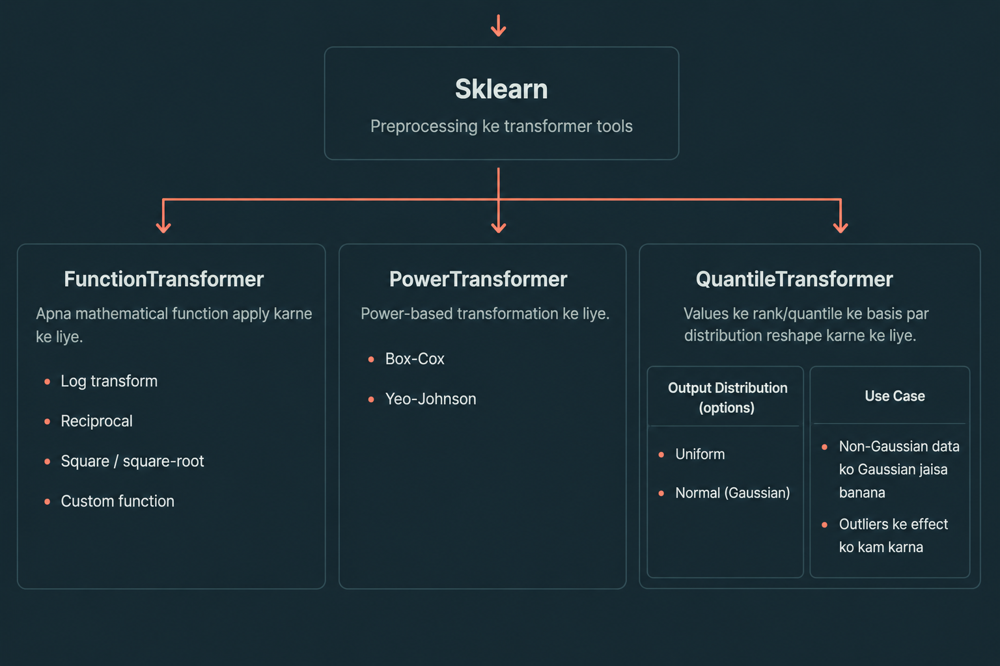
Normal distribution check karne ke methods
Transformation lagane se pehle aur baad me distribution ko check karo. Ek hi method par depend mat karo; plot aur numeric measure ko saath me dekho.
Method
Kya dekhna hai?
Code example
KDE / PDF plot
Curve bell-shaped aur roughly symmetric ho to normal ke closer lag sakti hai.
sns.kdeplot(df['salary'])
Skewness
df['salary'].skew() ka value 0 ke paas ho to distribution comparatively symmetric hoti hai.
df['salary'].skew()
QQ plot
Points diagonal line ke close hon to normality ka stronger visual indication milta hai.
import scipy.stats as stats stats.probplot(df['salary'], dist='norm', plot=plt)
Important: Normal distribution ka decision sirf skewness = 0 se nahi hota. KDE shape, skewness aur QQ plot ko milakar judgement lo.
Normality ko graph se samjho
Histogram aur QQ plot ko saath me dekho: normal data me histogram roughly bell-shaped hota hai aur QQ points diagonal line ke close rehte hain. Peaked ya skewed data me points line se noticeably deviate karte hain.
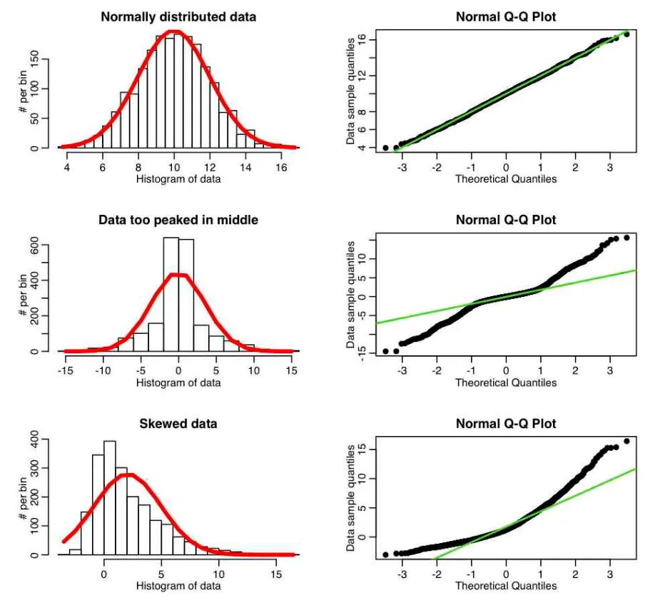
Common transformations
Transform
Formula
Use case
Code
Log
log(x) log1p(x) = log(1 + x)
Right-skewed positive data, jaise income/salary, ke bade values ko compress karke distribution ko less skewed banana. np.log(x) me x strictly positive hona chahiye. np.log1p(x) zero ke liye safely use hota hai aur chhoti values par zyada accurate hota hai; x <= -1 valid nahi.
Log transform ko generally positive values par apply karo. Negative values par direct log valid nahi hota; zero ke liye np.log1p useful hai.
Square root ke liye bhi negative values directly valid nahi hoti.
Reciprocal me zero division problem hoti hai.
Transformation ke baad distribution visualize karke verify karo.
FunctionTransformer ko ColumnTransformer/Pipeline ke andar combine kiya ja sakta hai.
Goal: Transformation data ko magically normal nahi banata; model ke liye relationship aur distribution ko manageable banane ki koshish karta hai.
32
Handling Missing Data: Complete Case Analysis
Missing values ko ignore karke model train karna risky ho sakta hai. Complete Case Analysis me missing wali rows remove ki jaati hain.
Missing value handling: lecture overview
Teacher ke overview ke according missing values ke liye pehle decide karo: row/column remove karna possible hai ya values ko impute karke fill karna hai.
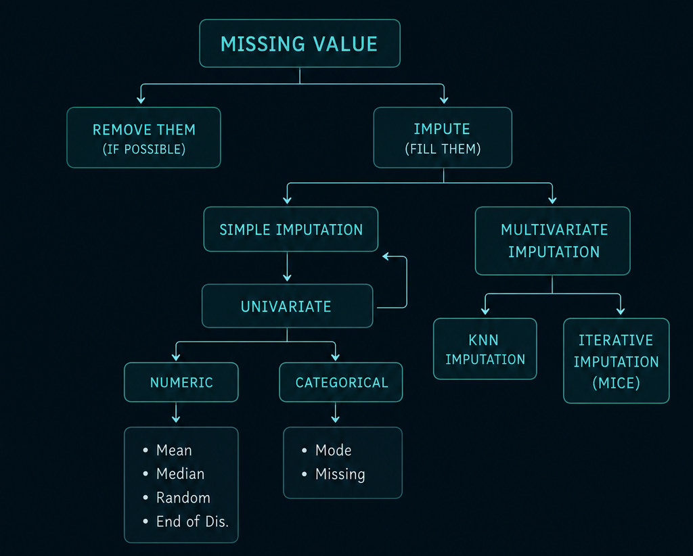
Complete Case Analysis (CCA) kya hai?
Jis row me kisi bhi selected column ki value missing ho, us poori row ko remove kar dete hain. Isse sirf complete observations bachti hain, isliye ise listwise deletion bhi kaha jata hai.
Original dataAge, income, education kuch values missing
->
Incomplete rows dropJis row me NaN ho poori row remove
->
Complete casesHar selected column me value available
complete_df = df.dropna()
# Sirf selected columns ke missing rows drop karna complete_df = df.dropna(subset=['age', 'salary'])
CCA kab apply karni chahiye?
1
MCAR check karo
Missing values completely at random honi chahiye; missingness kisi specific group, variable ya pattern se related nahi honi chahiye.
->
2
Missing data 5% se kam ho
Missing rows ka proportion chhota ho, taaki complete cases delete karne par dataset ka useful hissa bacha rahe.
->
3
Distribution compare karo
CCA se pehle aur baad numerical distribution aur categorical ratios almost same rehne chahiye.
Example: 1,000 rows me 50 se kam rows missing hon aur 950 complete cases bachti hon, to CCA consider ki ja sakti hai. Teeno checks pass? Tab CCA apply karo; warna blind deletion avoid karo.
Rule: CCA tabhi use karo jab missingness MCAR ho aur missing observations 5% se kam hon.
Advantages aur disadvantages
Advantages
Easy implementation: Koi data manipulation ya estimated value fill nahi karni padti; missing wali rows drop kar do.
Distribution preserve: Agar missingness MCAR ho, to reduced dataset ki variable distributions original dataset ke close rehni chahiye.
Disadvantages
Large data loss: Missing values abundant hon to original dataset ka bada fraction remove ho sakta hai.
Informative rows lose: Agar data random missing nahi hai, removed observations analysis ke liye important information carry kar sakti hain.
Production issue: New input me missing value aa sakti hai; CCA-trained model us missing data ko handle karna nahi jaanta.
One-line memory: CCA simple hai, lekin use karne se pehle MCAR, data loss aur production missing values check karo.
Complete Case Analysis
Sirf un rows ko retain karo jahan required columns me koi missing value nahi hai. Ye simple approach hai, lekin data loss ka risk hota hai.
Mixed variable ka matlab yahan poore dataset me numerical aur categorical columns ka hona nahi, balki ek hi column ke andar numerical aur categorical information ka mix hona hai. Model ko clean input dene ke liye in dono parts ko alag columns me split karo.
Mixed columnC-123, B-45, 731, ML
->
Split / extractNumeric part + category part
->
Clean featuresnumber column + category column
Case 1: Same cell me category + number
Cabin/ticket jaise values me prefix category hota hai aur baaki part numeric hota hai. Example: C-123 me C category aur 123 number hai.
Missing values: Numeric part ko context ke hisaab se 0 ya impute karo; category part ko 'Missing'/'Unknown' jaise label se fill kar sakte ho.
Case 2: Same column me mixed rows
Kabhi ek column ki kuch rows numeric hoti hain aur kuch categorical, jaise 731, ML, 42, Any. Numeric rows ko numeric column me aur text rows ko categorical column me bhejo.
Raw column ko direct model me dene ke bajay uska data type aur business meaning samjho. Mixed variables ke liye ColumnTransformer/Pipeline repeatable solution provide karte hain.
35
Binning, Binarization & Discretization
Continuous numerical values ko intervals ya binary values me convert karna binning/discretization hai.
Types of binning
Method
How it works
Use case
Example
Uniform / equal-width
Range ko equal-size intervals me divide.
Simple age bands.
0-20, 20-40, 40-60
Quantile binning
Har bin me roughly equal observations.
Uneven distribution me balanced groups.
Quartiles: Q1, Q2, Q3, Q4
KMeans binning
Similar values ko clusters me group.
Natural data groups discover karna.
Income-based segments
Binarization
Threshold ke basis par 0/1.
Binary indicator banana.
Age > 18 → 1, otherwise 0
from sklearn.preprocessing import KBinsDiscretizer
Discretization continuous values ko contiguous intervals, yaani bins, me convert karti hai. Isse raw values ko manageable groups me samjhana aur model ko dena easy ho sakta hai.
Raw Age23, 42, 57, 81, 110
->
Age bins0-10, 10-20, 20-30 ...
->
Grouped featureHar value apne interval me
Lecture ke main use-cases:
Outliers handle karna: Extreme values ko upper/lower bin me group karke unka direct effect kam kiya ja sakta hai.
Value spread compress karna: Bahut saari continuous values ko smaller, understandable ranges me convert karna.
Binning ka classification flow
BinningContinuous values ko groups me convert karna
Unsupervised
Target label use nahi hota.
Equal-width UniformEqual-frequency QuantileK-Means Natural groups
Supervised
Target/label ko dekhkar bins learn hote hain.
Decision Tree Binning
Custom
Domain knowledge se manually boundaries decide.
Custom Business rules
Har binning method ko samjho
Equal-width / Uniform
Kaise: Minimum aur maximum ke beech ka range equal-size intervals me divide hota hai.
Formula:(max - min) / number_of_bins
Example: Age 0-100 ko 5 bins me baantoge to 0-20, 20-40, 40-60, 60-80, 80-100 bands banenge.
Point: Har interval ki width same hoti hai, observations ki count zaroori nahi.
Equal-frequency / Quantile
Kaise: Percentile boundaries choose hoti hain; 10 bins me har bin me lagbhag 10% data aata hai.
Benefit 1: Outliers par accha kaam: Extreme values poore range ko stretch nahi karte; outlier apne percentile group me absorb ho jata hai.
Benefit 2: Value spread uniform: Har bin me roughly equal observations aati hain, isliye data ka spread zyada balanced dikhta hai.
Trade-off: Bin widths equal nahi hoti. Natural business boundaries important hon to equal-width ya custom bins better ho sakte hain.
K-Means / Natural groups
Kaise: Similar values ke around centroids bante hain aur values nearest centroid ke group me assign hoti hain.
Example: Google Play downloads me low-download, medium-download aur very-popular apps ke natural clusters.
Kab: Jab data clearly separate clusters me spread ho.
Ordered bin number chahiye to ordinal; separate binary features chahiye to one-hot.
Lecture ka practical rule: Pehle n_bins decide karo, phir strategy choose karo. Output ko model me dene ke liye encode='ordinal' ya onehot-dense select karo.
Binarization: numerical value ko 0/1 me convert karna
Binarization discretization ka special case hai jahan continuous/numerical value ko ek threshold ke basis par binary output me badalte hain.
Input valueAnnual income / pixel intensity
->
ThresholdCut-off decide karo
->
Binary output0 = below, 1 = above
Income example: Income 6 lakh se kam ho to 0 (non-taxable), aur 6 lakh ya zyada ho to 1 (taxable).
Image example: Pixel intensity 127.5 se neeche ho to 0 (black), aur usse upar ho to 1 (white).
Use: Jab exact numerical value se zyada yes/no indicator useful ho.
from sklearn.preprocessing import Binarizer
bin = Binarizer(threshold=6.0, copy=True) income_binary = bin.fit_transform(df[['income']])
Parameters:threshold cut-off value set karta hai; copy=True input column ko overwrite nahi karta, naya transformed output deta hai.
Trade-off: Binning complexity aur noise reduce kar sakta hai, lekin continuous information bhi lose ho sakti hai. Model validation se benefit check karo.
34
Handling Date & Time Variables
Date ko raw string ki tarah dene ke bajay useful time-based features extract kiye jaate hain.
Power transformations skewed numerical distributions ko more symmetric aur Gaussian (normal distribution) ke closer banane ki koshish karti hain.
Box-Cox vs Yeo-Johnson
Transformer
Input restriction
Idea
scikit-learn code
Box-Cox
Strictly positive values only: x > 0. Zero aur negative values allowed nahi hain.
Har possible lambda value ke saath transformation try hota hai. Usually lambda ke candidate values search karke woh value choose hoti hai jo output ko Gaussian (normal distribution) ke closest banaye.
PowerTransformer(method='box-cox')
Yeo-Johnson
Positive, zero aur negative values handle kar sakta hai.
Box-Cox ka adjustment samjho: positive aur negative values ke liye alag formula branches use karke transformation apply karta hai, isliye strict positivity restriction nahi hoti.
Lambda = 0 ko simple way me samjho: Pehle formula me lambda = 0 directly rakhoge to (x^0 - 1) / 0 = 0 / 0 aayega, isliye formula undefined ho jata hai. Is boundary case ke liye Box-Cox ka special rule log(x) use hota hai. Example: x = 4 aur lambda = 0 ho to output log(4) hoga. Matlab lambda 0 koi extra random transformation nahi, Box-Cox formula ka special log case hai. Lecture me lambda ke possible values ko roughly -5 se +5 tak try karne ka concept bataya gaya; sklearn ye search internally karta hai.
sklearn har column ka lambda automatically learn karta hai
fit_transform() ke time PowerTransformer har training column ke liye best lambda calculate karta hai. Ye learned values pt.lambdas_ me milti hain. Test data par wahi learned lambdas apply karne ke liye sirf transform() use karo.
Is column ke liye sklearn ne ye lambda choose kiya.
Blast Furnace Slag
0.025093
Is column ke data ko normal ke closer lane ke liye.
Fly Ash
-0.038970
Har column ka lambda alag ho sakta hai.
Water
0.772682
Lambda dataset ke distribution par depend karta hai.
Superplasticizer
0.098811
Value automatically training data se learn hui.
Coarse Aggregate
1.129813
Har feature ke liye best value different ho sakti hai.
Fine Aggregate
1.782019
Lambda manually guess nahi karni padti.
Age
0.066631
Final value is column ki distribution par depend karti hai.
Example calculation: Agar Cement ki ek raw value x = 541 aur learned lambda 0.177025 hai, to pehle Box-Cox value ((541 ^ 0.177025) - 1) / 0.177025 calculate hogi. Is code me standardize=True default hai, isliye uske baad transformed Cement values ko mean subtract karke standard deviation se divide bhi kiya jata hai. Final output sirf 541 ^ 0.177025 nahi hota.
Core idea: Transformer ek single lambda poore dataset ke liye nahi, balki har feature/column ke liye alag lambda learn karta hai.
Kab use karein?
Jab numerical feature strongly skewed ho aur simple log/square-root transformation sufficient na ho, PowerTransformer try kar sakte ho.
Reminder: Lecture me lambda ke possible values ko roughly -5 se +5 tak search karke best approximation choose karne ka idea bataya gaya. Transformation ke baad histogram/QQ plot aur model validation se check karo. “More normal” distribution automatically better model guarantee nahi karti.
36
Handling Missing Numerical Data
Univariate imputation me missing numerical column ko fill karne ke liye primarily usi column ki available values use hoti hain.
Univariate vs multivariate imputation
Univariate
Jis column me value missing hai, fill value usi column se nikali jaati hai.
Mean / median
Arbitrary value
End of distribution
Random sample
Multivariate
Missing value predict karne ke liye doosre columns ki information aur relationships bhi use hoti hain.
KNN Imputer
MICE / Iterative Imputer
Mean ya median: distribution dekhkar choose karo
22Observed age
30Observed age
NaNMissing age
Median = 30Imputed value
Technique
Kab use karein?
Kya hota hai?
Main risk
Mean imputation
Column roughly normal/symmetric ho aur outliers significant na hon.
Available values ka average har missing cell me fill hota hai.
Outliers mean ko pull kar dete hain; imputed value biased ho sakti hai. Skewed data me mean avoid karo.
Median imputation
Column skewed ho ya outliers present hon.
Middle value fill hoti hai; outliers ka effect comparatively kam hota hai.
Outliers se robust hai, lekin bahut missing values hon to ek hi median repeatedly fill hokar variance/spread reduce kar sakta hai.
Train-test rule: Median/mean sirf X_train se learn karo. X_test par wahi learned statistic apply karo.
Mean vs median imputation: graph se samjho
Blue original Age distribution hai. Red median-imputed aur green mean-imputed versions hain. Filled values ek central point par repeat hone ki wajah se peak ban sakti hai; outliers ki wajah se mean aur median ka effect alag dikhta hai.
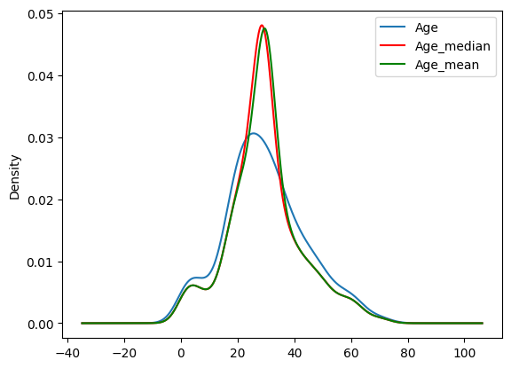
Distribution comparison: mean/median fill ke baad artificial peak.
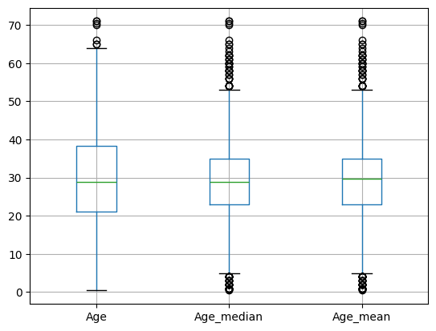
Box plot comparison: outliers aur spread ko observe karo.
Graph ka takeaway: Mean/median imputation missing cells ko fill kar deti hai, lekin original distribution, variance aur outlier pattern exactly preserve nahi hota.
Arbitrary value aur end-of-distribution imputation
Arbitrary value
Missing value ko deliberately unusual constant, jaise -1 ya 99, se replace karte hain. Model missing rows ko alag signal ki tarah identify kar sakta hai.
SimpleImputer(strategy='constant', fill_value=-1)
End of distribution
Missing value ko distribution ke far end par place karte hain. Normal data me mean + 3 x std ya mean - 3 x std use ho sakta hai. Skewed data me IQR boundary, jaise Q3 + 1.5 x IQR, use kar sakte hain. Isse missingness ek visible extreme group ban jaati hai.
Kab use karein? Jab missingness MCAR na ho aur missing hona khud model ke liye signal ho. Missing values ko normal centre par hide karne ke bajay distribution ke end par rakhte hain.
Dhyan: Dono techniques distribution distort aur artificial outliers create kar sakti hain. Tree models missingness ka separate pattern pick kar sakte hain, lekin result model validation se compare karo.
Mean/median imputation: kab use karein aur trade-offs
Kab use karein? Jab missingness MCAR ho, missing values randomly distributed hon, aur missing observations roughly 5% se kam hon. Is condition me simple mean/median baseline practical ho sakta hai.
Advantages
Simple: Samajhna aur production me implement karna easy.
Fast: Sirf ek statistic learn hota hai.
Outlier-aware choice: Skewed/outlier-heavy data me median, mean se safer hota hai.
Small missingness: MCAR aur roughly 5% se kam missing data me practical baseline.
Disadvantages
Outlier problem: Mean imputation me extreme outliers mean ko shift karke har filled value ko misleading bana sakte hain.
Distribution change: Mean/median par artificial peak ban sakti hai.
More missing values: Missing data zyada ho to wahi mean/median baar-baar repeat hota hai; artificial peak aur distribution distortion aur badh sakta hai.
Variance shrink: Repeated central value spread ko kam karti hai.
Relationships change: Doosre columns ke saath covariance/correlation distort ho sakta hai.
37
Handling Missing Categorical Data
Categorical columns ko usually most-frequent category ya ek explicit Missing category se impute kiya jata hai.
Important: 50-60% values missing hon to most-frequent category se sab fill karna original category ratio ko badly distort kar sakta hai. Aise case me explicit Missing label zyada honest signal hai.
38
Random Sample Imputation & Missing Indicator
Random sample imputation observed distribution se values borrow karti hai; Missing Indicator model ko batata hai ki original value missing thi.
Random sample imputation ka flow
Observed values22, 30, 41, 55 Sirf in available values me se pick hoga; NaN khud value nahi hai.
Missing rows countJitne NaN hain utne samples observed values se pick karo.
Random sampleExample pick: 41. Ye available sample values me se pick hota hai; koi arbitrary random number nahi.
Fill NaNMissing cell ko sampled observed value milti hai.
DistributionOriginal values repeat hone se variance/distribution mostly preserve rehti hai.
Numerical + categorical: Dono types par apply ho sakti hai.
Distribution preserve: Observed values hi reuse hoti hain.
Variance preserve: Mean/median ki tarah central spike nahi banta.
Disadvantages
Randomness: Different seed par different imputed value mil sakti hai.
Relationships disturb: Doosre features ke saath covariance change ho sakta hai.
Deployment memory: Incoming data me missing value fill karne ke liye original training ki observed values store karni padti hain. Dataset bada ho to memory usage aur deployment complexity dono badh sakte hain.
Missing Indicator: missingness ko feature banao
Age = 22Original value present
Age_NA = FalseNot missing
Age = NaNOriginal value absent
Age_NA = TrueMissing signal
Imputed value ke saath binary indicator rakhne se model distinguish kar sakta hai ki value originally observed thi ya baad me fill ki gayi.
Alternative: Separate MissingIndicator() use kar sakte ho, lekin SimpleImputer(add_indicator=True) value fill aur indicator creation ko ek step me combine karta hai.
Best strategy ko GridSearch se compare karna
Lecture me numerical strategy mean/median aur categorical strategy most_frequent/constant ko Pipeline ke andar compare karne ka pattern dikhaya gaya.
Target row 2 ka Feature 1 missing hai, isliye distance nikalte waqt Feature 1 ko side me rakh do. Baaki relevant features 2, 3 aur 4 hain, so total_features = 3. Kisi comparison me agar in 3 me se ek feature missing ho, to us feature ka square term aayega hi nahi. Sirf dono rows me available common features use honge.
Row
Feature 1
Feature 2
Feature 3
Feature 4
1
33
NaN
67
21
2 target
NaN
45
68
12
3
23
51
71
18
4
40
NaN
81
NaN
5
35
60
79
NaN
Formula: distance = sqrt((total_features / common_features) x sum of squared differences)
Row 2 vs Row 1: Feature 2 ignore; common = 2; sqrt((3 / 2) x ((68 - 67)^2 + (12 - 21)^2)) = sqrt(123) = 11.09
Row 2 vs Row 3: All 3 common; sqrt((3 / 3) x ((51 - 45)^2 + (71 - 68)^2 + (18 - 12)^2)) = sqrt(81) = 9.00
Row 2 vs Row 4: Sirf Feature 3 common; sqrt((3 / 1) x (81 - 68)^2) = sqrt(507) = 22.52
Row 2 vs Row 5: Feature 4 ignore; common = 2; sqrt((3 / 2) x ((60 - 45)^2 + (79 - 68)^2)) = sqrt(519) = 22.78
Core idea: NaN ko zero mat samjho aur uska square mat nikalo. Pair missing ho to term skip karo; phir available dimensions kam hone ki wajah se total/common factor se distance rescale karo.
Missing value estimate me kitni nearest rows involve hongi. Different k values validate karo.
weights
'uniform' / 'distance'
Uniform sab neighbors ko equal weight deta hai. Distance me closer neighbor ko zyada importance milti hai.
metric
'nan_euclidean'
Missing coordinates handle karne wali distance calculation.
add_indicator
True / False
Original missingness ka extra binary indicator append karna hai ya nahi.
Performance vs cost
Why useful?
Multivariate: Doosre columns ke relationships use karta hai.
Often better: Small/medium datasets me mean/median se better estimates mil sakte hain.
Flexible:k aur weights validate kar sakte ho.
Main costs
Slow: Har missing row ki many training rows se distance calculate hoti hai.
Memory: Production server par training set retain karna padta hai.
Scale sensitive: Different feature ranges distance dominate kar sakti hain; preprocessing carefully design karo.
40
MICE: Iterative Imputer
MICE (Multivariate Imputation by Chained Equations) har incomplete feature ko baaki features se predict karta hai aur estimates ko multiple iterations me refine karta hai.
Missingness patterns: MCAR, MAR aur MNAR
Lecture ke overview me missing data ke teen patterns bataye gaye. MICE har case me run ho sakta hai, lekin uska strongest use-case MAR hai kyunki woh baaki observed columns se missing value predict karta hai.
1
MCAR
Missing Completely At Random: Data collection/system issue ki wajah se value random missing hai; missingness kisi column ya person-group se related nahi.
MICE: Use ho sakta hai, lekin simple imputation bhi baseline ho sakti hai because predictable pattern zaroori nahi milta.
2
MAR: MICE ke liye best
Missing At Random: Missingness ko doosre observed columns explain kar sakte hain. Example: income missing hai, par age, education aur job se estimate possible hai.
Why MICE? Ye remaining columns ki relationship use karke missing column predict/refine karta hai.
3
MNAR
Missing Not At Random: Value khud missing hone ka reason hai, jaise koi apni income disclose nahi karna chahta. Observed columns se reason fully explain nahi hota.
Risk: MICE result biased ho sakta hai; blindly impute karna safe nahi.
Memory rule: MCAR = random loss; MAR = baaki columns se explainable, isliye MICE ka best case; MNAR = missing value khud reason se linked, isliye hardest case.
Lecture dataset: MICE start hone se pehle
Teacher ne ek chhota regression dataset liya. Profit target hai, isliye imputation ke demonstration me usko hata kar sirf input features X rakhe. Phir teen fake missing values introduce ki gayin, taaki MICE ko step by step samjha sakein.
1. Actual dataset
Row
R&D
Admin
Marketing
Profit
21
8
15
30
11
37
4
5
20
9
2
15
10
41
19
14
12
16
26
13
44
2
15
3
7
2. Target remove karo
Profit yahan prediction target hai, feature nahi. MICE ko input columns ke missing values fill karne hain.
X = df[['R&D', 'Administration', 'Marketing']]
3. Demo NaNs
Row
R&D
Admin
Marketing
21
8
15
30
37
NaN
5
20
2
15
10
41
14
12
NaN
26
44
2
15
NaN
Iteration 0: mean se temporary fill
Ye final answer nahi hai. MICE ko pehla complete dataset chahiye, isliye har column ke NaN ko usi column ke available values ke mean se temporarily fill karta hai.
Important: Original NaN locations yaad rehti hain. Agle step me MICE ek-ek column ki original missing cell ko wapas NaN karke uski better prediction banata hai.
Iteration 1: table har step par kaise transform hoti hai?
Har turn me ek incomplete column y banta hai aur baaki columns X. Teal outline wali complete rows temporary regression model ko train karti hain. Coral outline wali original-missing row prediction/test row hai. Ye labels MICE ke internal step ke hain—actual project ke X_train/X_test split se confuse mat karo.
Chain ka meaning: Step 1 ka 23.14 Step 2 ke inputs me gaya; Step 2 ka 11.06 Step 3 ke inputs me gaya. Har new prediction next model ko improve karne ka chance deti hai—isi liye Chained Equations.
Iteration repeat kyu hota hai?
Iteration 1 ki predictions initial mean-filled table se start hui thi. Next cycle isi updated table par R&D → Admin → Marketing sequence repeat karta hai. Neeche sirf originally missing cells ki value track ki gayi hai.
Originally missing cell
Iteration 0 mean fill
Iteration 1
Iteration 2
Iteration 3
Change per cycle
Row 37 · R&D
9.25
23.14
23.78
24.57
+13.89 → +0.64 → +0.79
Row 14 · Admin
11.25
11.06
11.22
11.37
-0.19 → +0.16 → +0.15
Row 44 · Marketing
29.25
31.56
31.56
45.53
+2.31 → 0.00 → +13.97
Stopping idea: Iterations tab tak chalao jab updated missing values me change tolerance se chhota ho jaye, ya max_iter reach ho. Har value ka change monotonically decrease karna zaroori nahi.
scikit-learn IterativeImputer
from sklearn.experimental import enable_iterative_imputer from sklearn.impute import IterativeImputer
Ek feature ko baaki features se predict karne wala regression model.
max_iter
10
Maximum complete left-to-right refinement cycles.
initial_strategy
'mean', 'median'
First temporary fill kis statistic se hoga.
imputation_order
'ascending', 'roman', 'random'
Incomplete features kis order me update hongi.
tol
Default stopping tolerance
Estimates me change sufficiently small ho to iterations early stop ho sakti hain.
Train-test rule: Chained models X_train par fit hote hain. X_test ke liye dobara fit nahi, sirf transform().
Hands-on notebook: Lecture ke saare step-by-step code examples official repository me available hain. Open step-by-step.ipynb ↗
Accuracy ka trade-off
Advantage
Natural estimates: Multiple features ke relationships use karta hai.
Iterative refinement: Initial mean fill final answer nahi hota.
Flexible estimator: Regression model customize kiya ja sakta hai.
Disadvantage
Computationally slow: Har feature ke liye model, phir multiple cycles.
Complex: Result estimator/order/iterations par depend karta hai.
Production cost: Learned multivariate process simple imputation se heavier hota hai.
41
What are Outliers?
Outlier sirf ek extreme number nahi; woh error, rare valid case, important anomaly, ya missing context ka signal ho sakta hai.
Definition aur intuition
Outlier woh observation hai jo majority data points se unusually door behave kare. Salary data me ek billionaire mean ko distort kar sakta hai; study-hours vs marks data me do unusual students fitted regression line ko apni taraf kheench sakte hain.
Normal patternMost observations ek common trend follow karti hain.
->
Extreme pointValue ya relationship pattern se bahut door.
->
Model impactMean, spread, weights aur decision boundary shift ho sakte hain.
Golden rule: Statistically unusual milte hi row delete mat karo. Pehle samjho value aayi kahan se aur problem statement me uska kya meaning hai.
How to detect outliers?
Detection ka method feature ke distribution par depend karta hai. Pehle histogram/box plot dekho, phir suitable rule choose karo. Screenshot wala normal curve rule teen standard deviations ke bahar ke observations ko flag karta hai.
1. Normal distributionBell-shaped feature me mean μ aur standard deviation σ calculate karo. μ + 3σ se bada ya μ - 3σ se chhota value potential outlier hai.
2. Skewed distributionBox plot/IQR use karo: Q1 - 1.5×IQR se neeche ya Q3 + 1.5×IQR se upar value flag hoti hai.
3. Tail/business rulePercentile cut-offs choose karo, jaise 1st–99th percentile, jab distribution kisi shape ko follow na kare ya business-defined extreme important ho.
Important: “Detected” ka matlab automatically “delete” nahi. Flagged point ko validate karo—error hai, valid rare case hai, ya fraud/anomaly ka signal?
Outlier ke saath kya karna hai?
Observation
Likely meaning
Action
Age = 830
Impossible entry / measurement error
Source se correct karo; correction impossible ho to remove ya missing treat karo.
Rare high-value customer
Possible and valid
Keep; robust treatment/model compare karo.
Unusual card transaction
Fraud signal ho sakta hai
Remove nahi—yehi anomaly-detection target hai.
Low study hours, high marks
Missing explanatory context
Aptitude jaise relevant feature se behavior explain ho sakta hai.
Models par effect
Usually more sensitive
Linear Regression
Logistic Regression
AdaBoost
Neural networks / weight-based learners
Usually less sensitive
Decision Tree
Random Forest
Gradient-boosted trees
Rule/split-based learners
Tree models feature space ko thresholds par split karte hain, isliye extremes ka pull linear models jaisa nahi hota. “Less sensitive” ka matlab “ignore forever” nahi—model comparison se pehle data quality investigate karo.
Treatment toolbox
Method
Kya karta hai?
Main trade-off
Trimming
Outlier rows delete.
Fast, par sample size aur rare information lose ho sakti hai.
Capping
Extreme value ko lower/upper limit par clip.
Rows preserve, boundary par values pile up hoti hain.
Missing + impute
Invalid extreme ko NaN maan kar impute.
Missing-value assumptions apply hongi.
Transform/bin
Scale compress ya intervals me group.
Detail lose ho sakti hai.
Detection map: Approximately normal → Z-score; skewed → IQR; business-defined tails → percentiles. Ye starting rules hain, universal truth nahi.
Graphs discussed in this lecture
In graphs ko distribution ke hisaab se read karo: normal curve me ±3σ tails, box plot me IQR fences, aur percentile graph me chosen tail cut-offs.
Reading rule: Graph sirf candidate points flag karta hai. Final decision domain validation, data quality aur model performance compare karke lo.
42
Z-score: Detection & Removal
Approximately normal feature me har value mean se kitni standard deviations door hai, Z-score us distance ko standard units me batata hai.
Empirical rule aur boundary
z = (x - mean) / standard_deviation
Lower limit = mean - 3 × standard deviation Upper limit = mean + 3 × standard deviation Potential outlier if |z| > 3
Mean se range
Normal distribution ka approx data
± 1σ
68%
± 2σ
95%
± 3σ
99.7%
Precondition: Feature normal ya almost normal honi chahiye. Strongly skewed column par mean aur standard deviation khud extremes se pull ho jaate hain.
Complete pandas pattern
column = 'cgpa' mean = X_train[column].mean() std = X_train[column].std() lower = mean - 3 * std upper = mean + 3 * std
Outlier detect hone ke baad do common treatment options hain. Decision is baat par depend karta hai ki extreme rows invalid hain ya valid information carry karti hain.
TrimmingOutlier row ko dataset se remove karo. Dataset size reduce hota hai.
/
CappingValue ko boundary par replace karo: 100 → 80. Row preserve hoti hai.
Method
What happens?
Kab useful?
Main risk
Trimming
Lower/upper limit ke bahar wali complete rows remove.
Value clearly impossible/error ho aur affected rows bahut kam hon.
Valid rare information aur sample size lose ho sakta hai.
Capping / Winsorization
Lower outliers ko lower limit, upper outliers ko upper limit se replace.
Rows preserve karni hon ya outliers ka count zyada ho.
Boundary par artificial pile-up create hota hai.
upper_limit = μ + 3σ lower_limit = μ - 3σ
Trimming: keep only lower_limit ≤ x ≤ upper_limit Capping: x > upper_limit → upper_limit; x < lower_limit → lower_limit
Important: Outlier ko automatically delete mat karo. Pehle domain check, affected-row percentage aur model validation compare karo. Training limits learn karke same limits validation/test data par apply karo.
Workflow aur mistakes
1
Distribution inspect
Histogram/KDE aur Q-Q plot se normality assess karo.
2
Train limits learn
Mean/std sirf training split se calculate karo.
3
Trim ya cap
Affected rows ka count/percentage log karo; domain meaning verify karo.
4
Validate
Before/after distribution aur cross-validation performance compare karo.
Test data se boundary calculate karna leakage hai. Production aur test rows par training ke fixed limits hi apply hone chahiye.
43
IQR Method for Skewed Data
IQR middle 50% data ke spread par based robust rule hai aur conventional box-plot whiskers isi se bante hain.
Fences ke bahar observations potential outliers hain. Negative lower fence agar exam marks ke liye aaye, to iska matlab low-side outlier hona zaroori nahi; observed minimum zero se start ho sakta hai.
Definition: Percentile-based capping ko winsorization kehte hain. Har upper-tail value upper limit ban jaati hai aur har lower-tail value lower limit.
Cut-off selection practical rakho
Start with conservative tails such as 1%/99%, then sensitivity test karo.
Higher upper percentile aur lower lower-percentile ka matlab less data affected.
Original vs treated describe(), distribution aur box plot compare karo.
Model metric ke saath business cost bhi dekho; rare premium customer ya fraud remove karna expensive mistake ho sakta hai.
Limits training data se learn karke validation/test/future data par freeze karo.
45
Feature Construction & Feature Splitting
Existing columns ko domain knowledge se combine karo, ya ek compound cell me chhupi multiple information ko separate useful columns me nikalo.
Construction vs splitting
Technique
Input
Output
Example
Feature construction
Two or more existing features
New meaningful feature
SibSp + Parch + 1 → family_size
Feature splitting
One compound/non-atomic feature
Separate information columns
Name → title + name parts
Construction totals, ratios, differences, counts, interactions aur domain-specific rates bana sakti hai. Splitting tab useful hai jab ek cell me multiple facts packed hon aur raw string ko directly analyze/encode karna difficult ho.
Titanic: family feature construct karo
df['family_size'] = df['SibSp'] + df['Parch'] + 1
def family_type(size): if size == 1: return 0 # alone if size <= 4: return 1 # small family return 2 # large family
Why +1?SibSp aur Parch relatives count karte hain; travelling passenger ko family size me include karne ke liye one add hota hai.
Titanic: Name se title split karo
Braund, Mr. Owen Harris me surname, salutation/title aur name ek hi cell me packed hain. Title survival pattern, age band ya marital status ka useful proxy ban sakta hai.
Rare titles ko one-hot encoding se pehle meaningful group me combine karo. Inconsistent strings ke liye validated regex/parser use karna simple chained split se safer hai.
Domain knowledge is the real engine
Useful examples
Batting strike rate
Bowling economy
BMI
Price per unit
Account age
Total transaction value
Guardrails
Target leakage mat create karo.
Prediction time par unavailable data use mat karo.
Rare-category mappings train set par fit karo.
Baseline vs engineered features cross-validation se compare karo.
Transformation pipeline me reproducible rakho.
Practice rule: Har dataset par poochho—kya existing columns se aisa domain-valid signal ban sakta hai jo raw columns se model ko clearly nahi mil raha?
46
Curse of Dimensionality
Features bahut zyada badhne par data sparse, distance less meaningful aur model complex ho sakta hai.
Problem kya hoti hai?
Har extra feature se feature-space ka volume grow hota hai, lekin observations utni speed se nahi badhte. Isliye points spread out ho jaate hain aur nearest-neighbour jaise distance-based algorithms ko meaningful neighbours milna mushkil hota hai.
Effect
Practical meaning
Sparsity
Data space ka large portion empty rehta hai.
Distance problem
Nearest aur farthest points ke distances comparatively similar lag sakte hain.
Overfitting
Irrelevant features noise add karke generalization hurt kar sakte hain.
Cost
Storage, training time aur model complexity badhti hai.
Reduce kaise karein?
Feature selectionUseful original columns rakho
->
Feature extractionPCA jaise new compact features
->
RegularizationComplexity ko penalize karo
Key idea: Optimal number of features choose karo—extra columns automatically useful nahi hote.
47
PCA: Geometric Intuition
PCA ek unsupervised feature-extraction technique hai: high-dimensional data ko lower dimension me laate hue uska important behaviour preserve karna.
Football photographer analogy
Match stadium me 3D ho raha hai, lekin newspaper me 2D photo chahiye. Har angle equally useful nahi hota: best angle par players alag-alag clearly dikhte hain; wrong angle par players overlap ho jaate hain aur information lost lagti hai. PCA ka aim bhi high-dimensional data ka best possible lower-dimensional view nikalna hai.
Why use PCA? Features kam hon to algorithms faster train ho sakte hain, aur 3D/2D me reduce karke data visualize kar sakte hain—jaise 784-pixel digit data ko low dimension me plot karna.
Feature selection vs feature extraction — flat example
Case
What happens?
Method
Rooms + nearby grocery shops
Rooms axis par data ka spread/variance zyada hai; grocery shops weak feature lagti hai. Rooms ko keep, grocery shops ko drop.
Feature selection
Rooms + bathrooms
Dono price ke liye useful aur strongly related hain; dono axes par spread similar hai, isliye ek original column drop karna sensible nahi.
Feature extraction
Second case me real-estate broker ka intuition: rooms aur bathrooms ko separately choose karne ke bajay ek naya feature flat size socho. PCA domain knowledge ke bina mathematically aisa new feature-space banata hai.
Graphs: lecturer wala d vs d′ intuition
Dashed box ka horizontal size d aur vertical size d′ hai. Ye dono dimensions respective axis par data ke spread/variance ko represent karte hain.
Case 1 — Feature Selection:d > d′. Rooms axis par spread zyada hai, isliye original Rooms feature select karte hain.Case 2 — Feature Extraction:d ≈ d′. Rooms aur Bathrooms dono me comparable variance hai; ek original feature drop nahi karte. Next step me PCA new feature/axis banata hai.
Lecture ka decision:d > d′ ho to high-variance original feature choose kar sakte ho. d ≈ d′ ho to feature selection stuck ho jata hai; feature extraction/PCA help karta hai.
Axes rotate karo → principal components milte hain
Rooms–bathrooms scatter plot me PCA existing axes ko rotate karta hai. Naye rotated axes ko PC1 aur PC2 kehte hain.
Same reading style as above: white × marks data points hain; teal PC1 long direction hai (`d` large), blue PC2 short perpendicular direction hai (`d′` small).
Original axesRooms, Bathrooms
->
Rotate axesPC1, PC2
->
Keep PC1Higher variance / spread
Original 2 features ke liye 2 PCs bante hain. PC1 par projection ka spread PC2 se zyada hota hai, isliye 2D data ko 1D me reduce karte waqt PCA PC1 retain aur PC2 drop karta hai.
Variance ko maximize kyu karte hain?
Variance data ke spread ka measure hai. Do datasets ka mean same ho sakta hai, par unka spread alag—variance unme difference batata hai.
variance = Σ(xᵢ − mean)² / n
Large variance → points zyada spread out Small variance → points ek dusre ke closer
Data ko 2D se 1D project karte waqt low-variance direction choose karoge to red aur green points ke beech ka distance bahut shrink ho sakta hai. High-variance direction choose karne par important relative distances aur separation better preserve hoti hai. Isi liye PCA ka end goal: maximum variance wali projection find karo.
Why squared deviations? Mean absolute deviation bhi spread batata hai, but absolute-value function zero par differentiable nahi hota. PCA ke optimization me squared deviations (variance) mathematically convenient hote hain.
48
PCA: Problem Formulation & Step-by-Step Solution
PCA ka mathematical objective: aisa unit direction find karo jiske upar projected data ka variance maximum ho, phir top directions par data project karke dimensions reduce karo.
Problem formulation: 2D data ko 1D me lana
Maan lo dataset me n observations aur p numerical features hain. Har observation xᵢ ∈ ℝᵖ ek vector hai. Hume ek direction u find karni hai aur saare points ko us direction par project karna hai.
Symbol
Meaning
Shape
X
Input-feature matrix
n × p
xᵢ
Ek observation/row vector
p × 1
u
Candidate projection direction; unit vector
p × 1
zᵢ
xᵢ ka new 1D coordinate
scalar
Constraint kyu?uᵀu = 1 rakhna zaroori hai. Agar direction ki length unrestricted ho, to u ko arbitrarily bada karke projected variance fake tareeke se infinite ki ja sakti hai.
Step 1 — ek point ko direction u par project karo
General vector projection me denominator uᵀu hota hai. PCA me u unit vector hai, isliye denominator 1 ho jata hai.
Scalar projection / new coordinate: zᵢ = uᵀxᵢ
Projected vector on the line: x̂ᵢ = (uᵀxᵢ)u
If u = [u₁, u₂]ᵀ and xᵢ = [xᵢ₁, xᵢ₂]ᵀ: zᵢ = u₁xᵢ₁ + u₂xᵢ₂
PCA output me usually scalar coordinate zᵢ store hota hai. Har original point ko project karoge to z₁, z₂, …, zₙ ki one-dimensional list milti hai.
Step 2 — projected values ka variance maximize karo
Projected mean z̄ = uᵀx̄ hota hai. Isliye projection variance ko matrix form me simplify kar sakte hain:
Bracket ke andar wali matrix S covariance matrix hai. PCA ka formal optimization problem:
maximize uᵀSu subject to uᵀu = 1
Lecture ki most important line: Hume woh unit vector u chahiye jiske upar saare points project karne ke baad variance maximum aaye.
Variance se covariance tak
Variance ek feature ka spread batata hai, lekin multiple features ki orientation/relationship nahi. Covariance batata hai ki do features saath me kaise change karte hain.
Var(X₁) = (1/n) Σᵢ (xᵢ₁ − x̄₁)²
Cov(X₁, X₂) = (1/n) Σᵢ (xᵢ₁ − x̄₁)(xᵢ₂ − x̄₂)
Covariance
Interpretation
Positive
X₁ badhta hai to X₂ bhi generally badhta hai.
Negative
X₁ badhta hai to X₂ generally ghatta hai.
Near zero
Strong linear co-movement nahi dikh raha.
Covariance vs correlation: Sign ka intuition similar hai, lekin correlation standardized hokar −1 se +1 ke beech hota hai; covariance ki fixed range nahi hoti.
Covariance matrix ka structure
p features ke liye covariance matrix ka shape p × p hota hai. Diagonal par individual variances aur off-diagonal par pairwise covariances aati hain.
For two features:
S = [ Var(X₁) Cov(X₁,X₂) ] [ Cov(X₂,X₁) Var(X₂) ]
Matrix form for centered X: S = (1/n)XᵀX or sample convention S = (1/(n−1))XᵀX
Cov(X₁,X₂) = Cov(X₂,X₁), so covariance matrix symmetric hoti hai.
Diagonal values data ka axis-wise spread batati hain.
Off-diagonal values data ki orientation/tilt batati hain.
Isi matrix me dataset ke spread aur linear orientation ki combined information hoti hai.
Matrix ko ek linear transformation ki tarah samjho: woh coordinate space ko rotate, stretch, shrink, reflect ya squash kar sakti hai. Most vectors ka direction transformation ke baad change hota hai, lekin kuch special vectors apni line/direction preserve karte hain.
Av = λv
Term
Meaning
A
Transformation matrix
v
Eigenvector: transformation ke baad same line/direction me rehta hai
λ > 1 stretch, 0 < λ < 1 shrink aur negative λ direction flip ke saath scaling represent kar sakta hai.
Optimization ka solution eigenvector kyu hai?
Lecture me optimization ka direct result use hua: covariance matrix ke eigenvectors hi candidate principal directions hain. Lagrange-multiplier bridge se result:
L(u, λ) = uᵀSu − λ(uᵀu − 1)
∂L/∂u = 0 2Su − 2λu = 0 Su = λu
Ye exactly eigenvector equation hai. Aur agar u unit eigenvector hai:
Variance along u = uᵀSu = uᵀ(λu) = λ(uᵀu) = λ
Core result: Covariance matrix ka eigenvector direction batata hai; corresponding eigenvalue us direction ka variance batata hai. Sabse badi eigenvalue ka eigenvector = PC1, second largest = PC2, and so on.
Complete PCA algorithm — lecture order
1. Center / scaleOrigin par lao
->
2. CovarianceSpread + orientation
->
3. Eigen decompositionDirections + variance
->
4. Sort & selectTop k PCs
->
5. ProjectNew coordinates
Mean-center:Xc = X − μ. Lecture code me StandardScaler use hua, so centering ke saath scaling bhi hui: Xs = (X−μ)/σ.
Covariance matrix:S = np.cov(Xs, rowvar=False).
Eigen pairs:Svⱼ = λⱼvⱼ.
Descending sort:λ₁ ≥ λ₂ ≥ … ≥ λₚ.
Top k eigenvectors: columns me combine karke projection matrix Wₖ banao.
Transform: centered/scaled data ko Wₖ se multiply karo.
Center vs scale: PCA ko mean-centered data chahiye. Scaling especially tab important hai jab features ki units/ranges different hon; warna large-scale feature variance dominate kar sakta hai.
Projection matrix aur shapes: 3D → 2D / 1D
Maan lo X me 1000 rows aur 3 features hain.
Object
Shape
Meaning
Xs
1000 × 3
Centered/scaled 3D data
W₂
3 × 2
PC1 aur PC2 as columns
Z = XsW₂
1000 × 2
New 2D dataset
W₁
3 × 1
Only PC1
Z = XsW₁
1000 × 1
New 1D dataset
Column-vector convention: Z = Xs · Wₖ
If PCs are stored as rows (k × p), as in the lecture notation: Z = Xs · PCsᵀ
Target column y projection calculate karne me use nahi hota; transform ke baad same target values new PC1, PC2, … features ke saath copy hoti hain.
Small mathematical example
Suppose centered/scaled two-feature data ki covariance matrix:
S = [ 1.0 0.8 ] [ 0.8 1.0 ]
Eigen pair 1: λ₁ = 1.8, v₁ = (1/√2)[1, 1]ᵀ → PC1
Eigen pair 2: λ₂ = 0.2, v₂ = (1/√2)[1, −1]ᵀ → PC2
Total variance λ₁ + λ₂ = 2.0. PC1 alone 1.8 / 2.0 = 90% variance capture karta hai. Isliye 2D → 1D reduction me PC1 retain karna sensible ho sakta hai.
From-scratch NumPy implementation
import numpy as np from sklearn.preprocessing import StandardScaler
# X shape: (n_samples, n_features) Xs = StandardScaler().fit_transform(X)
# p × p covariance matrix S = np.cov(Xs, rowvar=False)
# S symmetric hai, so eigh is suitable eigenvalues, eigenvectors = np.linalg.eigh(S)
# largest eigenvalue first order = np.argsort(eigenvalues)[::-1] eigenvalues = eigenvalues[order] eigenvectors = eigenvectors[:, order]
# top k principal directions k = 2 W = eigenvectors[:, :k] # shape: p × k
# transformed coordinates X_pca = Xs @ W # shape: n × k
Lecture summary in one equation:covariance → eigenvectors/eigenvalues → top directions → dot product projection.
49
PCA: Code Example & Visualization
Scikit-learn me PCA fit karo, components choose karo aur transformed data ko visualize karo.
Typical sklearn workflow
from sklearn.preprocessing import StandardScaler from sklearn.decomposition import PCA
Training data par fit karo; validation/test par sirf transform use karo. Scatter plot me X_pca[:, 0] aur X_pca[:, 1] se 2D representation dikha sakte ho.
Components kitne rakhein?
explained_variance_ratio_ har PC ka variance share deta hai.
Cumulative explained variance plot se 90–95% information retain karne wala k choose karo.
2 components visualization ke liye useful hain; production model me k zyada bhi ho sakta hai.
PCA ke baad transformed columns original feature names nahi, balki PC1, PC2... hote hain.
Visualization takeaway: 3D points ko 2D plane par project karke class/group separation visually inspect kar sakte ho.
50
Simple Linear Regression: Code & Intuition
Ek input feature X se continuous target y predict karne ke liye best-fit straight line learn karo.
Pehle instructor wala placement example samjho
Socho ek college ke final-year students ka placement data hai. Har row ek student hai, aur target hai uska package (LPA). Hume new student ki details dekar estimated package predict karna hai.
Student
CGPA
Gender
12th marks
State
Package (LPA)
A
6.6
Female
78
Delhi
3.0
B
8.1
Male
89
Rajasthan
5.2
C
7.4
Female
82
UP
4.1
Actual ML question: Agar ek new student ka CGPA ya uski baaki details di jaayein, to uska expected placement package kitna ho sakta hai?
Package number/continuous value hai, isliye ye regression problem hai. Aur examples me input + known output dono hain, isliye Linear Regression supervised learning me aata hai.
Isi placement example se Linear Regression ke types
CGPA + gender + 12th marks + state jaise multiple inputs
Package. More details use karke estimate banega.
Polynomial Regression
Jab CGPA/package points straight-line pattern me na bikhre, balki curve jaisa relationship dikhayein
Curved relationship ko model karne ki koshish karega.
Simple vs Multiple: Simple me ek input column; multiple me ek se zyada input columns. Dono ka target package hi rehta hai.
Polynomial kab? Lecturer ne point out kiya: data linear pattern me spread na ho, tab polynomial regression help kar sakta hai. Iska detailed maths baad me aayega.
Abhi yaad rakho: types ka difference pehle input columns aur data pattern se samjho—formulas next section me aayenge.
Geometric intuition: best-fit line
Simple case me X-axis ko CGPA (independent variable) aur Y-axis ko package (dependent variable) samjho. Har dot ek placed student hai. Model in dots ke beech ek aisi straight line find karta hai jo overall data trend ko best represent kare.
Dots = actual students/observations. Teal line = regression line (best-fit line). Kisi dot aur line ke beech ka vertical gap us prediction ka error/residual hai.
Important: Line ko har dot se pass nahi hona hota. Uska goal overall errors ko minimum rakhna hota hai.
m aur b ka instructor wala intuition
Placement model ko ek line me padho:
m → CGPA ki weightage
batata hai CGPA badhne par package kitna strongly change hoga.
m large → CGPA ka effect zyada m small → CGPA ka effect kam
Graph me line ki steepness decide karta hai.
b → baseline package
CGPA ki contribution zero rakho:
Matlab woh baseline output hai jo input contribution ke bina bhi bachta hai.
CGPA = 0 yahan sirf mathematical meaning samjhane ke liye hai; realistic placement case zaroori nahi.
Experience analogy: me experience 0 ho, to predicted salary hoti hai—freshers ke liye useful baseline intuition.
sklearn code flow
from sklearn.linear_model import LinearRegression from sklearn.model_selection import train_test_split
X_train, X_test, y_train, y_test = train_test_split(X, y, test_size=0.2, random_state=42) model = LinearRegression() model.fit(X_train, y_train) y_pred = model.predict(X_test)
print(model.coef_) print(model.intercept_)
51
Simple Linear Regression: Mathematical Formulation & Coding From Scratch
Best-fit line ko guess nahi karte—aisi m aur b values choose karte hain jinki total squared error minimum ho.
m aur b nikalne ke do methods
Instructor ne pehle clear kiya: Simple Linear Regression me aur nikalne ke do approaches hain.
1. OLS — Ordinary Least Squares
Direct formula se aur calculate ho jaate hain.
Is lecture ka focus: ye direct method.
2. Gradient Descent
aur ko step-by-step update karke answer tak pahunchte hain.
Later topic: high-dimensional cases me useful hota hai.
Bas itna yaad rakho: Goal dono methods ka same hai—line ke aur find karna. Difference only calculation ka route hai.
OLS derivation: line ki total error kaise banate hain?
Har training point ke liye actual package aur line ki predicted package ke beech vertical distance lo:
Instructor ka diagram: har actual observation aur fitted line ke beech vertical distance/error hai.
Pehla thought ho sakta hai ki sab distances add kar dein:
Problem: Line ke upar wale points ka distance positive aur neeche wale points ka negative hoga. Dono cancel ho sakte hain, even when line actually poor ho.
Absolute distance nahi, squared distance kyun?
Cancellation rokne ke liye absolute distances le sakte hain:
Lekin ka graph zero par sharp corner banata hai; calculus/differentiation ke liye smooth nahi hota. Isliye instructor ne distances ko square kiya:
Yahi error function hai. Squares se signs cancel nahi hote aur function differentiable/smooth ho jata hai.
Error function ko actual aur predicted value me likho
Ab squared-error function me ke badle actual minus predicted distance substitute karo:
Abhi tak line ka formula substitute nahi hua hai. Ye sirf har point ke error ko ke form me likhna hai.
Ab ŷᵢ = mxᵢ + b substitute karo
Prediction regression line se aati hai:
Isko previous error function me put karo:
Ab aur dataset se fixed hain. Sirf aur change kar sakte hain. Hume unki woh values chahiye jahan minimum ho.
Step 1: b = 0 fix karke m ko samjho
Pehle sirf slope ka effect dekhne ke liye instructor ne intercept fix kiya. Error function ab only ka function ban jaata hai:
ko change karoge, line rotate hogi aur error change hoga. Error-vs- curve ka lowest point best slope ka idea deta hai. Minimum par:
Step 2: m = 0 fix karke b ko samjho
Ab sirf intercept ka effect dekhne ke liye slope fix karo. Line parallel upar/neeche shift hoti hai:
Error-vs- curve ka lowest point best intercept ka idea deta hai. Minimum par:
Important bridge: Real problem me aur dono change hote hain. Isliye next step me ordinary derivative nahi, partial derivatives use karte hain.
Step 3: m aur b partial derivatives — calculation yahin continue karo
Full error function:
Left: m derive karo — right wala b use karke
Read order: Pehle right side se lo. Ab usko residual me substitute karo:
Ab error me only variable bacha:
Right: b ke respect me solve
constant hai.
Final order: Right me milta hai → usko left equation me substitute karte hain → final milta hai. Then final bhi calculate ho jaata hai.
OLS direct formulas: lecture ka main result
Simple Linear Regression ke liye instructor ne ye two formulas diye:
Prediction banne ke baad uski quality measure karne ke liye errors aur baseline comparison use karte hain.
Ek hi prediction se start karo
Actual package: Predicted package: Error:
Rule: Metrics test data par calculate karo. Train data ka score often overly optimistic hota hai.
1. MAE — Mean Absolute Error
Regression line se har point ki vertical distance lo. Point line ke upar ho ya neeche, sign ignore karna hai; isliye absolute value use hoti hai.
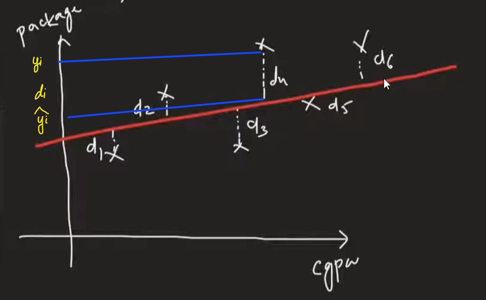
Har line aur actual point ke beech absolute vertical distance hai. MAE in distances ka average leta hai.
Advantage 1 — same unit Package target ho aur MAE aaye, to seedha bolo: average prediction error 1.5 LPA hai.
Advantage 2 — outlier impact relatively kam Distance ko square nahi kiya, isliye ek bahut large error MSE ke comparison me MAE ko relatively kam distort karta hai.
Disadvantage: Absolute-value graph zero par sharp corner banata hai. Function har point par differentiable nahi hota, isliye gradient-descent jaisi optimization methods me MAE convenient loss nahi hota.
2. MSE — Mean Squared Error
MAE me distance ka modulus tha. MSE me har distance ko square karte hain, phir unka average lete hain.
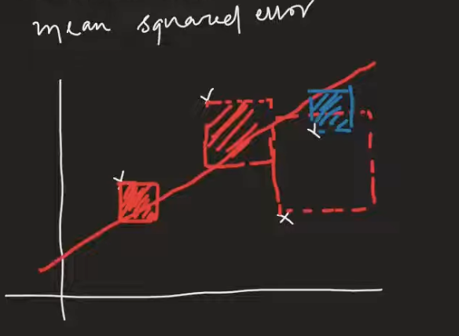
Instructor ka squared-error intuition: har vertical error ko square ki side samjho; MSE in squares ke areas ka average karta hai.
Advantage — differentiable loss Squaring se error function smooth/differentiable hota hai. Isliye derivatives nikal kar model ko optimize kar sakte hain.
Large error par effect Error double ho to squared penalty four times hoti hai. Agar large mistakes especially serious hon, yeh useful hai.
Disadvantage 1 — unit square ho jati hai Package target ho to MSE LPA² me aata hai; direct real-world interpretation difficult hoti hai.
Disadvantage 2 — outlier sensitive Outlier ka error square hokar bahut bada ban sakta hai, isliye MSE uske influence me zyada aa jata hai.
3. RMSE — Root Mean Squared Error
RMSE, MSE ka square root hai. Pehle squared errors use hote hain; last me root lene se result original unit me aa jata hai.
Advantage Package target ho, to RMSE LPA me read hoga—MSE ke compared communicate karna easy hai.
MSE wala behavior retain Square pehle lag chuka tha, isliye large errors ko RMSE bhi MAE se zyada importance deta hai.
Disadvantage: Outlier ka squared contribution pehle se present hai, so RMSE bhi outliers se strongly affect ho sakta hai.
4. R² — Mean baseline se model kitna better?
Agar CGPA jaise input features na hote, simplest fallback har student ke liye sab previous packages ka mean, , predict karna hota. R² regression line ko isi mean-line baseline se compare karta hai.
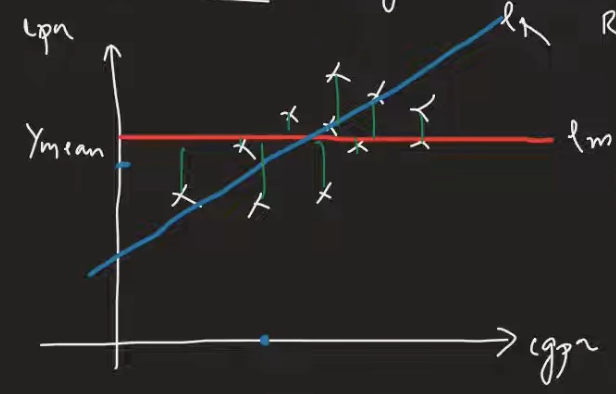
Red line = mean line — har CGPA ke liye same predict karti hai. Blue line = regression line — CGPA use karke package predict karti hai.
Numerator Blue regression line ki squared mistakes: .
Denominator Red mean line ki squared mistakes: .
R² = 1 Perfect model: regression line ki error zero hai; har student ka predicted package actual package ke exactly equal hai.
0 < R² < 1 Model mean line se better hai. Value jitni 1 ke closer, utna package variation model ke features explain kar rahe hain. Practical usefulness MAE/RMSE aur domain par bhi depend karti hai.
R² = 0 Model useful improvement nahi de raha: CGPA use karke prediction karna mean package ko sabke liye predict karne jitna hi hai.
R² < 0 Bad model: regression line mean line se bhi zyada mistakes kar rahi hai. Wrong model/data relationship me test data par possible.
R² = 0.80 — CGPA/placement example Students ke packages me jo overall difference/spread hai, uska 80% CGPA (aur model ke other input features) explain kar rahe hain. Baaki 20% unexplained hai—skills, interview performance, company, communication ya other factors ki wajah se. Iska matlab 80% predictions correct nahi hota.
5. Adjusted R² — useless feature ko penalty
Plain R² me feature add karne par score kabhi decrease nahi hota. Even irrelevant column—jaise interview-day temperature—add karne par R² same reh sakta hai ya slightly badh sakta hai.
R² use karna band nahi hota. R² ab bhi batata hai model target variation kitna explain kar raha hai. Problem sirf tab aati hai jab tum different feature sets wale multiple models compare kar rahe ho: extra useless feature ki wajah se plain R² artificial better dikh sakta hai. Us comparison me Adjusted R² dekho.
Symbols = data rows / students = independent input features
Relevant feature add karo Feature truly useful ho aur R² sufficiently improve ho, to adjusted R² bhi increase hota hai.
Irrelevant feature add karo: increases, penalty lagti hai, aur adjusted R² down ho sakta hai. Rule: Multiple Linear Regression me overall fit ke liye R² dekho; feature/model comparison ke liye Adjusted R² bhi dekho. Dono me large gap ho to plain R² extra features ki wajah se misleading ho sakta hai.
53
Multiple Linear Regression: Geometric Intuition & Code
Ab package predict karne ke liye sirf CGPA nahi, multiple input columns ek saath use honge.
Simple line se multiple inputs tak
Simple Linear Regression me ek hi input tha, isliye uska ek contribution tha:
Ab do inputs hon, jaise aur , to dono apna-apna contribution denge. Har input ka apna weight hota hai:
Intuition: first input ka contribution hai; second input ka contribution hai. Model in dono contributions aur baseline ko add karke final prediction deta hai.
Placement example me CGPA, IQ aur encoded gender inputs ho sakte hain:
Proper general formula: names CGPA/IQ/gender hata do, aur inputs ko likho:
Notation
Placement example
CGPA
IQ
Gender (numeric encoded value)
Predicted package
intercept/baseline hai. Har uske corresponding ka coefficient/weight hai.
Simple LR se difference
Simple LR One input → ŷ = β₀ + β₁X Graph me straight line draw kar sakte ho.
Multiple LR Many inputs → one predicted number. 2 inputs ho to plane; 3+ inputs me hyperplane—direct graph banana difficult.
“Linear” ka matlab features ke coefficients ke saath linear combination hai. Inputs zyada hone se output categorical nahi ban jata; package ab bhi continuous regression target hai.
Coefficient ko kaise read karein?
Example: β₁ CGPA ka effect batata hai, baaki input features fixed rakhkar. Isi tarah β₂ IQ ka additional effect aur β₃ encoded gender category difference represent karta hai.
Careful: Categorical column (gender/state) ko model me dene se pehle numeric encoding karni padti hai. Coefficient ko causal conclusion (“gender causes package”) mat samjho; regression observed association learn karta hai.
Two-feature dataset par sklearn code
Lecture me make_regression se two-input synthetic dataset banaya gaya, jise 3D me points aur regression plane ke form me imagine kar sakte ho.
from sklearn.datasets import make_regression from sklearn.model_selection import train_test_split from sklearn.linear_model import LinearRegression
X, y = make_regression(n_samples=100, n_features=2, noise=10) X_train, X_test, y_train, y_test = train_test_split(X, y, test_size=0.2, random_state=2)
model = LinearRegression() model.fit(X_train, y_train) y_pred = model.predict(X_test)
Geometric takeaway: 2 input features + one output ko 3D me scatter points aur a best-fit plane ke form me visualize kar sakte ho. More input features par same concept hyperplane ban jata hai.
54
Multiple Linear Regression Part 2: Mathematical Formulation From Scratch
Har row ka long equation ek compact matrix equation me likho, phir sab coefficients ek saath solve karo.
Lecture derivation — Step 1: har student ki equation
Instructor ne pehle 3 inputs (CGPA, IQ, gender) aur package output liya. First student ki prediction:
First subscript student/row hai; second subscript feature/column hai. So = student 1 ka feature 2 (IQ). Baaki students:
Transcript notation: students/rows hain; input features hain. General case me final term hoga.
Lecture derivation — Step 2: ŷ vector ko matrix se banao
Lecture me pehle all students ki predictions ko ek column vector me stack kiya. Agar 100 students hain, to me 100 predicted packages honge. General case me rows hain aur input columns:
First matrix ki each row ek student hai; second vector me intercept + all weights hain. First row ka dot product exactly first student ka equation deta hai.
Ab isi handwritten long matrix ko short names de do:
First column of 1s kyon? Har student ki equation me intercept aa sake: . Separate intercept rule likhne ki zarurat nahi padti.
Instructor ne pehle actual packages aur predicted packages ko separate column vectors me likha:
Har student ka error = actual minus prediction. Isliye all errors ko ek residual vector me pack karo:
Simple LR me total squared error yaad karo:
Same cheez matrix me se milti hai. Pehle residual vector ko transpose karo:
Connection: koi naya error metric nahi hai; yahi simple LR wala sum of squared errors hai, bas matrix notation me.
Ab substitute karenge:
Lecture derivation — Step 4: expand, then combine middle terms
Use the transpose rules and :
Instructor ne prove kiya ki middle dono terms equal scalars hain:
So final error function:
Lecture derivation — Step 5: derivative se normal equation
Minimum error ke liye derivative zero rakho. Instructor ne difficult matrix-derivative result directly use kiya:
Final answer: vector me —intercept plus all feature weights—ek saath milte hain.
Condition: exist hona chahiye. Highly correlated/redundant features se inverse problem ho sakti hai.
Lecture ending: OLS ke hote hue Gradient Descent kyun?
Abhi jo normal equation nikali, woh OLS / closed-form solution hai: formula lagao aur saare weights directly mil jaate hain.
Problem inverse operation hai. Inverse nikalne ke liye matrix ko invert karna padta hai. Agar input features hain, to yeh matrix approximately ka square matrix hai.
OLS / normal equation Matrix inversion ka computation roughly scale kar sakta hai. Features bahut zyada hon—text/high-dimensional data jaise—then inverse calculate karna slow ho sakta hai.
Gradient Descent Inverse nahi nikalta. Starting weights se error ko repeatedly reduce karte hue step-by-step minimum ke paas pahunchta hai. Yeh iterative approximation technique hai.
Lecture takeaway: Small/normal feature count par LinearRegression ka closed-form OLS convenient hai. Bahut large-dimensional problem me Gradient Descent useful alternative hai. Gradient Descent ka answer OLS ke answer ke close aata hai, but iterations/settings ki wajah se exactly same hona necessary nahi.
# Closed-form OLS approach from sklearn.linear_model import LinearRegression model = LinearRegression()
# Gradient Descent based approach from sklearn.linear_model import SGDRegressor sgd_model = SGDRegressor()
55
Multiple Linear Regression Part 3: Code From Scratch
Normal equation ko NumPy se class me implement karke sklearn ke LinearRegression result se compare karo.
Lecture ka practical dataset
Instructor ne sklearn ka load_diabetes() dataset use kiya: 442 patients, 10 numeric input features, aur continuous disease-progression target. Dataset clean/numeric hai, isliye normal-equation implementation par focus rehta hai.
import numpy as np from sklearn.datasets import load_diabetes from sklearn.model_selection import train_test_split
X, y = load_diabetes(return_X_y=True) X_train, X_test, y_train, y_test = train_test_split( X, y, test_size=0.2, random_state=2 )
Making our own Linear Regression class — lecture code
Exactly what happens:np.insert(..., 0, 1, axis=1) training matrix ke first column me ones add karta hai, so normal equation intercept bhi learn karti hai. betas[0] intercept aur betas[1:] all feature weights hain.
Class ko use karke sklearn se compare
lr = MeraLR() lr.fit(X_train, y_train) y_pred = lr.predict(X_test)
What to verify:lr.intercept_, lr.coef_, aur predictions sklearn ke output ke close/same aane chahiye. Aisa hua to normal equation correctly implement hui.
Why still use sklearn? Production implementation numerical edge cases aur solver choices better handle karti hai. From-scratch code ka purpose maths ko transparent banana hai.
56
Assumptions of Linear Regression
Model fit karne se pehle/baad me check karo ki data linear-regression ke assumptions ko roughly follow karta hai ya nahi.
Lecture ke five main assumptions
Assumption
Instructor ka simple check
Input aur output ka linear relationship
Har feature vs target scatter plot dekho.
No multicollinearity
Input columns ek-doosre ko strongly explain na kar rahe hon.
Predicted values ke across residuals ka spread roughly same rahe.
No autocorrelation of errors
Residuals me koi visible sequence/pattern na ho.
Important: Yeh practical checks hain—real data me graph perfectly ideal hona zaroori nahi. Clear violation dikhe, tab linear regression ke results/interpretation unreliable ho sakte hain.
1. Input aur output me linear relation
Ek input badhe to target overall straight-line trend me badhe ya ghate—dono acceptable hain. Positive relation ho sakta hai, negative relation bhi ho sakta hai.
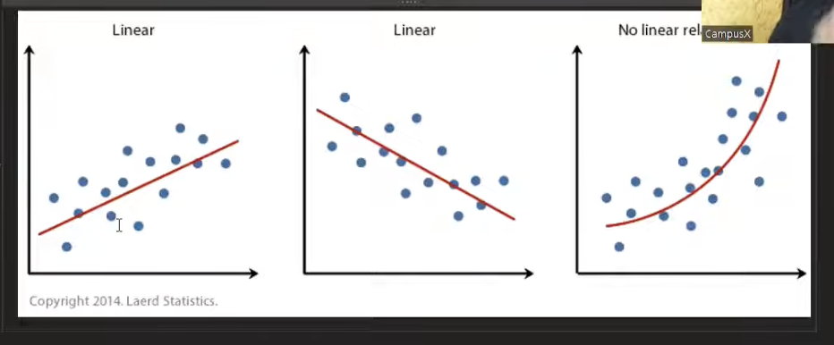
Instructor graph: left = positive linear relation, middle = negative linear relation; dono Linear Regression ke liye linear patterns hain. Right wala curved/non-linear pattern hai, jahan straight-line model appropriate nahi hota.
Positive: . Example: CGPA generally badhe to package bhi badhe.
Negative: . Direction negative ho, tab bhi relation linear ho sakta hai.
Multiple inputs me instructor ka point: har feature ko target ke against separately plot karke trend check karo. Clear curve/exponential pattern ho to plain straight-line model appropriate nahi ho sakta.
2. No multicollinearity
Multiple LR me coefficient ka meaning hota hai: “baaki inputs fixed rakhkar, is feature me change se target me kitna change.” Agar do input columns already strongly related hain, unka separate contribution clearly assign karna difficult ho jata hai.
Instructor analogy: Do scientists ne ek project banaya. Dono ke skills bilkul alag hon to contribution alag estimate karna easier hai. Dono same work/skill share kar rahe hon, to “credit kis ko kitna?” unclear ho jata hai—features ke saath bhi yahi issue hai.
Checks used in lecture: feature-feature correlation heatmap se quick idea milta hai. More direct check ke liye VIF:
Lecture rule of thumb: VIF aaye to us feature me multicollinearity concern ho sakta hai; feature remove/handle karne ka decision dekho.
Residual ko pehle samjho
Baaki last three assumptions residuals par based hain. Har test/training point ke liye:
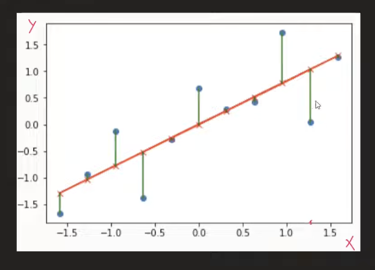
Blue dot = actual value ; red line par same ka point = prediction . In dono ka green vertical gap residual hai.
Residual actual target aur model prediction ka difference hai. Ab isi ke distribution, spread aur order ko check karna hai.
3. Residuals roughly normal hone chahiye
Residuals ka histogram/density plot generally bell-shaped ho aur mostly zero ke around ho. Q–Q plot me points reference line ke aas-paas hon to normality reasonable lagti hai.
Lecture checks:sns.displot(residuals, kde=True) se distribution dekho; Q–Q plot se compare karo. Small deviations acceptable ho sakte hain, but very skewed/strange shape warning hai.
4. Homoscedasticity = residual spread equal
Predicted values ko X-axis aur residuals ko Y-axis par scatter plot karo. Dots ka vertical spread poore range me roughly uniform hona chahiye.
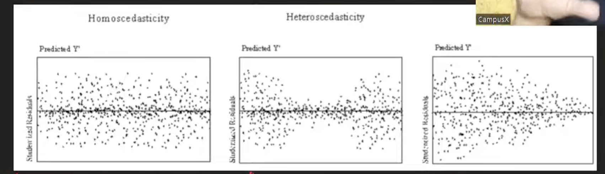
Left: Homoscedasticity — residuals ka spread roughly same width me hai. Middle/right: Heteroscedasticity — spread predicted value ke saath change ho raha hai; funnel/unequal spread pattern.
Good: Zero ke around random, roughly same-width cloud.
Problem: Funnel/megaphone jaisa spread—left se right error spread noticeably badh ya ghat raha ho.
5. Errors me autocorrelation nahi honi chahiye
Residuals ko order me plot karne par koi systematic pattern/trend nahi banna chahiye. Pattern ka matlab consecutive errors ek-doosre se related ho rahe hain; random scatter desirable hai.
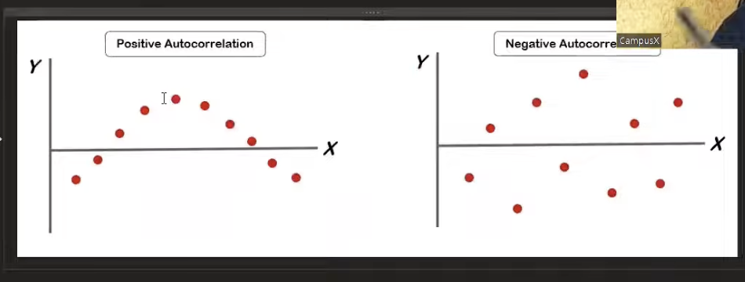
Left: positive autocorrelation — nearby residuals similar direction/pattern follow kar rahe hain. Right: negative autocorrelation — residuals alternating pattern me hain. Dono cases me errors independent/random nahi hain, so assumption violate hota hai.
Quick revision:linear relation, no multicollinearity, normal residuals, equal residual spread, no residual autocorrelation.
57
Gradient Descent: Complete Step-by-Step Intuition
Instructor ka exact learning path: pehle only intercept , phir learning rate, then slope aur intercept dono together.
1. Gradient Descent ki zarurat kahan se aayi?
Last lecture me OLS/normal equation se coefficients directly nikal sakte the. But multiple/high-dimensional data me matrix inverse calculate karna expensive ho sakta hai. Gradient Descent ka approach direct formula nahi hai:
Random answer se start karo → error ki downhill direction dekho → chhota update lo → repeat.
Instructor Linear Regression ke through samjha rahe hain, but algorithm sirf Linear Regression ka nahi hai. Logistic Regression, Neural Networks aur Deep Learning me bhi yahi optimization idea use hota hai.
2. Best-fit line ka actual target
Data points ke liye line:
Har point ki squared error add karke loss/cost function banta hai:
aur dataset se fixed hain. Isliye line improve karne ke liye sirf aur ko change kar sakte hain. Hume unki aisi values chahiye jahan minimum ho.
3. Instructor ka simplification: abhi m known hai, only b find karo
Ek saath aur optimize karna first time me difficult lag sakta hai. Isliye lecture pehle ko correct/fixed maan leta hai (demo me OLS se slope approximately ), aur sirf intercept dhoondhta hai.
Ab line rotate nahi hoti; sirf parallel up/down move hoti hai. Squared terms ki wajah se ka graph U-shaped parabola/bowl hota hai.
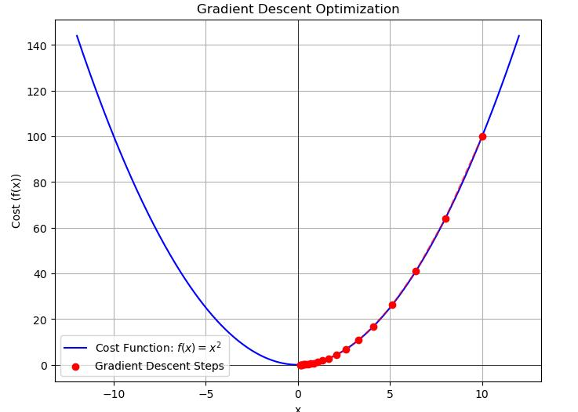
Blue curve = cost/loss function. Red points = repeated Gradient Descent updates: current point se slope ki opposite direction me move karte hue minimum tak aana.
Ab problem simple hai: bowl ke bottom par jo value hai, wahi best intercept hai. Instructor demo me correct value approximately dikhate hain.
4. Algorithm ko minimum ka direction kaise pata chalega?
Hum graph dekhkar bol sakte hain “right jao” ya “left jao.” Algorithm graph ko dekh nahi raha. Current point par slope calculate karke direction decide karta hai.
Current point left side par Slope negative hota hai. increase karna chahiye—minimum ki taraf.
Current point right side par Slope positive hota hai. decrease karna chahiye—minimum ki taraf.
Slope at a point nikalne ka old calculus rule: function ko differentiate karo, then current input value substitute karo. Example:
Exactly waise hi, differentiate karke current put karoge to us point ka slope milta hai.
5. Bare update rule: minus sign direction automatically handle karta hai
Agar slope negative hai, negative ko subtract karne par increase hota hai. Agar slope positive hai, subtract karne par decrease hota hai.
Yahi “descent” hai: current slope/gradient ki opposite direction me move karna. One variable me derivative bolte hain; multiple variables me derivatives ke collection ko gradient bolte hain.
6. Direct slope subtract kyon nahi kar sakte? Learning rate
Lecture notation me learning rate ka symbol hai. Slope ko directly subtract karoge to step bahut bada ho sakta hai aur point minimum ko cross karke baar-baar opposite sides par jump karega. Isliye slope ko small se scale karte hain:
η too small Chhote-chhote steps; convergence slow, fixed iterations ke andar answer tak nahi pahunch sakte.
η too large Minimum cross karke oscillate/diverge kar sakta hai; answer stable nahi hota.
Good η: sensible number of iterations me bowl ke bottom ke close pahucha de. Isliye learning rate important hyperparameter hai; data par try/tune karna padta hai.
7. Epochs: loop kitni baar chalega?
Gradient Descent ek update karke stop nahi karta. Epochs (lecture code me epochs) batata hai update wala loop kitni baar run hoga.
for i in range(epochs): # current slope calculate karo # parameter update karo
Term
Is lecture ke b-only demo me meaning
1 iteration
Current b se slope nikaalna aur ek baar new b banana.
epochs = 10
Yeh update cycle 10 baar chalega.
More epochs
Correct learning rate ho to intercept best value ke aur close ja sakta hai.
Learning rate se relation: bahut small ho aur epochs kam hon, to model minimum tak pahunchne se pehle loop khatam ho sakta hai. Isliye learning rate + epochs dono decide karte hain convergence kitni achchhi hogi.
8. b ke respect me slope derive karo — koi jump nahi
Start with only- loss:
aur me nahi hai, derivative zero hai; ka derivative hai:
Ab yahi slope update rule me substitute karo:
9. Lecture ka numerical movement: b = 0 se answer ke paas
Instructor ne fixed aur liya. True OLS intercept roughly tha. Starting line ke liye rakha:
Iteration
Current b
Slope
Step η × slope
New b
1
0
−2092
−20.92
20.92
2
20.92
≈ −418
≈ −4.18
25.11
3
25.11
≈ −83.76
≈ −0.84
25.95
Notice: answer ke close jaate hi slope aur step dono chhote hote ja rahe hain. Isliye line gradually OLS wali best-fit line ke close aati hai—even if starting intercept bahut wrong ho.
9. Code flow: b-only Gradient Descent
Lecture ne pehle class me only intercept optimize kiya, slope ko fixed rakha. Code ka logic yahi tha:
# m fixed; only b learn karna hai b = 0 for i in range(epochs): slope = -2 * np.sum(y - m * X.ravel() - b) b = b - learning_rate * slope
self.intercept_ = b
Loop ke har round me: current ke liye slope → step size → new . Iterations/epochs user choose karta hai.
10. Gradient Descent Linear Regression tak limited nahi
Algorithm ko sirf ek differentiable loss function chahiye. Linear Regression me squared loss hai; kisi aur algorithm me loss function different ho sakta hai. Bas us loss ko parameters ke respect me differentiate karke same update pattern apply hota hai.
Isliye yeh reusable optimization technique hai, not only a Linear Regression formula.
11. Ab full problem: m aur b dono unknown
Ab two-variable function hai. Iska visual ek 3D bowl jaisa socho:
Horizontal directions = aur ; height = loss. Random point se bowl ke bottom tak descend karna hai. Is bottom ke coordinates hi best aur best hain.
Key change: slope ka ab do components hain— direction aur direction. In dono ka combination gradient hai.
12. Full derivation: two partial derivatives
For , same result as above:
For , inner term ka ke respect me derivative hai:
Ab har iteration me dono updates ek hi current values se calculate karke simultaneously lagao. Lecture ka learning-rate symbol hai:
Important: Pehle aur dono old se calculate hote hain; then both values update hoti hain. Ek newly-updated parameter ko same iteration ke second gradient me use nahi karte.
13. Final visual memory
Graph / picture
Yaad rakhne wala meaning
Line moves toward data
Parameters update hone par regression line best fit ke close aati hai.
Cost vs b parabola
Iterations ke saath current point bowl ke bottom/minimum ki taraf aata hai.
3D bowl / contour view for m,b
Har step pair ko minimum-loss coordinates ki taraf move karta hai.
Lecture 57 one-line revision: Random se start karo; loss ke partial slopes nikaalo; learning rate se scale karo; opposite direction me repeatedly update karo; best-fit line mil jayegi.
58
Batch Gradient Descent: Multiple LR Derivation From Scratch
Instructor ka sequence: tiny 2-row dataset par har derivative nikalo, phir same idea ko all features aur NumPy code me generalize karo.
1. Yeh Batch Gradient Descent kyun hai?
Last lecture ka update pattern same hai, but now multiple inputs hain. Batch ka only meaning: ek update calculate karne se pehle poora training dataset use hota hai.
Batch GD
Poora dataset dekhne ke baad one update.
Stochastic GD One row Har single row ke baad update.
Mini-batch GD Rows ka small group Har small batch ke baad update.
Is lecture ka focus only first card hai. Agar 300 rows hain, Batch GD all 300 rows ke errors use karega and then coefficients ko one time update karega.
2. Instructor ka tiny setup: 2 inputs, 2 students
Real data me many rows/features hote hain, but derivation clear rakhne ke liye instructor ne do input columns aur do rows li.
Row
Feature 1
Feature 2
Target
Student 1
Student 2
Prediction equation:
Goal: ki correct values find karni hain. Intercept ko lecture me initially 0 aur coefficients ko initially 1 se start kiya gaya.
3. Loss function: total nahi, mean squared loss
Instructor ne mean squared loss use kiya:
Yahan = number of rows. Total loss aur mean loss ka minimum same location par hota hai; mean lene se scale dataset size se stable rehta hai.
Our 2-row toy example me :
Predictions substitute karo:
4. First derivative: intercept β₀ ke respect me
Only ko variable maan kar differentiate karo; fixed hain. Har row ke inside expression me hai, isliye inside derivative hai:
Ab common bahar nikalo. Toy example me , so :
Exactly wahi pattern all rows tak extend hota hai:
Isliye intercept derivative ek single scalar hai: all residuals ka mean, times .
5. Second derivative: coefficient β₁ ke respect me
Ab only variable hai. Har row me term hai, therefore inside derivative aayega:
Same cancellation apply karo:
All rows ka same expansion:
Meaning: ka derivative: every residual ko feature-1 column ki usi row wali value se multiply karo.
6. β₂ aur general βⱼ ka pattern
ke liye same steps repeat hote hain. Bas second feature ki values aati hain because inside derivative hai:
Ab pattern general hai:
Remember: kisi coefficient ka derivative: residual vector ko uske corresponding input column j se multiply karo. Intercept special hai, because har row me ke saath implicit multiply hota hai.
7. One Batch-GD update: all parameters together
Lecture notation me learning rate hai. Har epoch me all derivatives poore dataset se calculate hote hain, then update:
More features hon to parameters/derivatives honge: intercept plus one coefficient per feature. All updates same old parameter values se calculate karne hain, then apply together.
8. Python/NumPy me instructor ka vectorized calculation
Real lecture dataset: diabetes data—442 rows and 10 input columns. Isliye ten coefficient derivatives ko one-by-one loop me manually likhne ki jagah vectorization use hui.
# every training row ki prediction y_hat = np.dot(X_train, self.coef_) + self.intercept_
Batch word yahan visible hai: each epoch me y_hat, intercept_der, aur coef_der calculate karte time all training rows use ho rahi hain. Then only one update of intercept and coefficient vector happens.
10. Lecture ending: Batch GD ka trade-off
Useful when Dataset relatively small ho aur full training matrix RAM me aaram se fit ho. Full-data gradient ki wajah se path smooth/stable hota hai.
Problem with big data Har update ke liye all rows se derivatives calculate hote hain and full training matrix RAM me chahiye. Large image/text-like data ke liye yeh slow/memory-heavy ban sakta hai—next lecture ka motivation yahi hai.
59
Stochastic Gradient Descent
Ek time par sirf ek training row se update lo—fast and memory-friendly, but path noisy hota hai.
Batch GD ki problem
Batch GD ke gradient me har coefficient ke liye all rows ka summation hota hai. Rows/features bahut large hon to one update ke liye calculation bahut zyada ho jati hai. Aur vectorized operation ke liye full training matrix RAM me load karni padti hai.
Isiliye: big data, images aur text jaisi large-data problems me Batch GD often practical choice nahi hota.
SGD ka one-row update — step by step
SGD me Batch GD ki tarah poora dataset use nahi hota. Ek time par sirf one training row use hoti hai. Maan lo currently row choose hui hai aur two features hain:
Step 1 — prediction: current weights se isi one row ki prediction nikalo.
Step 2 — error:
Step 3 — one-row loss: Dataset ka mean nahi le rahe, so koi summation nahi. Is one row ka squared loss:
Derivatives ko clean rakhne ke liye instructor-style half-loss use kar sakte hain:
Why no or ? Batch GD all rows ka average gradient leta hai. SGD ki batch size hai: . Isliye sirf selected row ka gradient bachta hai.
β₀ ka one-row derivative
Only change ho raha hai. Pehle prediction ko loss me substitute karo:
Square ke inside ko bolo:
Ab ke respect me ka derivative. fixed hain, unka derivative hai:
Ab chain rule lagao: outer ka derivative , then inside derivative :
Yahan Batch GD wala nahi aaya, because only one row use hui aur half-loss se cancel ho gaya.
β₁ ka one-row derivative
Ab only change ho raha hai. Prediction ke andar term hai; therefore inside derivative :
Same pattern for second feature:
Immediately weights update karo
Is selected row ka gradient aate hi weights update hote hain:
Negative gradients substitute karo:
Flow: row 1 ke baad update, phir row 2 ke baad update, aise hi row tak. Puri dataset par ek baar chalna = one epoch. Ek epoch me rows hon, to updates milte hain—Batch GD ke one update ke comparison me.
Complete calculation — one epoch, two iterations
Ab ek feature wala model lo, so . Learning rate , starting weights , and two rows:
One epoch: row 1 use karke first update, then new weights ke saath row 2 use karke second update.
Iteration 1 — row 1:
Current weights both zero hain:
One-row gradients:
Immediately update:
After iteration 1:
Iteration 2 — row 2:
Ab initial weights nahi; iteration 1 ke latest weights use honge:
One-row gradients:
Immediately update again:
After iteration 2 / epoch 1 complete: . Current line: .
Next epoch me rows usually shuffle hoti hain. Har new iteration me current/latest weights se prediction niklegi, phir wahi row ka error, gradient aur update hoga.
Same data, different update frequency
300-row dataset ke liye
One epoch me updates
Batch GD
1
Stochastic GD
300
Isliye SGD quickly good solution ke paas aa sakta hai. Usually rows shuffle karke process ki jaati hain so ordering bias na aaye.
Trade-off: fast, but zig-zag
Benefits One row only: computation/memory low. Large datasets par fast initial progress. Randomness ki wajah se local-minimum region se jump karne ka chance ho sakta hai.
Limitation Har row full data ko represent nahi karti, so gradient noisy hai. Final path oscillate kar sakta hai aur exact optimum par settle hona guaranteed nahi.
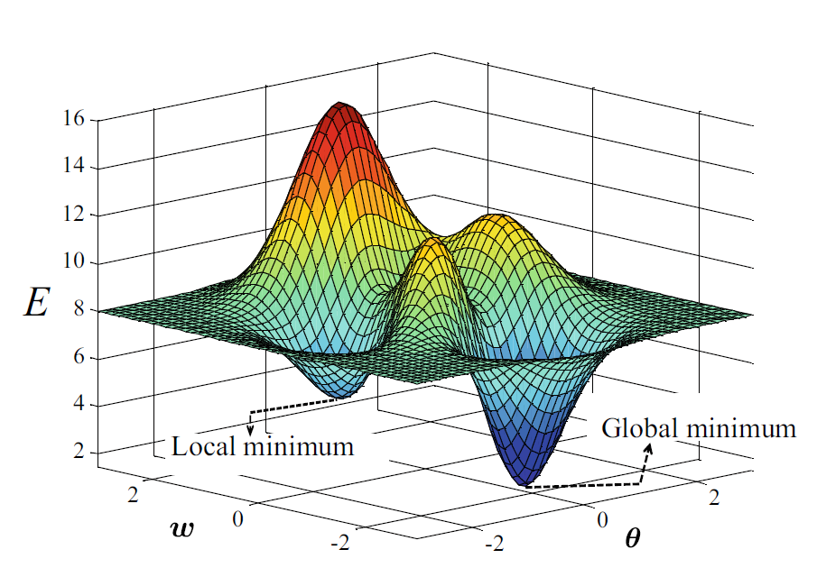
Local vs global minimum: local minimum apne nearby area ka lowest point hai; global minimum poore loss surface ka sabse lowest point hai. SGD ke one-row gradients noisy hote hain, so woh kabhi local valley se bahar jump karke better/global minimum region explore kar sakta hai. Yeh possibility hai, guarantee nahi.
# SGD-style loop (idea) for epoch in range(epochs): for x_i, y_i in shuffled_training_rows: error = y_i - (x_i @ beta) beta = beta + learning_rate * x_i * error
Learning Schedule — minimum ke paas slow down
SGD me agar learning rate har iteration me fixed rahe, to model correct/minimum region ke paas pahunchne ke baad bhi random one-row updates ki wajah se idhar-udhar jump karta reh sakta hai.
Start me Relatively larger rakho, so weights fast move karke loss ko quickly reduce karein.
Minimum ke paas gradually reduce karo, so updates chhote ho jaayen aur random/zig-zag behaviour kam ho.
Is changing learning rate plan ko Learning Schedule kehte hain. Idea ye hai: beginning me speed chahiye; solution ke paas stability/precision chahiye. Isse model minimum ke paas continuously bounce karne ke bajaye settle hone ki better chance paata hai.
Lecture note: fixed learning rate ke saath nahi chalna—epochs/iterations ke saath learning rate decrease karni hai. Custom code me tum khud schedule likh sakte ho; library estimator me available learning-rate options use kiye ja sakte hain.
60
Mini-batch Gradient Descent
Batch aur SGD ke beech ka practical compromise: ek row nahi, poora dataset bhi nahi—small group per update.
Why Mini-batch?
Batch GD stable hai but slow/memory-heavy. SGD fast hai but random/noisy hai. Mini-batch GD ek small group of rows (batch) se gradient calculate karke update leta hai.
Lecture example: 300 rows aur batch size 30 ho, to one epoch me 10 mini-batches milenge. Har 30 rows ke baad one update—so 10 updates per epoch.
Mini-batch ka formula — pehle rows se samjho
Maan lo current mini-batch me only two rows hain. One-feature model use karte hain:
SGD me only row 1 ya row 2 ka error use hota. Mini-batch me pehle dono rows ki prediction/error niklegi, then unke average gradient se one update hoga:
Batch loss: sirf current batch ke two rows
Half-loss convention use karo, so derivative ka cancel rahe:
Yahan , so expanded loss:
Difference: Batch GD me sum all rows par hota; SGD me one selected row par; Mini-batch GD me only current batch ki rows par.
β₀ aur β₁ ka mini-batch gradient
ke liye har row ka inside derivative hai. Dono row-gradients add hue aur batch size se average hue:
ke liye har row ka inside derivative hai:
General batch size ke liye:
Ek batch ke baad one update
Important: row 1 ke baad update nahi hota, row 2 ke baad bhi nahi. Pehle batch ke saare gradients collect/average karo; then one update:
Then next mini-batch lo, latest weights se predictions nikalo, and again one update. Full dataset ke saare mini-batches finish = one epoch.
Ab same formula matrix form me
Current batch ki feature rows ko , actual targets ko , aur predicted targets ko likho. Matrix formula above wali batch-summation ko compact likhta hai:
Yahan , isliye signs rows-wale formula se fully match karte hain.
Three types ek saath
Method
Rows per update
300 rows me updates/epoch
Nature
Batch GD
300
1
Smooth, but slow
Stochastic GD
1
300
Fast, but very noisy
Mini-batch GD (batch=30)
30
10
Balanced compromise
Practical flow
for epoch in range(epochs): shuffle(training_data) for X_batch, y_batch in batches_of_size(batch_size): y_hat = X_batch @ beta gradient = X_batch.T @ (y_hat - y_batch) / len(y_batch) beta = beta - learning_rate * gradient
Revision: Batch size ek hyperparameter hai. Batch size change karoge to update frequency, speed, memory use aur noise—sab change hoga. Isliye Mini-batch GD ko Batch aur SGD ke exact middle path ke roop me yaad rakho.
61
Polynomial Regression
Data ka relation curved ho, tab input features ko powers/products me transform karke Linear Regression se curve fit kar sakte hain.
Linear Regression line kyun fail hoti hai?
Simple Linear Regression ka model straight line hota hai:
Agar data ka actual pattern curve jaisa ho—for example:
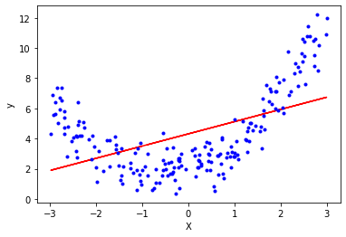
Linear fit: red straight line U-shaped pattern ko miss kar rahi hai; errors large hain.
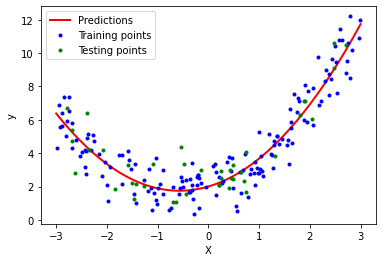
Polynomial fit: red curve data ke U-shaped pattern ko much better capture kar rahi hai.
Iska matlab Linear Regression algorithm kharab nahi; problem yeh hai ki curved pattern ke liye humne usse wrong inputs diye.
Polynomial features banao, then Linear Regression lagao
Degree 2 ke liye original input se extra feature banao:
Ab model:
Naam Polynomial Regression hai, but coefficients ke respect me model ab bhi linear hai: sirf weights hain. Isliye ordinary LinearRegression use hota hai—bas transformed features par.
Important: PolynomialFeatures sirf input par apply hota hai, target par nahi.
Degree ka effect
Degree too low Curve ka real pattern miss hoga. Train aur test dono par weak fit = underfitting.
Suitable degree Main curve capture hota hai, random noise nahi. New/test data par bhi generalize karne ka better chance.
Degree too high Model training points ke tiny random ups/downs ko bhi capture karne lagta hai = overfitting.
Lecture example me degree actual quadratic pattern ke closest thi. Degree jaisi high value wiggly curve bana kar training data ko chase kar sakti hai, but test points par fail kar sakti hai.
scikit-learn flow
from sklearn.preprocessing import PolynomialFeatures from sklearn.linear_model import LinearRegression
model = LinearRegression() model.fit(X_train_poly, y_train) y_pred = model.predict(X_test_poly)
Why fit only train?fit_transform(X_train) train se feature-rule learn karta hai. Test data par exactly wahi learned rule use karne ke liye transform(X_test), not fit_transform(X_test).
Multiple inputs: lecture wala simple formula
two input features/columns hain. Lecture ne degree ke liye har feature ki separate square power add ki:
Isko line-by-line read karo:
For input
Original value + its square.
For input
Original value + its square.
intercept hai. Har term ka apna different weight hai—isi liye alag hain.
Degree hoti, to same lecture pattern me cubes add hote:
Key idea: degree badhane ka matlab har input ke higher powers add karna. Isse model curve/complex pattern fit kar sakta hai, but degree too high ho to overfitting bhi ho sakti hai.
62
Bias–Variance Trade-off
Model ko itna simple bhi nahi rakhna ki pattern miss ho, aur itna flexible bhi nahi ki noise yaad kar le.
Lecture 61 ke degree graph se connection
Polynomial degree model complexity control karta hai. Complexity change hote hi do errors ka behaviour opposite direction me change hota hai:
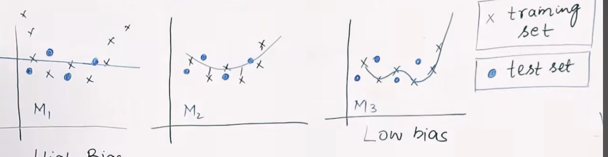
Instructor graph: crosses training points hain; blue dots test points hain. M1 too simple, M2 useful middle fit, aur M3 training points ko over-follow karne wala complex model hai.
Bias Model ki simplifying assumption ki wajah se real pattern ko miss karna. Low-degree/too-simple model me bias high hota hai.
Variance Training data thoda badle to fitted model kitna change hota hai. High-degree/too-flexible model me variance high hota hai.
Graph ko M₁, M₂, M₃ se step-by-step padho
Graph me crosses training set hain—model in points ko dekh kar seekhta hai. Blue dots test set hain—model ne training ke time inhe nahi dekha. Best model decide karte waqt test points ke paas curve/line hona important hai.
M₁: too simple model Straight line data ke curved pattern ko capture hi nahi kar rahi. Crosses se bhi door hai aur blue dots se bhi door hai.
Result: train error high + test error high.
M₂: useful model Curve main pattern follow karti hai, but har training cross ko exactly touch karne ki koshish nahi karti. Blue test dots ke bhi reasonably close hai.
Result: train error low + test error low.
M₃: too complex model Wiggly curve training crosses ko pakadne ke chakkar me unnecessary bends bana rahi hai. Blue test dots se pattern match nahi ho raha.
Result: train error very low, but test error high.
Underfitting exactly kya hai? — M₁
Jab model itna simple ho ki training data ka main relationship bhi learn na kar paaye, use underfitting kehte hain. M₁ me actual trend curved hai, but model almost straight line use kar raha hai.
Model ne noise memorize nahi ki—lekin real signal/pattern bhi miss kar diya. Isliye underfitting ka solution model ko thoda more capable banana ho sakta hai: suitable polynomial degree ya better features.
Bias connection: M₁ har situation ko overly simple assumption se dekhta hai—"data ko straight line se explain kar sakte hain." Yeh wrong assumption high bias create karta hai.
Overfitting exactly kya hai? — M₃
Training data me main pattern ke saath random noise/outliers bhi hote hain. M₃ ka wiggly curve har cross ke paas jaane ki try kar rahi hai—matlab true pattern ke saath random training-only details bhi yaad kar rahi hai.
Training score dekhkar M₃ impressive lag sakta hai, but unseen blue test data par result weak hoga. Isliye train performance alone se model select nahi karte.
Variance connection: training set me thoda different random points hote, to M₃ ki wiggly curve ka shape bahut change ho sakta tha. Isi instability ko high variance bolte hain.
Correct target — M₂ jaisa generalization
M₂ neither blindly simple hai nor training crosses ka exact sketch. Usne main relationship seekha, isliye unseen test dots par bhi similar performance deta hai. Isi property ko generalization kehte hain.
One-line memory: underfitting = pattern nahi seekha; overfitting = training noise yaad kar li; good fit = main pattern seekhkar new data par bhi work kare.
Degree kaise choose karoge?
Har dataset ka correct degree pehle se known nahi hota. Different degrees try karo, validation/cross-validation score compare karo, and best generalizing choice select karo.
for degree in [1, 2, 3, 4, 5]: # transform X with this degree # train model # compare validation / CV score
Training score continuously improve ho sakta hai as degree increases, but decision validation/CV performance se lena hai—not only training performance se.
Bias–variance balance ke three upcoming methods
Instructor ne bola: best balance har baar sirf degree manually choose karke nahi milta. Aage course me three techniques dekhenge:
Regularization Overly large coefficients ko penalty dekar model ko simpler banata hai. Overfitting/high variance control karne me useful.
Bagging Multiple models train karke unke predictions combine karta hai. Unstable/high-variance models ko more stable banane ka idea.
Boosting Models ko sequence me build karta hai; next model previous mistakes par focus karta hai. Underfitting/high-bias side ko improve karne ka idea.
Roadmap: abhi focus sirf trade-off samajhna hai. In teeno methods ko next lectures me detail me padhenge.
63
Ridge Regression — Regularization Intuition
Overfitting reduce karne ke liye loss me coefficient-size ki penalty add karo.
Regularization kya solve karta hai?
Overfitting me model training data par exceptionally achha perform karta hai, but test/new dataset par performance weak ya inconsistent hoti hai. Linear Regression me large slope/coefficients ka matlab prediction input par bahut strongly depend karti hai; model small data changes/noise ko overreact kar sakta hai.
Regularization extra information/constraint add karta hai so model over-complex na bane. Lecture me three names aaye:
Ridge L2 regularization
Lasso L1 regularization
Elastic Net Ridge + Lasso combination
Is lecture ka focus Ridge / L2 hai.
Ridge ka extra penalty term
Simple line ke liye OLS sirf squared errors minimize karta hai:
Ridge isme slope ko large hone se rokne ke liye penalty add karta hai:
Multi-feature case me same idea:
Penalty only weights par: intercept ko normally penalty nahi dete; feature coefficients shrink hote hain.
λ / alpha ka intuition
penalty ki strength hai. scikit-learn me isi hyperparameter ko generally alpha naam se pass karte hain.
Penalty absent. Exactly ordinary Linear Regression / OLS.
Moderate Coefficients smaller, model simpler; overfitting reduce ho sakti hai.
Very high Weights too much shrink. Model true pattern bhi miss kare = underfitting.
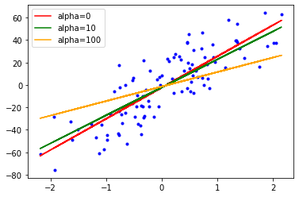
Graph ko read karo: red has no Ridge penalty; green has a smaller slope; orange shrinks the slope the most and becomes flatter.
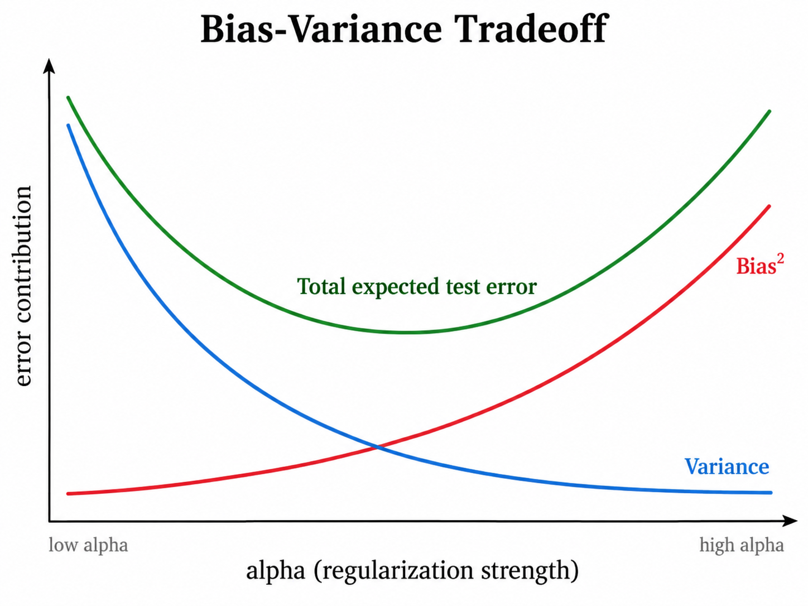
Ridge perspective: low α par bias low but variance high ho sakta hai; α increase karne par coefficients shrink hote hain, variance falls and bias rises. Green curve ka lowest point useful α range represent karta hai.
Ridge ka goal training error ko zero banana nahi; error aur coefficient size ke beech useful compromise choose karna hai.
Ridge in scikit-learn
from sklearn.linear_model import LinearRegression, Ridge
Lecture comparison me Ridge ka test score slightly better aaya because model simpler hua. Har dataset par automatic improvement guaranteed nahi; alpha ko validation/CV se tune karna hota hai.
64
Ridge Regression — Mathematical Formulation
Ridge loss differentiate karne par OLS formula me denominator me λ add hota hai, isliye slope shrink hota hai.
Start from Ridge loss
ka derivative OLS jaisa hi hai because penalty me nahi hai:
m ke respect me derivative
First squared-error part ka derivative same OLS pattern hai. New term differentiate karne par aata hai:
Using , instructor-style centred result:
Then intercept:
OLS se exact difference
OLS slope
Ridge slope
Numerator same hai. Ridge denominator me positive add karta hai, so magnitude of smaller hota hai. rakho to exact OLS formula wapas milta hai.
Multiple dimensions: matrix loss se derivative
Ab one slope nahi; saare coefficients ko Lecture 54 wali vector notation me pack karo. All rows ki predictions ek saath:
Lecture ka multi-dimensional Ridge loss:
First bracket ko expand karo:
Ab ke respect me derivative, term by term:
New Ridge term: Ordinary Least Squares derivative me first two terms hote hain. Ridge ki wajah se extra add hua—yeh all coefficients ko shrink karne wala term hai.
Set derivative to zero → multi-dimensional Ridge answer
Minimum loss par gradient zero rakho:
wale terms ek side combine karo:
Finally:
Compare with OLS: OLS me tha. Ridge me matrix ke andar add hua. Scalar/simple-regression denominator me aaya tha; yahan uska matrix version hai.
65
Ridge Regression — Gradient Descent
Normal equation ke badle Ridge weights ko iterative Gradient Descent se bhi learn kar sakte hain.
Matrix loss function
Lecture 54 wali notation maintain karte hue, coefficients ko one vector me pack karo. Ridge objective:
First term prediction error hai; second term L2 penalty. factors calculation convenient banate hain—minimum location change nahi hoti.
Derivative / gradient
Error part ko differentiate karo, then penalty derivative add karo:
Same expression ko residual form me likho:
New Ridge part: OLS gradient tha. Ridge me extra aaya, jo coefficients ko zero ki direction me pull karta hai.
Each iteration me error reduce karne wala part aur coefficients shrink karne wala Ridge part dono together work karte hain.
Library options from lecture
Ridge Ridge(alpha=..., solver=...) se direct Ridge model use kar sakte ho. Solver choose karta hai coefficients kaise find honge.
SGDRegressor penalty='l2' set karo to Gradient Descent based L2/Ridge regularization use hoti hai.
from sklearn.linear_model import SGDRegressor
model = SGDRegressor( penalty='l2', alpha=0.01, learning_rate='constant', eta0=0.01 ) model.fit(X_train, y_train)
Revision:alpha Ridge penalty strength hai; learning rate alag hyperparameter hai. In dono ko mix mat karna.
66
Ridge Regression — Interview Revision
Ridge ke important questions: λ badhne par coefficients, bias–variance, feature scaling aur limitations.
1. λ increase karne par coefficients ka kya hota hai?
means ordinary Linear Regression. λ positive and larger hota jaaye to large coefficients ki cost badhti hai, so every feature coefficient ki magnitude shrink hoti hai:
But Ridge usually zero nahi banata: coefficients very small ho sakte hain, but exactly zero generally nahi hote.
2. Bias–variance par effect
OLS / low λ Flexible model. Bias low, but variance high ho sakta hai—overfitting risk.
Ridge / moderate λ Model simpler hota hai. Bias thoda increase, but variance reduce—test generalization improve ho sakti hai.
Very large λ model ko oversimplify karke underfitting bhi kara sakta hai. Isliye λ hyperparameter hai; validation/CV se choose karte hain.
3. Feature scaling kyun zaroori hai?
Penalty coefficient ke square par lagti hai. Agar ek feature ka scale 0–1 aur dusre ka 0–100000 ho, then same prediction contribution ke liye unke coefficients naturally very different sizes ke honge. Ridge penalty unfair ho jaayegi.
from sklearn.pipeline import make_pipeline from sklearn.preprocessing import StandardScaler from sklearn.linear_model import Ridge
model = make_pipeline(StandardScaler(), Ridge(alpha=1.0))
Remember: Ridge/Lasso/Elastic Net se pehle features standardize karna common practice hai.
4. Ridge kab helpful hai?
Many correlated input features hon, overfitting risk ho, aur tum features ko remove nahi karna chahte—then Ridge useful hai. It keeps all features but their influence/coefficients smaller banata hai.
67
Lasso Regression — L1 Regularization
Ridge squares use karta hai; Lasso absolute values use karke coefficients ko exactly zero bhi bana sakta hai.
Ridge vs Lasso penalty
Ridge / L2
All coefficients shrink, usually none exactly zero.
Lasso / L1
Some coefficients exactly zero ban sakte hain.
Lasso loss function
First term data ko fit karne ka error hai. Second term coefficients ka absolute-value penalty hai. λ badhane par Lasso stronger simplification karta hai.
Lasso perspective: same α trade-off applies—low α can overfit (low bias, high variance); very high α can underfit (high bias, low variance). Difference: Lasso L1 penalty use karke kuch coefficients exactly zero bhi bana sakta hai.
Most important intuition: Lasso = automatic feature selection
Maan lo prediction model me CGPA, IQ, gender aur attendance features hain:
Agar λ sufficiently strong ho aur Lasso decide kare ki IQ aur attendance useful contribution nahi de rahe, it can learn:
Then actual prediction becomes:
Why feature selection? Coefficient means feature ka term . It has no effect on prediction, so Lasso effectively feature ko model se remove kar deta hai.
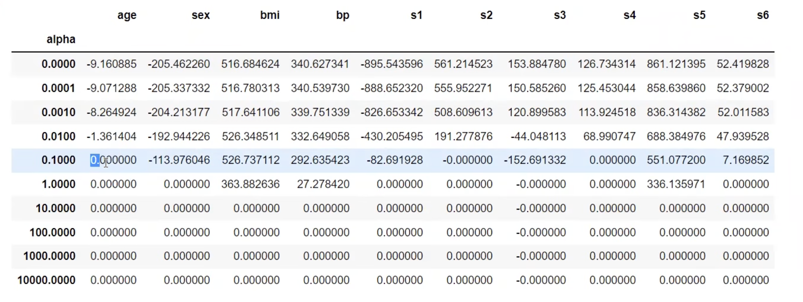
Table intuition: each row ek value hai; columns features ke coefficients hain. par all features active hain. α increases, coefficients exactly hote jaate hain—for example α = 1 par only a few coefficients remain; α = 10 par all become zero.
Ridge contrast: Ridge same coefficients ko, for example, tak shrink kar sakta hai—but they usually exactly nahi bante. So Ridge keeps all features; Lasso can select a subset.
Agar kisi feature ka learned coefficient exactly hai, model prediction me us feature ko use nahi kar raha. Isliye Lasso regularization ke saath feature selection bhi karta hai.
68
Why Lasso Creates Sparsity
L1 penalty ki shape ki wajah se Lasso ke solutions axes/corners par aate hain—therefore some coefficients exactly zero hote hain.
Setup: one feature se derive karo
Instructor ne maths simple rakhne ke liye one input , one slope liya. Start original Lasso loss se hota hai:
Intercept Lasso me bhi same relation follow karta hai:
Ab formula kaise aaya? Intercept ko prediction equation me substitute karo:
Ab actual minus prediction, yani residual:
Isi residual ko original squared-error loss me replace karne par centred Lasso loss milti hai:
Intuition: aur mean se distance hain. Intercept ko separate handle karne ki jagah, hum centred x se centred y predict kar rahe hain. optional convenience factor hai—derivative me square ka 2 cancel hota hai; minimum same rehta hai.
Problem yahi hai: zero par smooth/differentiable nahi hai. Isliye instructor ne three cases solve kiye.
Special setting: means no regularization
Ye Lasso ke cases me se ek nahi hai; yahan hum penalty strength ko zero set kar rahe hain. Penalty disappear hoti hai, so model normal OLS / Simple Linear Regression ban jaata hai:
Uska best slope aur intercept:
Note: sklearn me regularization strength ko bolte hain; theory derivation me humne same role ke liye use kiya hai. / means no regularization.
Case 1:
Positive (m) ke liye absolute value simply (m) hoti hai:
Derivative zero rakho:
Expand and (m) isolate:
Compare with OLS: numerator se λ subtract ho raha hai, so positive slope gradually zero ki taraf aata hai.
Case 2:
Negative (m) ke liye absolute value (-m) hoti hai:
Same differentiation, but penalty derivative ab hai:
Negative slope ke case me λ numerator me add hokar value ko less negative, i.e. zero ke closer, laata hai.
Case 3: when Lasso chooses exactly
Is case ka question hai: “Kab Lasso slope ko poori tarah zero bana dega?” Ye wala case nahi hai. Yahan penalty λ present hai, but learned slope ho raha hai.
Formula ko easy banane ke liye maan lo data se do values already mili hain:
Without Lasso, normal linear-regression slope:
Data positive slope suggest kar raha hai. Positive-slope case ka Lasso formula use karo:
λ = 2
Slope positive hai, so feature abhi model me useful hai.
λ = 5
Penalty ne data ke slope signal ko exactly cancel kar diya.
λ = 7
But this answer valid nahi: formula was derived only assuming .
Negative-slope formula bhi check karo:
Yeh positive answer hai, while formula assume karke derive hui thi—so yeh bhi valid nahi. Dono sides invalid hain; best valid point corner par hai:
One-line intuition: Jab penalty data ke slope signal se badi ho jaati hai, Lasso bolta hai: “Is feature ka contribution enough useful nahi hai.” It sets that feature’s coefficient exactly zero.
General rule:
Ridge se exact contrast
Ridge simple one-feature formula:
Yahan λ denominator me hai. λ increase karoge to slope smaller and smaller hota hai, but finite λ par numerator unchanged rehta hai—so it normally exactly zero nahi hota.
Lasso or λ numerator ko cancel kar sakta hai → exact zero.
Ridge
λ denominator increase karta hai → shrink, but usually no exact zero.
Multi-feature takeaway
Multiple features me har coefficient βⱼ ke liye same L1 penalty idea apply hota hai. Kuch features ka data-signal penalty se weak hota hai, so their coefficients exactly zero ho jaate hain; remaining non-zero coefficients selected features bante hain.
When Lasso is useful: Bahut features hon aur suspect ho ki only few actually useful hain. Highly correlated features me Lasso ek choose karke others zero kar sakta hai; aise case me Ridge/Elastic Net useful alternative ho sakte hain.
69
Elastic Net Regression
Elastic Net = Ridge ka L2 shrinkage + Lasso ka L1 sparsity, both in one loss function.
Elastic Net ki zaroorat kyun padi?
Elastic Net dono methods ki useful strengths leta hai, kyunki Ridge aur Lasso dono ki apni limitation hai.
Sirf Ridge ki problem Ridge correlated features ko stable rakhta hai, but coefficients ko usually exactly zero nahi karta. So irrelevant features model me remain kar sakte hain—automatic feature selection nahi milta.
Sirf Lasso ki problem Agar CGPA aur attendance jaise features strongly correlated hain, Lasso often ek feature choose karta hai aur dusre ko zero kar deta hai. Kaunsa choose hoga data ke small change se flip ho sakta hai—selection unstable ho sakta hai.
Elastic Net solution: L1 part useless features ko zero karke selection karta hai; L2 part correlated useful features ke weights ko more stable banata hai. Isliye many features, especially correlated features, wale dataset me Elastic Net use karte hain.
CGPA example: CGPA aur marks dono almost same academic signal carry kar rahe hain. Lasso sirf CGPA rakhe aur marks ko zero kar de sakta hai. Ridge dono ko small non-zero weights deta hai. Elastic Net irrelevant features ko zero kar sakta hai, while CGPA/marks jaise related useful features ko more balanced way me retain karta hai.
Both penalties together
L1 part Lasso jaisa coefficients ko zero bana sakta hai. L2 part Ridge jaisa all coefficients ko stable/shrunk rakhta hai.
scikit-learn parameters
from sklearn.linear_model import ElasticNet
model = ElasticNet(alpha=0.1, l1_ratio=0.5) model.fit(X_train, y_train)
alpha Total regularization strength.
l1_ratio = 1 Pure Lasso behaviour.
l1_ratio = 0 Pure Ridge behaviour.
Between 0 and 1 means both penalties contribute.
70
Logistic Regression — Introduction
Naam regression hai, but Logistic Regression mainly classification problems ke liye use hota hai.
Lecture ka placement example: CGPA + IQ
Graph me har dot one student hai. Blue students ka placement nahi hua; green students ka placement hua. X-axis CGPA () aur Y-axis IQ () hai.
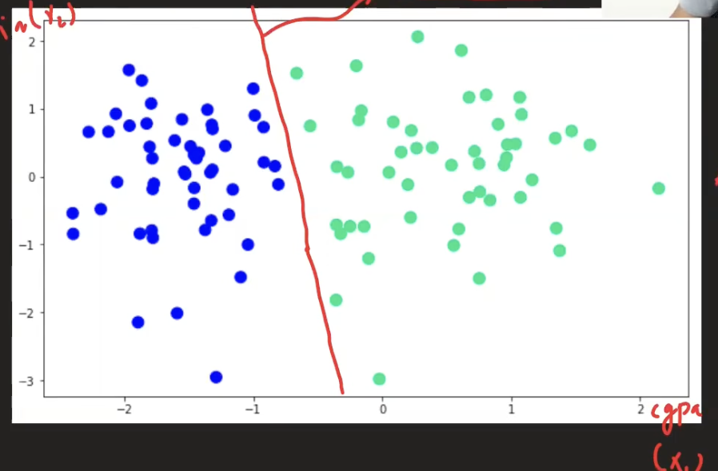
Red line initial random decision boundary hai. Line ke ek side model “placement” aur dusri side “no placement” predict karega. Ye final correct line nahi hai—lecture isi line ko iterations me improve karata hai.
Do classes agar ek line se separate ho sakti hain, data linearly separable hai. Yahan aim aisi boundary find karna hai jo blue aur green dots ko correctly separate kare.
Yahan nahi; general line equation use hoti hai
Linear Regression me aksar line likhte the. Classification boundary vertical bhi ho sakti hai, so lecture general form use karta hai:
ki correct values dhoondhna hi model ka goal hai. Three features hote to plane boundary banegi:
Perceptron trick: har loop iteration me kya hota hai?
Instructor ne pehle Perceptron ki simple intuition di. Random se start karo—therefore red line initially wrong ho sakti hai. Then loop chalao:
1. One student pickEk random training dot choose karo.
→
2. Boundary predictionDekho line us dot ko blue/green kis side place kar rahi hai.
→
3. Correct?Correct hai: no change. Wrong hai: line ko us dot ki taraf shift/rotate karo.
Misclassified blue dot ko green side predict kiya? Boundary ko blue dot ki direction me move karo. Misclassified green dot ko blue side predict kiya? Boundary ko green dot ki direction me move karo. Har wrong dot ke baad update hote hain; isliye red line next iteration me new position/angle par hoti hai.
Most important: Har iteration par line blindly move nahi hoti. Correctly classified point mila to line same rehti hai. Sirf misclassified point milne par boundary adjust hoti hai.
Screenshot: wrong point par line ko kaise move karte hain
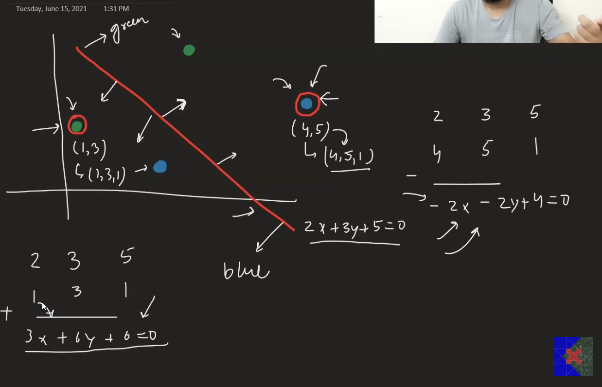
Current red boundary: . Board par coefficients ko incorrect point ke hisaab se adjust karke new red line banayi gayi hai.
Abhi bas itna yaad rakho: line ke equation me three numbers hote hain. Wrong blue/green dot milne par in teen numbers ko thoda change karte hain; isi se line us point ki direction me shift/rotate hoti hai.
Learning rate: one small update se samjho
Screenshot wala blue point galti se green side me aa gaya. Current line hai:
Lecture board me direct full change dikhaya:
Yeh bahut bada jump hai: line ek hi blue point ko correct karne ke liye suddenly kaafi move/rotate ho sakti hai. Real model me hum is point ke contribution ka sirf chhota portion lete hain. Maan lo learning rate :
Ab full subtract nahi karenge; sirf small step subtract karenge:
New boundary:
Meaning: Learning rate boundary ko blue point ki correct side ki taraf thoda move karata hai—not one huge jump. Next wrong point milega, phir ek aur small adjustment hoga.
η very small Safe, controlled movement; but correct boundary tak pahunchne me more loops/iterations lagengi.
η too large Ek point ko fix karte karte line bahut door jump kar sakti hai aur other correctly classified points wrong ho sakte hain.
Ab lecture ka exact Perceptron algorithm derive karo
Abhi tak hum intuition se samjhe ki line ko wrong point ki direction me little-by-little move karna hai. Instructor ne ab isko one clean algorithm me convert kiya.
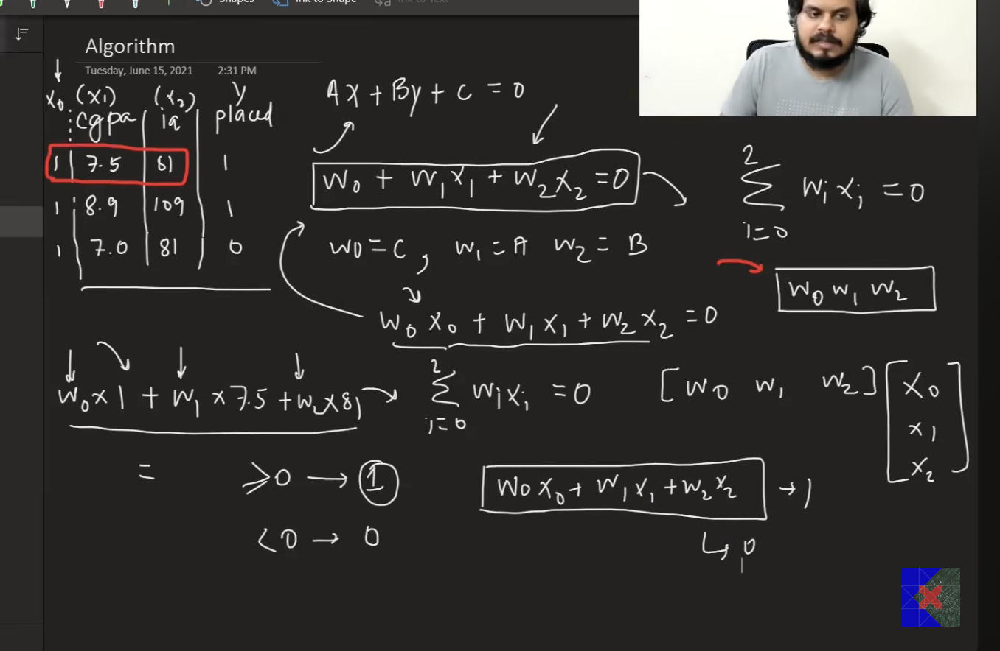
Line ko weights notation me likha: . Yahan .
Har student ke liye first value add karte hain. Isse intercept bhi same calculation me include ho jaata hai:
boundary-score hai. Prediction rule:
Labels: means positive/placed (green), and means negative/not placed (blue).
Four possibilities: change kab karna hai?
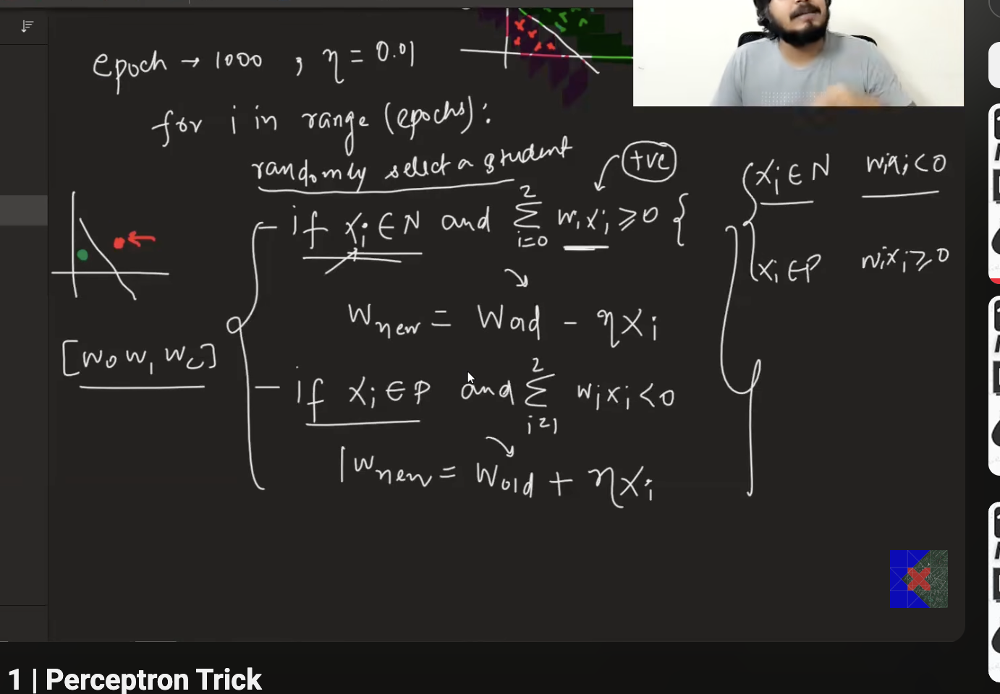
Lecture rule: correctly classified point par no update; wrong point par weights adjust.
Correct cases → no change : green correctly green side me. : blue correctly blue side me.
In dono me .
Wrong cases → update : green galat blue side me → line green point ki side move karo. : blue galat green side me → line blue point ki side move karo.
Do rules se one simplified formula
Earlier rules the:
Instructor ne notice kiya ki automatically direction decide karta hai:
Correct green → no update.
Correct blue → no update.
or Wrong green → add; wrong blue → subtract.
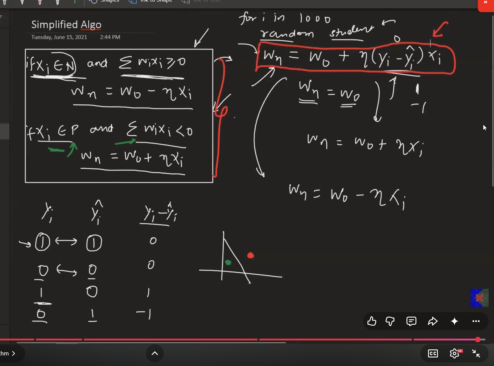
Isliye instructor ka final simplified Perceptron update rule:
Ye formula har randomly chosen student par apply hota hai. Correct point par bracket zero, so weights same. Wrong green par plus update; wrong blue par minus update.
One complete numerical update: CGPA + IQ student
Maan lo selected student ki CGPA aur IQ hai. Intercept include karne ke liye student input:
Current decision boundary:
Same order me weights likho—constant first, then CGPA, then IQ:
Step 1 — score aur prediction:
Model bol raha hai green/placed. But maan lo actual label blue/not placed hai:
Graph reading: selected student actually blue hai, but red boundary ki green-prediction side par hai. Isliye and update direction negative hoga.
Step 2 — learning rate ke saath update:
So new decision boundary:
Next iteration: Is update ke baad naam change hokar next loop me ban jaata hai. Then next random student select hota hai and same steps repeat hote hain.
Loop kab stop hota hai?
Convergence Full pass ke baad misclassified points ho jaayen. Boundary correctly separates the training data.
Maximum iterations Practical safeguard: fixed number, e.g. 1,000/10,000 updates, tak loop run karo. Data linearly separable na ho to perfect zero mistakes possible nahi hoti.
One-line memory: pick point → calculate score/prediction → correct ho to no change → wrong ho to final update formula apply → repeat.
Two ways to understand it
Geometric view Features ke space me aisi decision boundary find karo jo classes ko separate kare. Is lecture ka graph aur Perceptron trick yahi view use karte hain.
Probabilistic view Input ke liye class-1 probability calculate karo, then threshold use karke final class decide karo.
Lecture series Logistic Regression ko aage primarily probabilistic point of view se build karegi, but Perceptron geometric intuition useful foundation hai.
71
Perceptron Trick — Code & Animation
Last lecture ka same Perceptron algorithm ab NumPy code me: one random student, prediction, then update.
Dataset ka setup
Lecture me two-dimensional classification data use hua: each row ek student, two input columns, and target . Green = class 1 / placed; blue = class 0 / not placed.
Intercept ko one calculation me include karne ke liye har row ke start me insert hota hai:
X = np.insert(X, 0, 1, axis=1)
# before: [CGPA, IQ] # after: [1, CGPA, IQ]
Step function + one-row prediction
def step(z): return 1 if z >= 0 else 0
y_hat = step(np.dot(X[idx], weights))
boundary score hai. Step function score ko hard class me convert karta hai: score then 1, otherwise 0.
Lecture algorithm in code
def perceptron(X, y, epochs=1000, lr=0.1): X = np.insert(X, 0, 1, axis=1) weights = np.ones(X.shape[1])
for _ in range(epochs): idx = np.random.randint(0, X.shape[0]) y_hat = step(np.dot(X[idx], weights)) weights = weights + lr * (y[idx] - y_hat) * X[idx]
return weights[1:], weights[0]
Last line as coefficients aur as intercept return karti hai.
Animation ko kaise read karein
Random rowEk student select hota hai.
→
Correct?Correct ho to error 0; boundary same.
→
Wrong?Error ±1; weights change, line shift/rotate.
Isliye animation me kuch frames me line bilkul static dikhegi—selected point already correct tha. Sirf misclassified point milne par line move hoti hai.
Important Lecture 71 conclusion: correct separation ≠ best line
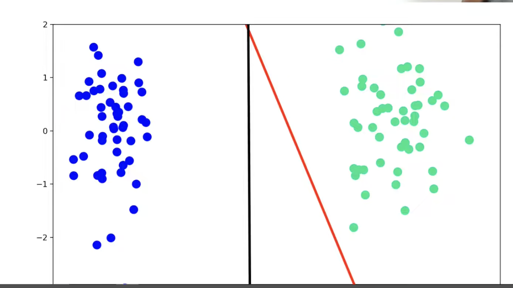
Red Perceptron line blue aur green classes ko accurately separate kar rahi hai—training points misclassified nahi hain. Phir bhi ye ideal boundary nahi hai because green class ke closer hai and two sides par margin equal nahi hai.
Perceptron ka rule sirf itna check karta hai:
Is graph me red line ka kaam technically complete ho gaya—blue left side me, green right side me. But line ko beech ke empty gap/middle me hona chahiye tha, so both classes se safer distance milti.
Perceptron boundary Accurate separation milte hi stop. Random initialization aur point selection ki wajah se kisi bhi valid separating line par ruk sakta hai.
Better boundary intuition Dono classes se balanced distance/margin rakhe. New unseen point thoda noisy ho tab bhi wrong side me jaane ka chance lower hota hai.
Lecture ka problem statement: Perceptron accurate classifier bana sakta hai, but it does not search for the best separating line. Isi limitation ko solve karte hue next lecture Logistic Regression/Sigmoid approach build karta hai.
72
Why Perceptron Is Not Enough
Perceptron classes separate kar deta hai, but best/safest boundary choose karne ka reason nahi deta.
Perceptron ki main limitation
Perceptron rule me correctly classified point ke liye:
Jaise hi all training points correct side me aa gaye, algorithm stop kar deta hai. Boundary green points ke bahut close ho sakti hai and still “correct” count hogi. Lecture comparison me Logistic Regression boundary more balanced/equal-margin wali lagi, which can generalize better on new data.
What should change?
Lecture ka idea: sirf wrong points hi line ko pull na karein. Correct points bhi boundary ko push karein:
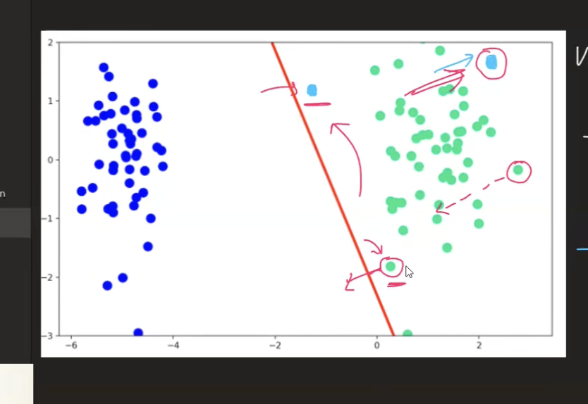
Graph intuition: red line ke around circled points boundary par different strength se influence karte hain. Point line se kitna close/far hai, usse movement ki intensity decide hoti hai.
Wrong point Line se bahut door wrong ho to strong pull. Line ke paas wrong ho to smaller pull.
Correct point Line ke bahut close ho to strong push away. Correct side me already far ho to weak push.
Iske liye model prediction sirf hard ya nahi ho sakta. Continuous value chahiye, warna correct case me difference hamesha zero rahega.
Lecture 72 start: Perceptron formula ke four cases
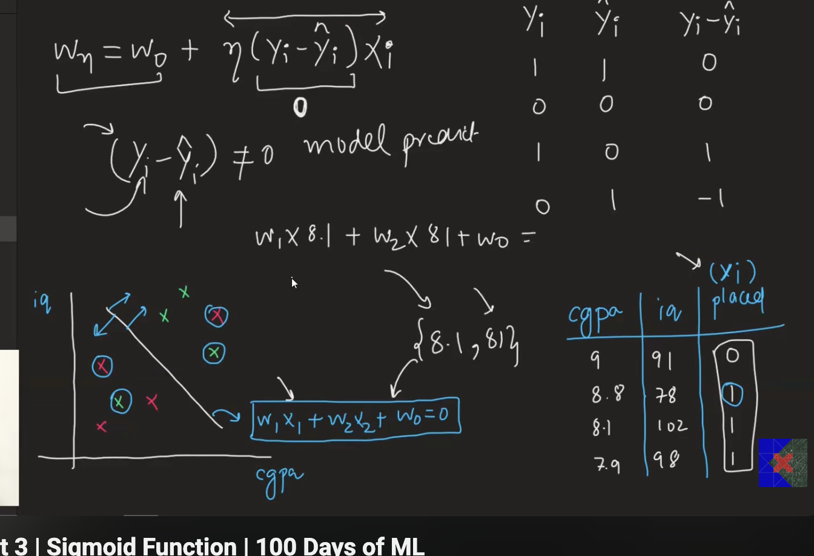
Ab instructor old Perceptron update formula ke four cases se dikhata hai ki correct points par effect zero kyun ho raha tha.
Actual
Prediction
Old Perceptron result
1
1
0
Correct green → no weight change
0
0
0
Correct blue → no weight change
1
0
+1
Wrong green → positive update / pull
0
1
−1
Wrong blue → negative update / pull
Problem first two rows me hai: correctly classified point ke liye , so line par kuch effect hi nahi hota.
What can we change? actual data label hai—use change nahi kar sakte. But model ki calculation hai. Step function ke hard prediction ko continuous output se replace karenge so correct cases me bhi difference exactly zero na rahe.
Step function ko Sigmoid se replace karo
Sigmoid ka kaam kisi bhi input number ko smooth output range me squash karna hai:
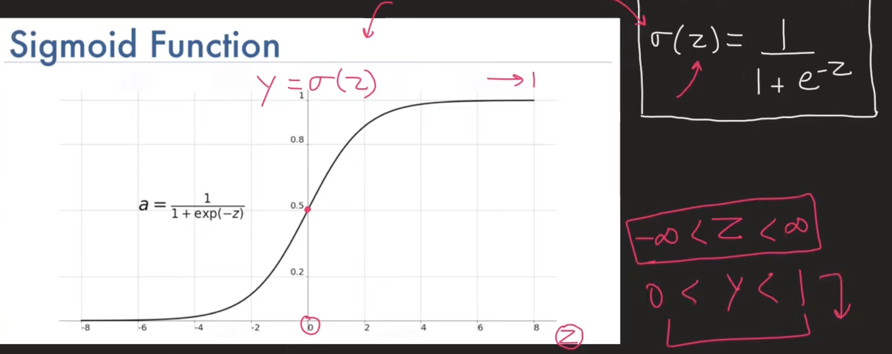
Graph reading: input can be anywhere from to , but output always stays strictly between and .
Very negative z
Class-1/placement probability almost zero.
Exactly boundary par: 50–50, model unsure.
Very positive z
Class-1/placement probability almost one.
Why Step function se better? Step score ko abruptly only 0/1 banata tha. Sigmoid same input ko, for example, jaisi continuous confidence/probability me convert karta hai. Isliye correct point line ke close ho to bhi update signal exactly zero nahi hota.
Impact of Sigmoid on the update
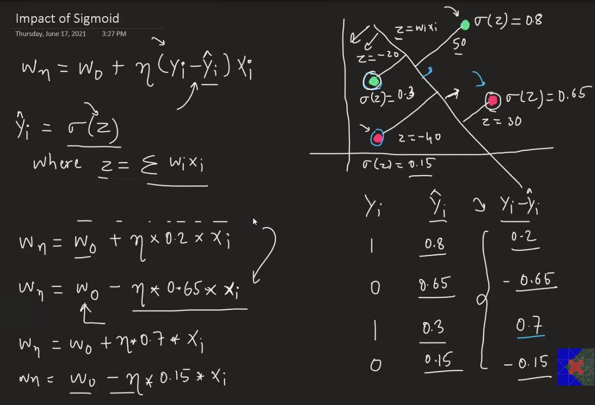
Lecture board calculation: Step function ke hard 0/1 ke instead Sigmoid continuous deta hai, so can be values like —not only .
This exactly implements the earlier intuition: wrong-and-far point gives larger correction; correct-but-near point still gives a small non-zero push. The magnitude now comes automatically from .
Last lecture comparison: first green point pushes more
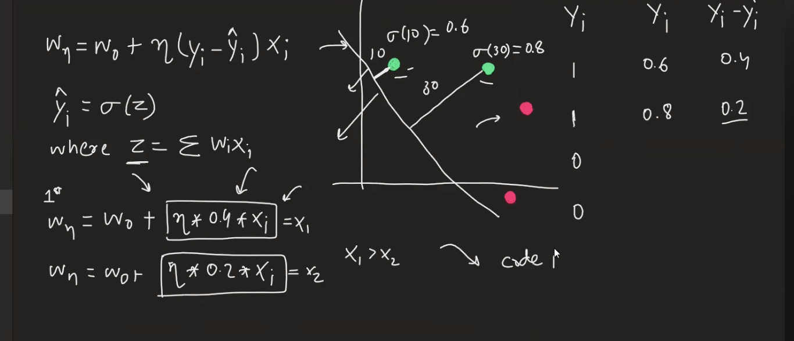
Both green points are correctly classified, but first point boundary ke closer hai: vs second point .
Dono points ke actual label green hai, so:
First green: near boundary
Update/push larger because model only 60% confident hai.
Second green: far from boundary
Update/push smaller because model already 80% confident hai.
One-line conclusion: Same correctly classified green class ke liye, boundary ke closer point ka bigger hota hai. Therefore it pushes the line more strongly; far safe point pushes only a little.
73
Logistic Regression Loss — Likelihood to Cross-Entropy
Probabilities mil gayi; ab question hai: do candidate boundaries me mathematically better kaunsi hai?
Lecture board: actual-class probabilities multiply karo
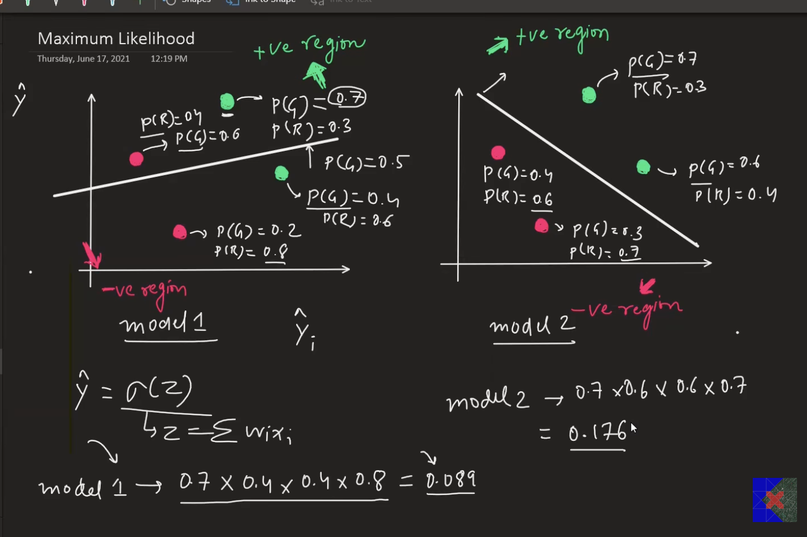
Lecture ka starting example: same four points ke liye two different boundaries, Model 1 aur Model 2.
Har point ke paas model do probabilities deta hai—green probability aur red probability. Ab hume guess nahi karna; point ka actual colour dekho aur bas us actual class ki probability pick karo.
Actual green point Board me Model 1 par top green ka . So likelihood calculation me is point se 0.7 loge. Model green ko 70% confidence se correct maan raha hai.
Actual red point Board me Model 1 par upper red ka . So is point se 0.4 loge—not its green probability , because actual point red hai.
Rule: actual green → lo; actual red → lo. All training points ki selected probabilities multiply karna hi likelihood hai.
Maximum likelihood: boundary kaise compare karenge?
Lecture me do possible boundaries—Model 1 aur Model 2—liye gaye. Dono classes ko separate kar sakte hain, but question ye hai: kaunsi boundary training data ko zyada confidently correct class deti hai? Iska numeric answer likelihood hai.
Likelihood kyun chahiye? Sirf correct/wrong count se dono models same lag sakte hain. Likelihood confidence bhi measure karta hai: actual green point ko high green probability aur actual blue point ko high blue probability dene wala model better hai.
Har point ki probability kaise choose hoti hai?
Model ki output = green/class-1 probability. Therefore blue/class-0 probability is . Har point par actual label dekho aur us actual class ki probability lo:
Actual green: If model says green probability , then this point contributes .
Actual blue: If model says green probability , blue probability is ; this point contributes .
Board calculation: Model 1 vs Model 2
Board par four points ke actual-class probabilities pick karke multiply ki gayi:
Model 1
Do points ki actual class ko low probability mil rahi hai; boundary less convincing hai.
Model 2
Actual classes ko relatively higher probabilities mil rahi hain.
Decision: . So Model 2 has greater likelihood, hence it is preferred. Maximium likelihood ka matlab: weights/boundary ko aisa choose karo jisse observed training labels ki combined probability maximum ho.
Formula same rule ko compactly likhta hai: if , term becomes ; if , term becomes .
Step 2 — Product small hone par log lo
Board ke Model 1 me pehle likelihood mila:
4 values me answer visible hai. But hundreds/thousands of rows me aise ke beech ki values multiply hoti rahengi, so final number extremely small ho jaayega. Isliye same calculation ka log lete hain:
Log ka rule: multiplication becomes addition. So exactly board ki four values alag-alag log ban jaati hain:
Important: Log increasing function hai. So bigger likelihood means bigger log-likelihood too. Isliye best model same rahega—hum sirf multiplication ko easier addition me convert kar rahe hain.
Step 3 — Same formula, Model 1 ke four points par
Per-row loss formula hai:
Model 1 ke board values me har row par is formula ko substitute karo:
Point 1: actual green
Point 2: actual pink/blue Model says green , so correct blue probability .
Point 3: actual green
Point 4: actual pink/blue Model says green , so correct blue probability .
All four row-loss add karo:
Connection clear: ye exactly earlier likelihood product ka negative log hai. Har row ki correct-class probability ka negative log banta hai, then sab rows add hote hain.
Cross-entropy loss
Probability ke logs negative hote hain. Isliye convenient positive loss banane ke liye negative sign add hota hai:
Memory chain: maximize likelihood → maximize log-likelihood → minimize negative log-likelihood. Negative log-likelihood ka hi naam binary cross-entropy loss hai.
Wrong aur overconfident prediction par loss very large hota hai. Example: actual , but model de—then large penalty hai.
Step 3 — BCE formula pehle derive karo
Board ke Model 1 ka negative log tha:
Har point me ek hi rule use hua: actual class ki probability lo, phir uska negative log lo.
Actual green: Green ki predicted/correct probability hai.
So row loss .
Actual red: Red ki predicted/correct probability hai.
So row loss .
Ab dono cases ko one formula me likhna hai. aur switches hain:
Green case: put
Red case: put
Isliye combined per-row formula naturally milta hai:
Ab Model 1 ka link: green points se aur red points se aaye. Therefore board ka same sum milta hai.
74
Sigmoid Function Derivative
Logistic Regression gradient derive karne se pehle sigmoid ka derivative clean form me nikalna zaroori hai.
Start with sigmoid
Power/chain rule apply karo:
Useful form kaise milta hai?
In dono ko multiply karo:
Why useful? Agar output already pata hai, derivative ke liye exponent dobara calculate nahi karna: simply .
75
Logistic Regression — Gradient Descent
Cross-entropy ka closed-form solution nahi hota; weights ko Gradient Descent se learn karte hain.
Step 1 — Dataset ko matrix form me dekho
Lecture notation me = total training rows aur = input-feature columns. Row 2 ke inputs hain and its actual output is .
Weights: har input column ka apna weight hai. Plus intercept/bias . Therefore total learnable weights hain.
First row ke liye sigmoid ke andar linear expression:
and prediction:
Exactly same pattern row 2, row 3, … row ke liye repeat hota hai.
Step 2 — All predictions ko ek vector me stack karo
Har row ki prediction alag-alag likhne ke instead:
Har entry par same sigmoid lag rahi hai:
Step 3 — Intercept column add karke compact form
Bias ko matrix multiplication me include karne ke liye ke left me all-ones column add karte hain:
Ab each row ka long expression automatically matrix multiplication se ban jaata hai:
Reading: har row ka weighted sum + bias deta hai; then har sum ko 0–1 prediction me convert karta hai.
Step 4 — Binary Cross-Entropy for all m rows
Lecture 73 ka one-row loss sab rows par average lo:
Instructor ne same summation ko do parts me khola:
First sum ka expansion:
Step 5 — Summation se vector notation
Previous line ko dot product ki tarah likh sakte hain:
Second sum bhi same pattern follow karta hai. Therefore final vectorized loss:
Final goal: Gradient Descent ko minimize karke correct find karega. Wahi learned weights best logistic-regression boundary banayenge.
Step 6 — Gradient Descent ko loss se connect karo
Loss function ab matrix form me hai. Hume aise weights chahiye jinke liye loss minimum ho. Har epoch me Gradient Descent update karta hai:
Yahan gradient ek vector hai because weights bhi vector hain:
Lecture flow: σ(Xw) ko BCE loss me substitute karo → loss ka weight-wise derivative lo → gradient milega → har epoch us gradient se weights update honge.
Step 7 — First BCE term ka derivative
Single training row ke notation se derivation readable rahegi. Remember:
First BCE term is . Actual data value hai, so it is constant while differentiating:
Step 8 — Second BCE term ka derivative
Second term is . Chain rule me inner derivative ka negative sign aata hai:
Step 9 — Dono derivatives simplify karo
Loss ke outer negative sign aur average ko include karo:
Common outside:
Bracket expand karo:
Key cancellation: aur cancel ho gaye. Isliye sigmoid + BCE ka gradient cleanly error ban jaata hai.
Step 10 — All rows ke liye final matrix update
All rows ko combine karne par:
Gradient Descent formula me substitute karo:
Shapes
Every epoch 1. 2. error 3. update 4. repeat until loss becomes minimum/stable.
Gradient Descent — instructor board derivation
Below is the exact board sequence from the lecture. Isko previous matrix-loss section ke continuation me read karo.
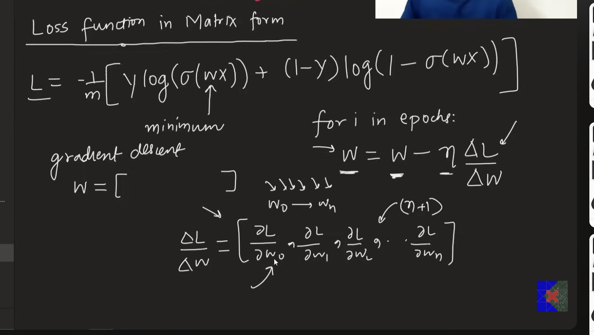
Loss matrix form, weight vector, aur Gradient Descent update start.
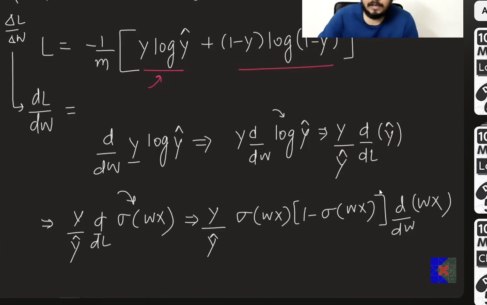
First term ka derivative.
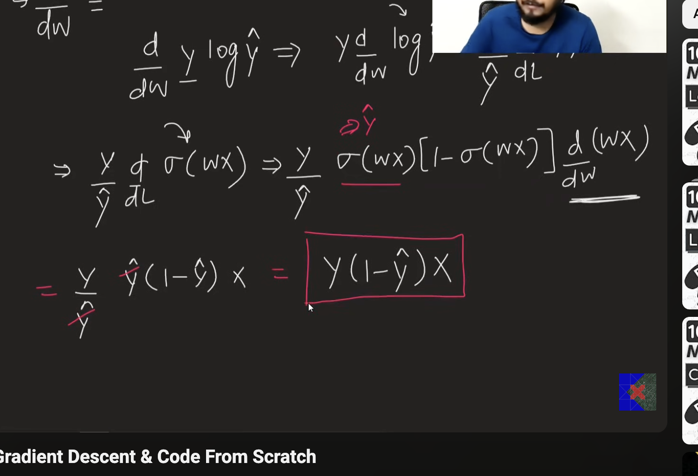
Sigmoid derivative substitute karke first term simplify hota hai.
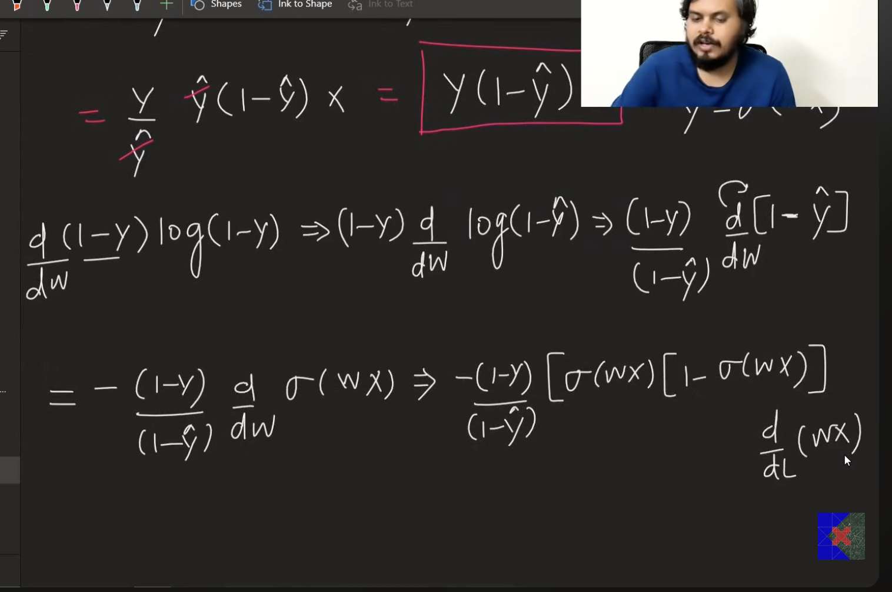
Second term ka derivative.
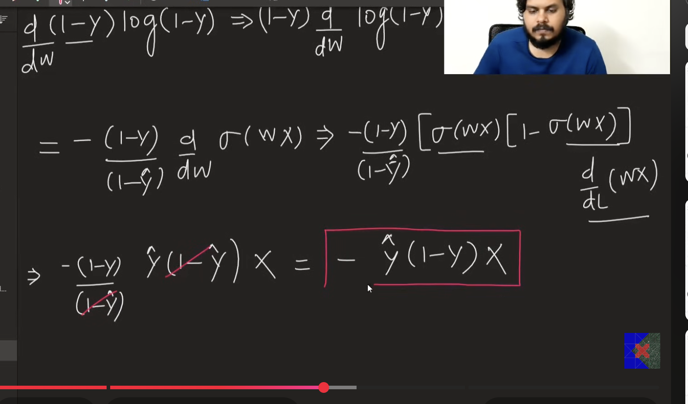
Chain-rule negative sign ke saath second term simplify hota hai.
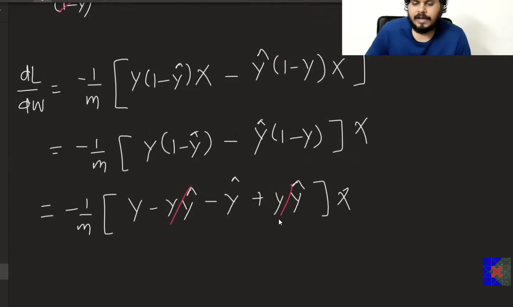
Dono derivative terms ko combine karna aur cancellation start.
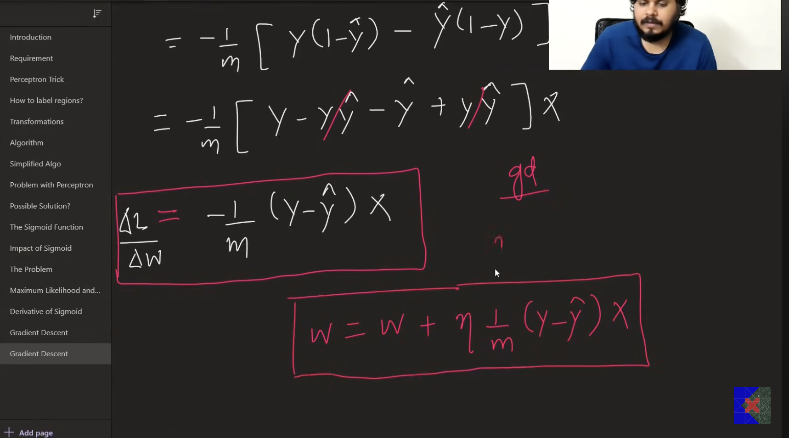
Final gradient aur Gradient Descent update rule.
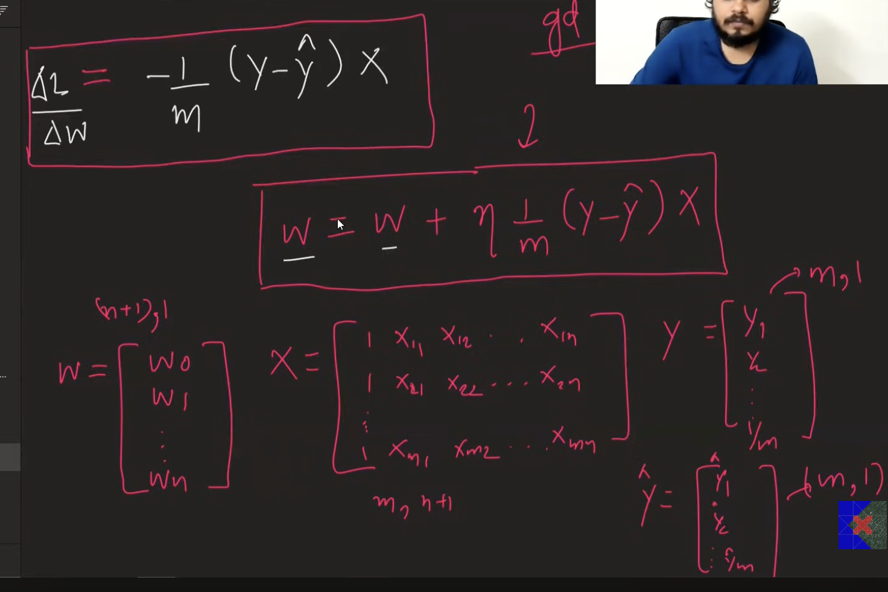
Final update ke saath ki matrix shapes.
Lecture 75 — exact board sequence: matrix setup to loss
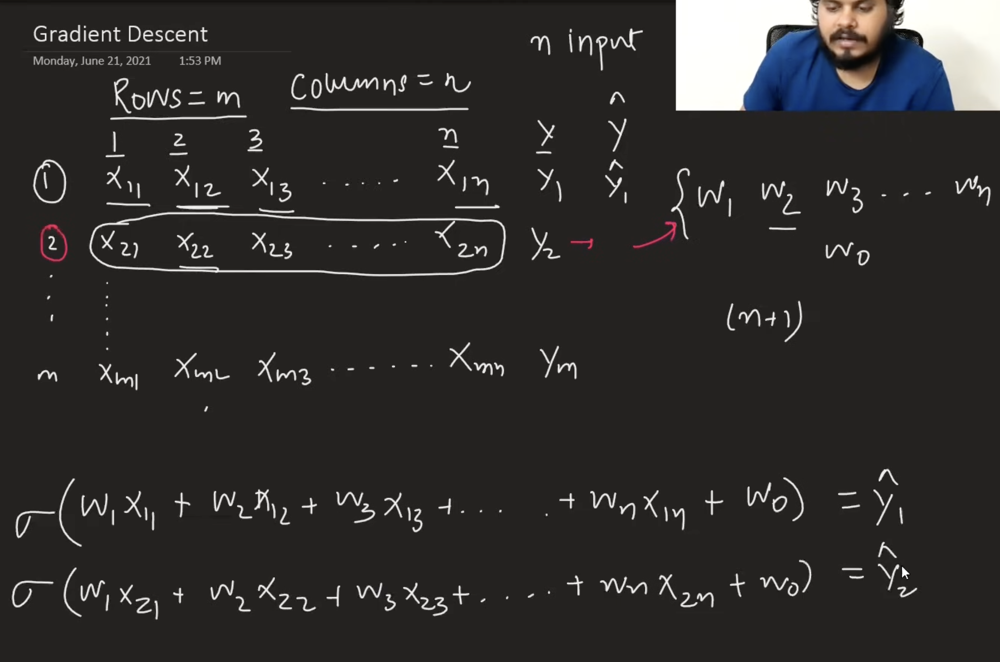
Start: rows, inputs, weights and individual predictions.
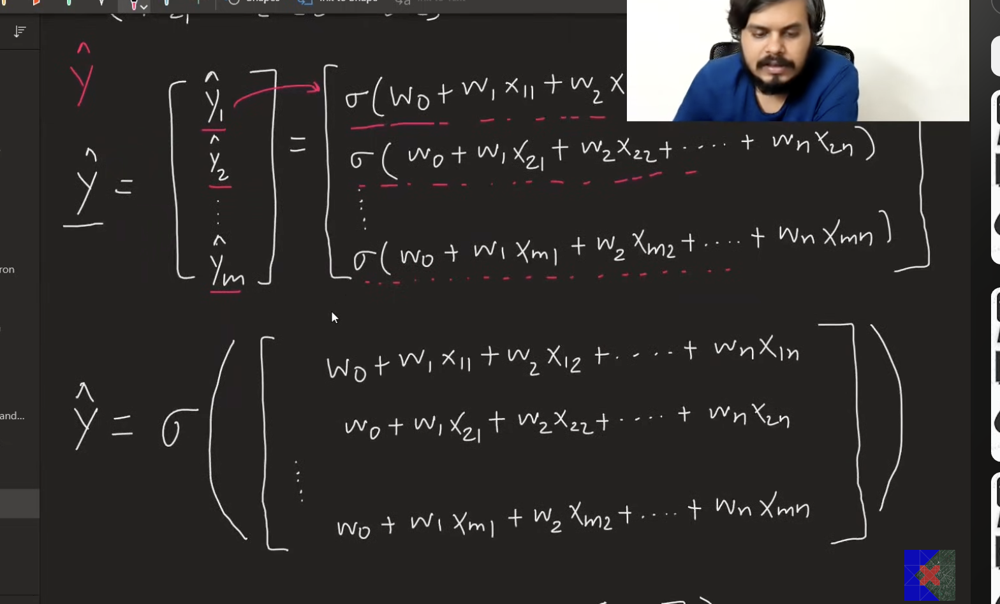
Har row ki sigmoid prediction stack karke vector banta hai.
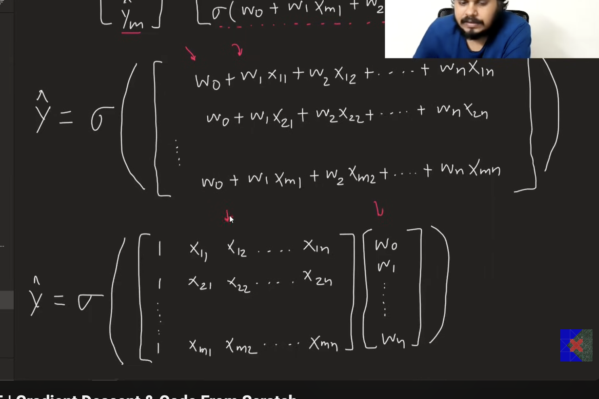
Ones column ke saath long row expressions matrix multiplication me convert hote hain.
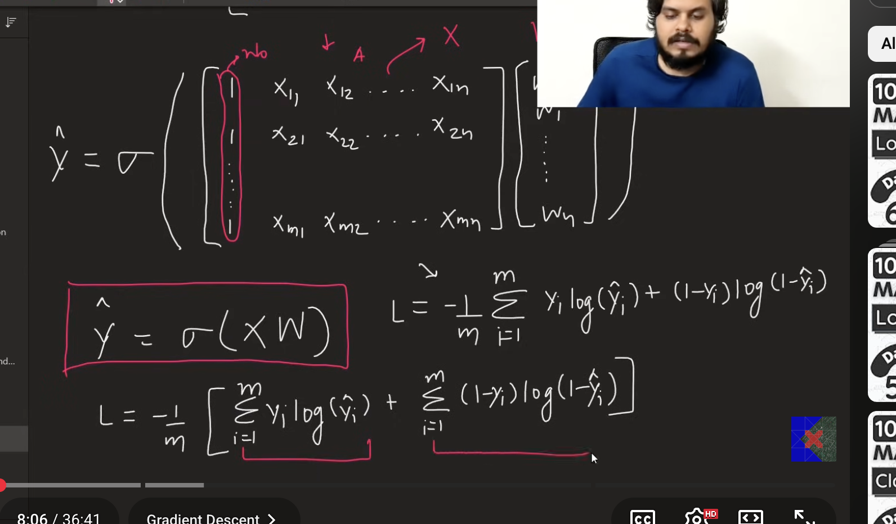
and BCE loss for all rows.
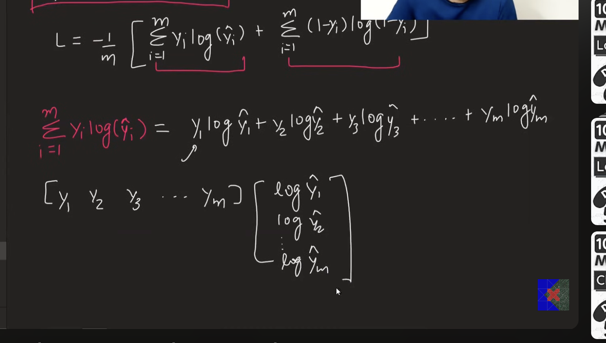
First summation ko row-wise expand karke dot-product form ki taraf le jaana.First term ka vector form.Second BCE term ka corresponding matrix form.Final matrix loss: is loss ko minimize karke Gradient Descent find karega.
76
Classification Metrics
Lecture ka exact flow: accuracy se start, confusion matrix/errors, phir imbalance ke through Precision, Recall aur F1 tak.
Step 1 — Test set par models compare karo
Same test rows ke actual labels aur model predictions compare hote hain. Example: Logistic Regression aur Decision Tree ko same held-out student-placement test set par run karo.
Agar 200 test students me 180 labels sahi aaye, accuracy , yani 90% hai.
Step 2 — Multi-class accuracy bhi same idea hai
Binary labels 0/1 ho ya Iris jaisi 3 classes, accuracy ka rule same hai: total rows me kitni predictions actual label se match hui. Multi-class me bhi model ke correct predictions count karke total se divide karte hain.
Step 3 — “Good accuracy” situation par depend karti hai
Ek fixed answer nahi hai ki 90% good hai ya 70% bad hai. Use-case dekho. Self-driving car ya cancer prediction me wrong prediction life-risk ho sakti hai, isliye hume almost 100% accuracy chahiye. But agar model bas predict kar raha hai ki customer order karega ya nahi, then 70% accuracy bhi useful/acceptable ho sakti hai—galat prediction ka damage comparatively kam hai.
High-stakes case Self-driving car, cancer detection → accuracy ko near 100% ke paas le jaana chahiye.
Lower-stakes case Customer order karega ya nahi → 70% bhi business ke liye useful ho sakta hai.
Step 4 — Accuracy ka issue: kaunsi mistakes hui, ye nahi batata
Suppose 100 patients hain aur model ki accuracy 90% hai. Accuracy bas itna bolti hai: 90 predictions correct, 10 wrong. But wo 10 wrong predictions me kya hua, ye nahi batati. Kya 10 healthy patients ko disease bol diya? Ya 10 actual cancer patients ko “no cancer” bol diya? Dono cases me accuracy 90% hai, but second case much more dangerous hai.
Isliye Confusion Matrix: total correct/wrong ko 4 boxes me todti hai. Positive = disease present (1); negative = disease absent (0). Ab exactly pata chalega model kis type ki galti kar raha hai.
Rows = Actual labels; columns = Model prediction. Green boxes correct hain (TP, TN); red boxes mistakes hain (FP, FN).
Actual / Predicted
Disease (1)
No disease (0)
Disease (1)
TP correctly caught disease
FN disease thi, model ne miss ki
No disease (0)
FP false alarm: healthy ko disease bola
TN correctly said healthy
Type I error = False Positive Healthy patient ko disease bol diya.
Type II error = False Negative Disease ko miss kar diya.
Step 5 & 6 — Multi-class confusion matrix
Three classes me matrix hogi. Rows = actual class and columns = predicted class.
Diagonal = true/correct predictions: cells me actual aur prediction same hai—for image me 7, 21, 13. Inka sum = total correct predictions.
Diagonal ke bahar = wrong predictions: example actual 0 ko model ne 1 ya 2 bola. Ye cells batate hain kaunsi classes ek doosre ke saath confuse ho rahi hain.
Step 7 — Imbalanced data: high accuracy, but useless model
Imbalanced dataset me ek class bahut zyada hoti hai aur doosri bahut rare. Airport screening example me 1000 passengers hain:
Actual data 999 passengers: not terrorist (0) 1 passenger: terrorist (1)
Bad model ka shortcut Har passenger ke liye simply predict: not terrorist (0)
Is bad model ne 999 normal passengers ko correct bola, but ek actual terrorist ko bhi “not terrorist” bol diya. Confusion matrix language me:
Why 99.9% is misleading: Score almost perfect dikh raha hai, but model ne exactly wahi rare, dangerous case miss kiya jise identify karna tha. Here —it caught zero terrorists.
Takeaway: Jab positive class rare ho, accuracy alone trust nahi kar sakte. Next, Recall batayega actual terrorists me se kitne catch hue; Precision batayega alarm diye gaye passengers me se kitne sach me terrorists the.
from sklearn.metrics import accuracy_score, confusion_matrix
accuracy_score(y_test, y_pred)
confusion_matrix(y_test, y_pred)
77
Precision, Recall & F1 Score
Imbalanced data me accuracy ka illusion todne ke liye positive-class performance alag se measure hoti hai.
Same accuracy: then which model should we choose?
Spam filtering ke dono models ko dekho. Rows = actual email; columns = model prediction. Dono me total 1000 emails aur correct predictions hain.
Dono models ki accuracy same hai, but unki mistakes same nahi hain.
Model 1
Accuracy More spam catch karta hai, but 30 genuine emails ko spam folder me bhej deta hai.
Model 2
Accuracy Only 10 genuine emails ko spam folder me bhejta hai, but 20 extra spam emails inbox me chhod deta hai.
Spam-filtering decision: Usually Model 2 choose karenge because it has fewer false positives (10 vs 30). Important genuine email ko spam folder me bhejna (FP) zyada harmful hai than some spam inbox me aa jana (FN).
Precision — isi spam example me
= jitni baar model ne positive predict kiya. Yahan positive = sent to spam. Model ne jin emails ko spam folder me bheja, unme se kitni actually spam thi?
Model 1 Precision
Model 2 Precision
Result: Model 2 ki Precision higher hai; ab uska selection calculation se bhi justified hai. Agar spam miss karna zyada costly hota, Model 1 fewer FNs ki wajah se choose ho sakta tha.
Same accuracy, different decision — Cancer detection
Ab cancer example me dono models ki accuracy again same hai. Total 10,000 patients me dono ke correct predictions hain, so each has 90% accuracy.
Same 90% accuracy, but cancer cases miss karne ki count different hai.
Model A
Accuracy
Model B
Accuracy
Cancer-detection decision: Model A choose karenge. Model A ka FP zyada hai (800 vs 500), but uska FN much lower hai (200 vs 500). Model B 300 extra cancer patients ko falsely “no cancer” bolega—ye dangerous miss hai.
Recall — isi cancer example me
= actual cancer patients. Recall poochta hai: actual cancer patients me se model ne kitno ko detect kiya?
Model A Recall
Model B Recall
Result: Model A Recall higher hai and fewer cancer patients miss karta hai. Yahan target FN minimise karna hai, isliye Model A choose hota hai.
Trade-off: threshold loose karoge to zyada positives catch honge (recall up), but false positives bhi badh sakte hain (precision down).
F1 score — dono ko ek saath balance karo
Ye harmonic mean hai, simple average nahi. Agar precision 1.0 but recall 0.0 ho, F1 bhi 0 aata hai.
Multi-class Precision, Recall & F1 — board calculation
Multi-class case me ek class ko ek time par positive maan lo aur remaining classes ko “not that class”. Isse har class ka apna Precision, Recall aur F1 nikalta hai.
Rows = actual class, columns = predicted class. Diagonal 25, 30, 20 are correct predictions; row totals are actual support and column totals are predicted counts.
Dog ko example lo: . Predicted Dog total , so . Actual Dog total , so . Then .
Class
TP
Predicted total
Actual total / support
Precision
Recall
F1
Dog
25
29
40
0.72
Cat
30
45
34
0.76
Rabbit
20
34
34
0.59
Macro average: each class equal
Weighted average: support ke hisaab se
Difference: Macro har class ko equal importance deta hai; weighted large class ko more importance deta hai. Agar rare class important hai, macro score dekhna useful hota hai.
from sklearn.metrics import classification_report
print(classification_report(y_test, y_pred))
Weighted Recall & Weighted F1 bhi same way se nikalte hain
Haan—weighted metric sirf Precision ke liye nahi hota. Precision, Recall aur F1 teeno ka weighted average nikalta hai. Har class ke metric ko uske support (actual rows) se weight karte hain.
Weighted Recall
Weighted F1
Complete weighted summary:
Finally: F1 higher ho to kaunsa model choose karein?
Default answer: agar false positive aur false negative dono equally important hain, higher F1-score wala model choose karo. F1 Precision aur Recall dono ko balance karke compare karta hai.
Model
Precision
Recall
F1
Model A
90%
60%
72%
Model B
75%
85%
80%
Spam filter → Model A Genuine email ko spam folder me bhejna = false positive, aur ye harmful hai. Model A ki Precision 90% hai, so spam bolne par zyada baar correct hoga.
Cancer / terrorist detection → Model B Cancer/terrorist ko miss karna = false negative, aur ye dangerous hai. Model B ki Recall 85% hai, so actual positive cases me se zyada catch honge.
Balanced task → Model B Example: customer order karega ya nahi. FP aur FN ka damage roughly similar ho, then higher F1 choose karo. Here Model B ka F1 = 80% is better than Model A ka 72%.
Memory rule: FP costly → highest Precision. FN costly → highest Recall. Both equally important → highest F1.
F1 Score — Precision aur Recall ka balance
F1 harmonic mean hai—not simple average. Agar Precision high but Recall low ho (ya reverse), F1 score bhi low rahega.
F1 kab use karna chahiye? — intuition
F1 = strict balance-checker. Model ko sirf correct positive predictions nahi karne (Precision), actual positives ko miss bhi nahi karna (Recall). F1 tab high hoga jab dono reasonably high hon. Ek strong aur ek weak ho, F1 overall score ko neeche kheench deta hai.
Use F1 Jab positive class rare ho aur FP aur FN dono matter karte hon. Example: customer churn prediction—wrongly “will churn” bolna unnecessary retention offer deta hai; actual churn customer miss karna revenue loss deta hai. Dono errors ko balance karna hai.
F1 ko priority mat do Cancer/terrorist detection me FN dangerous hai → Recall primary. Spam filter me genuine mail hide hona harmful hai → Precision primary. Wahan F1 dekh sakte ho, but final decision single high-cost error se hoga.
One-line rule: “Mujhe false alarms bhi nahi chahiye aur real positive cases miss bhi nahi karne” → F1 use karo.
F1 calculation example
Illustrative values lo: and .
Why not simple average? Simple average would be . F1 is slightly lower (79.69%) because it is harmonic mean and imbalance ko punish karta hai.
Finally: F1 higher ho to kaunsa model choose karein?
Default answer: agar false positive aur false negative dono equally important hain, higher F1-score wala model choose karo.
Model
Precision
Recall
F1
Model A
90%
60%
72%
Model B
75%
85%
80%
Spam filter → Model A False positive costly hai, so highest Precision choose karo.
Cancer / terrorist detection → Model B False negative dangerous hai, so highest Recall choose karo.
Balanced task → Model B Customer order prediction jahan FP/FN ka impact similar ho: higher F1 (80%) wala Model B choose karo.
Memory rule: FP costly → Precision. FN costly → Recall. Both equally important → F1.
Multi-class Precision, Recall & F1
Ye binary F1 discussion se separate topic hai. Multi-class case me ek class ko one-by-one positive maan lo aur baaki classes ko “not that class”. Isse har class ka Precision, Recall aur F1 nikalta hai.
Macro har class ko equal importance deta hai. Weighted larger-support class ko more importance deta hai. Rare class important ho, to macro score useful hota hai.
from sklearn.metrics import classification_report
print(classification_report(y_test, y_pred))
78
ROC Curve & AUC
ROC ka main purpose: classifier ke probability output se sensible threshold choose karna aur models ko threshold-independent way me compare karna.
ROC Curve ki zarurat kyu padi?
Binary classifier—Logistic Regression, Decision Tree, Naive Bayes, SVM, Neural Network—test row ke liye internally direct 0/1 nahi, pehle class-1 ki probability deta hai. Example: placement probability , , .
Yahan = threshold. Default sirf convention hai—not a universal best answer.
Threshold change karne se kya badalta hai?
Spam filter me positive = spam. Do errors possible hain: FN: actual spam inbox me aa gaya; FP: genuine/important email spam folder me chala gaya. Dono errors ki cost equal nahi hoti.
Threshold high: t = 0.75 / 0.95 Model sirf very-sure emails ko spam bolega. Isliye genuine emails comparatively safe rahenge, but kuch actual spam emails inbox me miss ho sakte hain.
Threshold low: t = 0.10 / 0.20 Model easily emails ko spam bolega. Isliye zyada actual spam catch honge, but genuine emails bhi galti se spam folder me ja sakte hain.
Lecture intuition: threshold hume ek particular error ko reduce karne ki flexibility deta hai. But correct threshold 0.35, 0.50, 0.75 ya 0.90 kya hai—ye manually guess karna hard hai. ROC isi educated choice me help karta hai. Next section me is effect ko TPR aur FPR terms se name denge.
ROC ke two axes: benefit vs cost
TPR — True Positive Rate / Recall
Actual positive cases me se kitne correctly catch hue. Spam system me: actual spam emails me se kitne spam mark hue. Benefit samjho—system apna purpose kitna fulfill kar raha hai. Higher is better.
FPR — False Positive Rate
Actual negative cases me se kitno ko wrongly positive bola. Spam system me: genuine emails me se kitne spam folder me gaye. Cost samjho—wrong alarm ka damage. Lower is better.
TPR example 100 actual spam me 80 catch hue and 20 miss hue:
FPR example 100 actual genuine emails me 15 ko galti se spam bola and 85 correctly inbox me rahe:
Ideal goal: maximum benefit with minimum cost .
ROC Curve banti kaise hai?
Test set ke har row ki class-1 probability lo.
Ek threshold choose karo—for example —and confusion matrix banao.
Us matrix se one point calculate karo: .
Threshold 0.90, 0.80, …, 0.10 par repeat karo.
Saare points join karo: x-axis = FPR, y-axis = TPR.
Reading direction: threshold very high hone par almost kisi ko positive nahi bolte → curve near . Threshold lower karte jaoge → more positives → TPR and FPR change karte hue curve end me tak ja sakta hai.
Best threshold: top-left ke closest
ROC graph ka ideal point = top-left corner hai: zero cost and full benefit. Real data me curve ka jo threshold-point is corner ke closest ho, wo balanced “best threshold” candidate hota hai.
Smallest distance wala threshold choose kar sakte ho. Lecture ki second visual intuition: random/reference diagonal se curve jitni door upper-left side me hogi, classifier utna better discriminate kar raha hai.
Important nuance: Top-left nearest is a balanced default. Agar business explicitly FN ko FP se far more costly maanta hai, threshold ko us cost ke according shift karoge—ROC decision ko informed banata hai, automatic business decision nahi.
Curve straight line nahi hoti
Threshold lower karne par TPR aur FPR same speed se nahi badhte. High-confidence actual positives pehle catch ho sakte hain while false positives abhi low rehte hain—so curve initially steeply up ja sakti hai. Later ambiguous negative rows bhi positive banne lagte hain, FPR faster badhta hai. Isliye usual ROC curve bowed/step-shaped hoti hai, not necessarily a straight line.
AUC ≈ 0.5 Random guessing / diagonal-line performance.
usually means ranking reverse direction me hai—labels/score orientation flip karoge to it can become useful. Higher AUC means better discrimination.
Two trained models ke ROC curves aur AUC compare kar sakte ho. Higher AUC wala model overall threshold range me better classifier hai. Production choice ke liye proper validation/cross-validation bhi zaroori hai.
Binary Logistic Regression sirf do labels ke liye hai. Three ya more classes ke liye Softmax use hota hai.
Binary se multi-class tak
Binary example: placed / not placed. But labels agar placed, higher studies, not placed hain, then model ko 3 classes me choose karna hai. Har class ke liye score banta hai:
Softmax ka important behaviour
All probabilities add to 1 .
Final label Maximum probability wali class: .
Independent sigmoid outputs ka sum 1 se zyada ho sakta hai. Softmax normalization ye issue solve karta hai. Binary logistic regression Softmax ka special case samajh sakte ho.
model = LogisticRegression()
model.fit(X_train, y_train)
pred = model.predict(X_test)
80
Non-Linear Logistic Regression
Linear Logistic Regression straight decision boundary banata hai. Curved pattern ke liye polynomial features add kar sakte hain.
Same model, smarter input features
Original two inputs par boundary straight line hoti hai. Degree-2 transformation ke baad model ko extra columns milte hain:
Expanded feature space me model linear hai, but original graph par boundary curved dikh sakti hai.
Fit rule:fit_transform() only training data par; test data par transform() use karo.
Degree badhane ka risk
Degree 2, 3, 5 se boundary flexible hoti jaati hai. But very high degree training points ko memorise kar sakti hai: training accuracy high, test performance low = overfitting. Degree validation/test performance dekhkar choose karo. Complex non-linear datasets me Decision Tree / Random Forest practical alternatives hain.